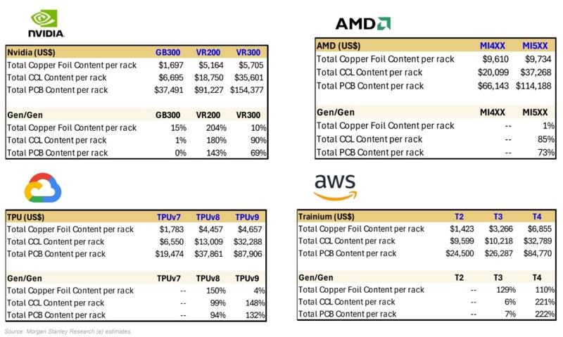
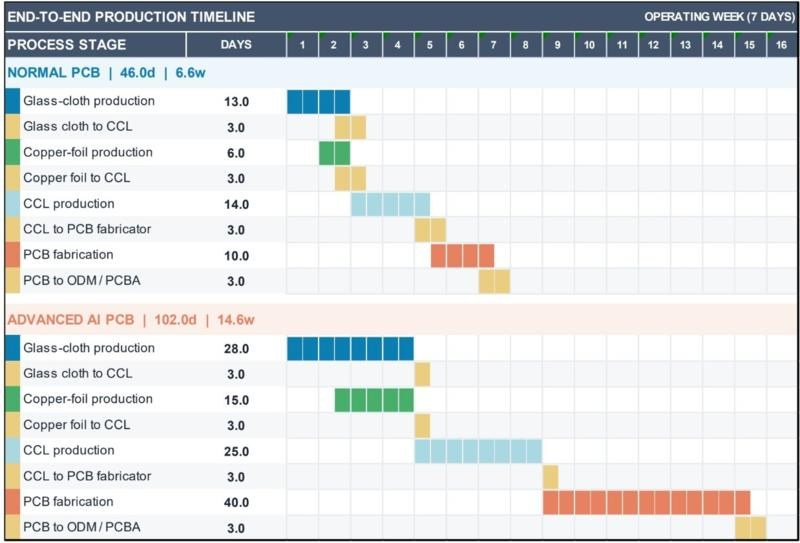
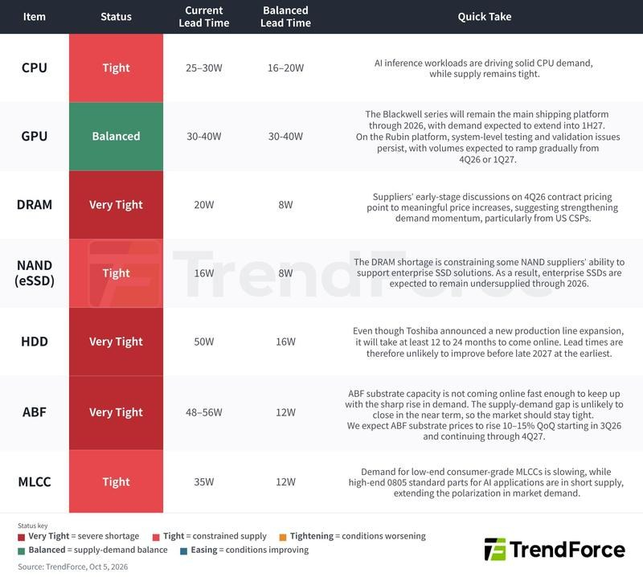
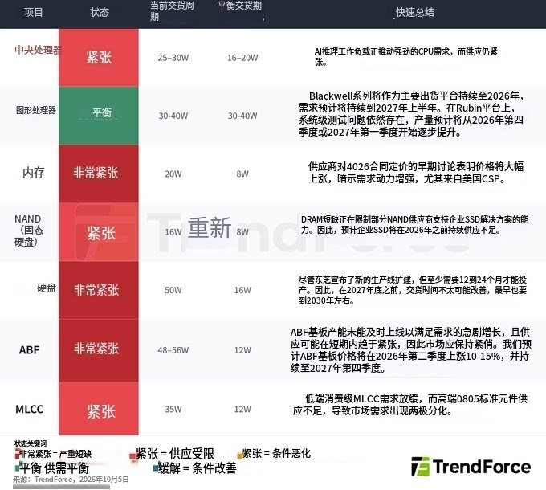

调研纪要 · 2026-10-06 新闻日报
星球 ID: 28855458518111 | 共 100 条帖子 | 精华 26 条
| 查看研究积累
强制同步到研究积累
全部 电子 计算机 非银金融 电力设备 机械设备 其他 宏观策略 传媒 医药生物 建筑材料 公用事业 建筑装饰 银行 石油石化 有色金属 纺织服饰
书签
“2026年国庆节大事记”速览
“2026年国庆节大事记”速览
DeepSeek最新一轮融资已接近敲定，至少将筹集800亿元人民币，宁德时代和腾讯承诺大额出资，最终规模可能接近1000亿元，为公司2027年初IPO铺路。
DeepSeek最新一轮融资已接近敲定，至少将筹集800亿元人民币，宁德时代和腾讯承诺大额出资，最终规模可能接近1000亿元，为公司2027年初IPO铺路。
月之暗面已完成最后一轮私募融资，估值约500亿美元，并正推进明年第一季度在香港首次公开募股（IPO）的计划。
月之暗面已完成最后一轮私募融资，估值约500亿美元，并正推进明年第一季度在香港首次公开募股（IPO）的计划。
彭博社：市场需求下降，中国基金关闭（清盘）数量达到八年来的最高水平
彭博社：市场需求下降，中国基金关闭（清盘）数量达到八年来的最高水平
高盛：AI 服务器电源供应链
高盛：AI 服务器电源供应链
[红包]【财通建筑建材】建材周观点1006：继续推荐高赔率的玻璃，传统地产链品种存预期修复机会
[红包]【财通建筑建材】建材周观点1006：继续推荐高赔率的玻璃，传统地产链品种存预期修复机会
[太阳]核心观点：本周沪深300跌1.84%，申万建材跌3.87%，玻纤和其他科技相关品种跌幅较大，对指数形成拖累，传统地产链龙头在政策催化和预期改善下涨幅可观，与我们前期提示的情形一致。我们认为当前稳投资是政策的主基调之一，在此情形下，地产链品种后续仍有望或政策催化，且基本面当前处于底部区域。电子布近期除受科技整体β影响外，传统粗纱企业入局对供给侧的逻辑形成一定压力，但短期基本面仍然坚挺，且三季报有超预期可能。科技品种中，我们更建议关注长期成长性良好的玻璃基板。综合来看，我们认为玻璃龙头当前市值低于重置价值，浮法、光伏玻璃供给改善已在库存、价格端显现；玻璃基板作为成长期权具备看点，推荐关注赔率较好的旗滨集团。除玻璃外，也建议关注建材科技股的潜在反弹机会和地产链龙头的困境反转机会。
[太阳] 政策及行业跟踪：政策方面，9月29日多部门联合发布居民购房贷款贴息政策，符合条件的新购首套住房，建筑面积不超过120平方米、总价不超过150万元，最高100万元商业性个人住房贷款可享受年化1个百分点、最长5年的财政贴息。本轮政策体现地产需求端托底与结构性金融支持同步加码，购房贴息直接降低首套刚需购房者的实际融资成本，有望促进部分观望需求释放、改善住房销售及房企回款，政策端继续从居民购房需求改善房地产及相关投资链条预期，若后续销售修复并带动房企资金面改善，地产链建材需求有望获得边际支撑。电子布涨价方面，10月价格继续明显上涨，但行业担忧PCB环节向下传导价格的力度不足，若传导不畅，电子布价格突破高位将比较有难度，但目前供需格局良好，短期也较难降价；电子布供给方面，内蒙古天皓宣布新建20万吨电子纱产能+1.6亿米电子布产能，该企业过往粗纱产能落地速度快、资金实力雄厚，尽管电子纱技术壁垒、投资门槛高于粗纱，但在当前高盈利吸引下，其未来落地可能性高，对现有电子纱企业尤其是二线企业冲击较大；而织布机虽然此前行业普遍使用丰田织布机，但是目前国产织布机已验证可用于生产，但效率方面和海外比有一定差距。
[太阳] 本周推荐组合：旗滨集团，兔宝宝，华新建材，瑞纳智能
1005两场ZJ要点总结🌞：持续紧缺的供应链资源和技术升级带来的产业链升级
1005两场ZJ要点总结🌞：持续紧缺的供应链资源和技术升级带来的产业链升级
1️⃣国产算力：ABF&HBM当前紧缺度提升：
1）HBM供应为最紧缺的核心瓶颈，海外原厂无法直供国内，仅能通过贸易商渠道采购，贸易商价格已达原厂价格的3倍以上；CX HBM3即将量产，但#供给量仅能覆盖国内20%-25%的需求，剩余75%-80%仍依赖海外渠道。
2）ABF载板整体缺口为20%-30%，核心瓶颈为ABF膜依赖日系厂商。
3）明年大厂Capex预留部分如遇GPU海外限制，#会转向HBM、SSD、CPU、网络芯片等关键物料备货。
2️⃣光模块散热：
1）光芯片封装级散热：芯片封装厂决定。
2）可插拔光模块壳体内部：芯片与壳体之间的热传导；TIM 99%以上使用凝胶，仅少数客户在1.6T光模块的DSP芯片上应用石墨烯垫片，#12W单组分可固化凝胶价格较8-10W凝胶高3-4倍，目前国产化率低（800G国产化率高）；未来方案升级：1.6T阶段主流用12-15W凝胶，3.2T阶段需要18-25W导热性能的凝胶。
3）光模块与交换机衔接层：光模块插入光笼子/交换机内部的热传导环节，涉及TIM材料和交换机散热系统。
4）TIM上游：#10W及以上导热凝胶已全部采用氮化铝粉体作为填料，1.6T、3.2T该趋势明确，氧化铝粉体仅用于10W以下的低导热凝胶。#高导热凝胶所需的高端粉体目前主要从日本采购；国内氮化铝粉体厂商包括金戈、苏州锦艺新材等。
【华西电子卜灿华团队】十一科技热点复盘
【华西电子卜灿华团队】十一科技热点复盘
十一期间海外科技大涨，纳指再创新高，截止10.6，半导体ETF SMH涨4.09%。据界面新闻，弱非农令加息预期降温，为科技反弹提供催化。
➠AI板块光通信涨幅明显，AAOI、Coherent分别涨22.48%、15.92%。
➠半导体板块SiC表现突出，Wolfspeed、Onsemi涨19.20%、11.79%。
🤖AGI热度持续上行，GPU、CPU需求有望继续上行
OpenAI于9月29日发布GPT-6.1 Sol；英伟达10月5日收盘再创新高。
英伟达此前指出，智能体越来越依赖CPU编排工具、执行代码和处理数据。从“回答问题”走向“执行任务”，有望带动CPU需求增加。
🌟我们认为GPT6和Muse的火爆，意味着AGI带领AI进入2.0时代，#Agent带来的便利性将激发更广泛的市场需求，大模型将进入新一轮的升级迭代，进而进一步拉动相关需求。
💎逻辑折叠，国产芯片新希望
据IT之家，麒麟9050 Pro等效晶体管密度较9030 Pro提升超50%，是华为韬定律“逻辑折叠”（LogicFolding）技术的首次商业化落地。
🌟我们认为9050 Pro意味着逻辑折叠开启了国产芯片新路径，#通过先进封装能力的演绎打开了国产芯片性能瓶颈，利好先进封装和国产链。
📋受益标的：
SiC：天岳先进、晶升股份、瀚天天成、芯联集成等；
CPU：海光信息、中电港等；
算力租赁：润泽科技、盛世科技、艾可蓝等；
专家标注：友邦吊顶、麦迪科技等；
先进封装：盛合晶微、颀中科技等。
☎️AI2.0：AGI时代到来
⏰10月06日（周二）16:00
☎️十一科技板块复盘
⏰10月07日（周三）9:00
#接入电话： 400-810-8099
#参会密码： 677943
外呼请联系对口销售或华西电子团队，卜灿华(SAC：S1120524120006)
【天风海外】为什么AI4S成为国庆内美股瓶颈交易的核心？
【天风海外】为什么AI4S成为国庆内美股瓶颈交易的核心？
上月TWIST DNA SDGR等AI4S核心标的均上涨40%以上，昨日板块再度大涨，TWST+8%, SDGR+8%,TEM+9%,DNA+20%,
周末Anthropioc研究员Call生物为下一个最重要场景，实验室是最大瓶颈：Sholto Douglas & Nicholas Marwellb被 Joe Lonsdale采访。两位Anthropic研究员表示：最大下一个场景是生物学。认为在未来 6 到 24 个月会类似软件工程，社会收益更广泛而强大。表观遗传学（epigenetics）与长寿研究等AI常见场景将是生命科学领域最重要的技术，甚至可能是史上最重要的技术。实验室为瓶颈担心美国有没有足够的实验室和物理基础设施，明显落后于中国，重建供应链和实验室体系应当成为一项重大的社会基础设施工程。
生物计算“防御能力”能力成为硅谷最紧急的事情：Anthropic研究员表示类似网络安全，生物防御能力提升甚至更为紧急，生物防御大致有四根支柱：检测与监测、归因、对策，以及政府层面的威慑。
Radical Numerics CEO Eric Nguyen表示正在用大量湿实验室数据训练生物模型“思维链”。其产品Evo 证明预训练能跨模态，但在人类遗传学上仍落后。Omni 的重点是中训练和后训练，例如给定野生型和突变，标出可能的致病变异。特殊 token 用来告诉模型当前要做预测还是设计。模型预训练在 DNA 上，RNA数据也可以进行后训练。对于定位症状起作用的基因组与抗菌影响巨大。
北美成长型买方机构开始站台：Baillie Gifford 9 月中旬写 Twist 是 “AI biology 的物理层”；Altimeter 十月四号发布长文把链条写成 DNA → 蛋白 → assay → 测序 → 自动化 → 临床前，点名 $TWST、金斯瑞、Illumina、10x Genomics 和 CRO。
📩 相关欢迎联系天风海外 AI 李泽宇
🌋 请支持天风海外/传媒互联网刘欣团队
【国联民生交运】返程在即，国庆假期出行数据观察
【国联民生交运】返程在即，国庆假期出行数据观察
铁路、营业性巴士客流同比表现强，民航“量稳价升”，小轿车自驾客流同比下滑。10.1-10.4全社会日均人员流动3.11亿人次，同比+0.04%：铁路日均2139万人次（+8.4%），公路日均2.85亿人次（-0.6%），其中非营业性（自驾）日均2.46亿人次（-1.7%）、营业性大巴日均3990万人次（+7.0%），民航“量稳价升”，日均237.5万人次（-1.0%），国内航班日均14310班（-1.2%），国际航班日均2430班（+1.5%），国内线票价日均839元（+3.6%）。
分时段看：
9.30-10.1全社会日均2.74亿人次（-3.9%），首日3.29亿人次是全假期峰值，铁路日均2237万人次（+7.6%），民航客流日均248万人次（+1.6%），国内机票价格1013元（-1.5%）。
10.2-10.4假期中段客流回落，以短途出行为主，铁路客流延续高增：全社会日均3.05亿人次（+0.7%），铁路日均2012万人次（+8.2%），民航客流日均233万人次（-2.0%），但国内机票价格773元（+5.4%）。
回程时段展望：10.6-10.7中秋、国庆两段客流集中返程，国内机票预售价格为假期最高，目前预售降价不明显，10.5-10.7国内机票预售价格908、1062、1151元（同比+27%/+30%/+14%）。
欢迎联系国联民生黄文鹤18811018307/张骁瀚15900361585/陈佳裕/潘正则
【国泰海通电新徐强团队】NV新高，AI电源蓄势待发
【国泰海通电新徐强团队】NV新高，AI电源蓄势待发
1️⃣上游零部件拉货，AI电源逐步走向业绩兑现期。上游零部件PCB、模拟功率等器件大幅锁单，预计麦格米特出货指引在80-120亿元，欧陆通出货指引在40亿元。此外，AI测试电源自7-8月开始放量，Q3开始国内两家测试电源公司及致茂订单大幅提升，7-8两个月订单数据超过26H1上半年，测试设备主要用于电源生产和出厂检测环节，测试设备拉货预计离出货时间越来越近。一系列产业信息预示着AI电源出海公司订单和业绩兑现有望持续催化。
[庆祝]受益标的：麦格米特、欧陆通、科威尔、爱科赛博。
2️⃣全球功率/模拟器件公司进入板载电源市场，板载电源海外龙头与台达竞争加剧。二次板载电源原本以台达为主~60%全球份额，三次板载以MPS、英飞凌为主导，两者合计~80%份额；模拟/功率龙头公司也具备二三次板载电源设计能力，且随着SiC/GaN应用提升，ASIC电源方案百花齐放，跨界进入板载领域趋势愈发明显，如ADI等。
[庆祝]受益标的：
新雷能：全系列多料号布局→多客户格局，谷歌PDB及其他客户有望超预期。
铂科/龙磁：受益MPS/伟创力进入更多ASIC体系。
行业及公司更新联系徐强/孙炫浩
【国联民生计算机】智谱大涨8%：官宣接入AWS Bedrock，海收入增长迎来强劲催化剂
【国联民生计算机】智谱大涨8%：官宣接入AWS Bedrock，海收入增长迎来强劲催化剂
[太阳]亚马逊云科技（AWS）旗下大模型服务平台Amazon Bedrock官宣接入智谱GLM-5.3，AWS基于模型调用量与智谱进行【收入分成】。据产业调研，智谱近期与国内云厂商也达成类似协议，公司收入增长迎来强劲催化。
[太阳]参考早先接入AWS Bedrock的MiniMax、Kimi等厂商，海外收入占比长期稳定在60-70%；智谱当前海外收入较低，有较大提升空间。
[太阳]中美AI重回合作态势，华为对高通的专利授权与智谱与AWS的收入分成都在验证该产业趋势，全面看好中国大模型全球化机遇，持续推荐智谱、minimax等。
联系人：国联民生计算机吕伟/白青瑞
【国联民生计算机】"国模+国芯"伟大机遇再次迎来新进展：昇腾950支撑DeepSeek向10万亿参数外推
【国联民生计算机】"国模+国芯"伟大机遇再次迎来新进展：昇腾950支撑DeepSeek向10万亿参数外推
我们持续强调模算协同是中国AI产业的伟大机遇，"国模+国芯"核心主线再迎新进展：
华为CANN社区公开的DeepSeek预训练技术文件显示，基于昇腾950超节点、经DeepSeek-V4-Flash训练验证，已分析550B、1.6T模型切分策略，并研究向10万亿参数规模外推的部署权衡，公开技术资料中模型体量触及10万亿参数量级。
剑指10万亿参数："芯模"深度共建
华为联合定义UBL128组网方案（128卡3.2Tbps单层交换网络），DeepSeek自研的DeepEP通信库实测Dispatch带宽375GB/s、接近硬件上限，相关成果已同步在CANN社区开源。
软件生态短板到加速补齐，模算协同正从软件栈向超大规模训练延伸
9月30日DeepSeek已开源面向昇腾的全套基础组件，涵盖编程语言TileLang、计算库与分布式通信库，与此前面向英伟达平台的开源组件一一对应；DeepSeek训练中用到的每一个TileLang算子，在昇腾上都有对应的高性能实现。
风险提示：国产算力需求释放节奏、软件生态建设进度不及预期。
联系人：国联民生计算机吕伟/郭新宇
【中信证券前瞻】美股科技周观点（9/28~10/4）：越来越多软件公司从“AI威胁论”中突围
【中信证券前瞻】美股科技周观点（9/28~10/4）：越来越多软件公司从“AI威胁论”中突围
---------------------------------
市场总结：虽然高油价等宏观噪音继续困扰市场，但疲软的9月就业数据推动市场大幅下调10月降息预期，市场焦点转向两周后的通胀数据。受系列公司投资者会议、财报、产品发布会等事件驱动，本周美股半导体、软件行业指数均录得明显上涨，纳斯达克100创下历史新高，SOX距离6月份高点仅10%，市场对Agent的讨论亦逐步回归理性，META等个股周内小幅回落；
Hyperscaler：经过过去几周的疯狂追逐之后，市场开始从算力消耗、用户信任&安全、渠道分发、任务完成率等维度对比分析AI Agent产品，OpenAI Dots的发布略显平淡，并未如预期给市场带来相应的冲击。谷歌发布旗舰模型Gemini 4 Argon，主要SOTA指标进入一线梯队，但市场显然期望更多，特别是谷歌搜索等产品如何应对来自Muse等Agent产品的冲击。中短期维度，AI叙事正持续向有利于CSP、平台软件厂商的方向演进，我们继续维持头部CSP底仓配置的观点，并建议逆向布局，短期偏好：谷歌、微软；
半导体硬件：本周板块内部继续出现明显轮动，SOX指数、光通信、半导体设备（SPE）领涨市场。美光（MU）的财报几乎没有任何明显瑕疵，但当前市场显然更关注“高景气的持续性”，公司表示存储芯片供需紧张局面料将在2027/2028年持续，结构上利好算力三支柱（计算、存储、网络）中的网络。东芝扩产的信息再次为HDD市场注入恐慌，但考虑到东芝本身技术的落后，以及实际执行力等，预计中短期对HDD既有供需格局的影响较为有限，STX、WDC股价的大幅下跌更多反应当下市场的脆弱情绪。未来两周，考虑到10月12日的OCP会议，以及10月中旬的ASML、台积电财报等，我们战术性看好光通信、半导体设备。同时在三季报开启前，我们判断美股半导体硬件仍将继续保持上行势头，考虑到板块内部的不断切换，SOX为最佳做多对象；
软件&互联网：本周埃森哲（ACN）、新思(SNPS)投资者会议释放出的乐观业绩指引，继续延续市场在软件领域对“AI威胁论”的不断修正，反映出AI对软件板块更多是中性偏正面影响。未来3周，我们将看到更多软件企业的年度投资者会议，这亦将是其向资本市场传达乐观指引，并进一步从AI威胁论中突围的重要事件性机会。中期维度，应用软件、互联网板块机会更多依赖于三季报乐观数据&展望的注入。信息安全、基础软件虽面临持续的高估值的担忧，但作为典型的动量股，成长性依然是最为核心的支撑，我们亦开始观察到市场兴趣向二线信息安全个股扩散的迹象；
未来1~3个月判断：美债收益率不断创下新高，但特朗普TACO、FED加息预期重置均构成潜在option。考虑到短期前沿模型密集发布、宏观悲观预期见顶等，我们继续维持未来1个月、三季报开启前市场的乐观看法，优选SOX、IGV.ETF。伴随10月中旬三季报开启，以及中期选举的临近，市场波动性料将显著加剧，预计三季报后市场交易逻辑逐步趋于清晰；
下周关注：重要企业投资者日：Marvell（MRVL）、Zscaler（ZS）。
[红包]浙商机械 邱世梁|王华君 【金刚石散热】中科粉研扩产项目公示，金刚石散热产业化加速，持续推荐！[福][福][福]
[红包]浙商机械 邱世梁|王华君 【金刚石散热】中科粉研扩产项目公示，金刚石散热产业化加速，持续推荐！[福][福][福]
1️⃣中科粉研金刚石散热片扩产项目完成用地规划公示，行业扩产加速推进
项目计划#年产4万片金刚石散热片（4英寸单晶），可用于GPU散热。总投资14亿元，目标三年内达到年产值30亿元。
项目6月签约，8月环评获批，9月底完成用地规划公示，#计划建设工期24个月，目标26年底投产200台MPCVD设备，#达产后MPCVD设备预计将达500台，可生产2-4英寸单晶晶圆。
2️⃣我们预计金刚石和金刚石铜产业化在即
1）单晶金刚石：#热导率最高，长晶速度快，可用于Chip-to-Wafer键合。
2）多晶金刚石：目前散热片尺寸可达8英寸以上，可用于Wafer-to-Wafer键合。
3）金刚石铜：#相较纯金刚石可加工性更优，成本更低。目前已落地郑州国家超算中心、联想部分型号笔记本等。
3️⃣头部企业产业化进展加速，未来有望“订单为王”，例如：
①九州一轨：投建金刚石芯片基板建设项目（一期），产品覆盖单晶、多晶金刚石片，#项目部分分包合同已经落地。
②国机精工：金刚石铜、单晶、多晶金刚石均已向重点客户送样验证，#年内有望获小批量订单。
③斯莱克：#与北科大联合开发的金刚石复合材料热沉样品已进入测试阶段，未来有望在AI光模块领域取得突破。
④杰美特：子公司戴尔蒙德（持股52%）拥有全国最大的CVD纳米金刚石涂层产业化基地，#CVD金刚石涂层成本、交付优势显著。
⑤宏昌科技：拟收购昆吾半导体和尤品新材料各45%股权，#标的公司核心产品包括金刚石散热材料。
⑥沃尔德：投资5.2亿元扩产金刚石散热衬底，#达产后年产能65万片。12英寸多晶已实现高平整度、高良率的稳定生长，#目前处于小批量验证阶段。
⑦黄河旋风：拥有国内首条8英寸金刚石热沉片生产线，#大尺寸热沉片已经通过华为、中芯国际等头部企业验证。
⑧四方达：#金刚石散热片已取得小批量测试订单，控股子公司天璇半导体（合计持股50.3%）拟投资4.5亿元扩产CVD金刚石散热片，#达产后可实现年产2.5万片4英寸级CVD金刚石散热片。
[太阳]投资建议：推荐九州一轨、国机精工、四方达、斯莱克、杰美特等；关注宏昌科技、沃尔德、黄河旋风、晶盛机电、中兵红箭、力量钻石、惠丰钻石、恒盛能源等
风险提示：市场需求不及预期、技术迭代不及预期、市场竞争加剧
☎【浙商机械 邱世梁/王华君18610723118/蒋逸18158576706/秦乐恒15221680140】
【西部银行】巴西首轮选举投票出炉，银行怎么样？
【西部银行】巴西首轮选举投票出炉，银行怎么样？
#背景
🇧🇷巴西大选，二选一格局已price in，但首轮投票Flávio Bolsonaro反超现任总统Lula 2个百分点，跑赢民调预期。两人都承诺改善财政状况，但前者偏快速，后者偏渐进。
📈巴西股债汇波动，艾涛巴西联合银行（ITUB.N）截至此条消息发布上涨16%+。
#巴西宏观指标现状及对银行的影响
1、政府债务高（政府债务/GDP达82.5%）+利率处于极高位（政策利率13.75%+）。如B上台，其倡导压缩政府支出、降低赤字、稳定债务，预计国家风险折价缓解，同时利率下降，选后2035年到期利率期货隐含利率-126bp，市场风偏提升。
2、降息有望降低银行信用成本+刺激信贷增长。艾涛年化信用成本2.7%、90天以上不良率1.9%，进一步降息利于减轻借款人负担，缓解银行拨备压力。同时，融资需求预期改善，艾涛是本土大行，受益直接。
3、中收修复预期提升，巴西资本市场波动较大，市场风偏回升有利承销、经纪和资管业务修复。
4、汇率放大美元ADR涨幅。美元对巴西雷亚尔降至4.97，收跌约4.6%，雷亚尔升值提高本币股票的美元折算价值，艾涛的美元ADR可同时获得股价和汇率贡献。
5、下一博弈时点为10月25日（北京时间26日凌晨投票结束）决选，结果确认可能还需时间，不固定。后续着重关注巴西稳财政措施的落地情况。
AI 药物研发正成为一种 “瓶颈交易”
AI 药物研发正成为一种 “瓶颈交易”
当一个行业开始经历真正的范式转移时，我会感到兴奋。AI 药物研发（“AIDD”）看起来正处于这样一个时刻。
两件事正在发生：
1、上游：前沿 AI 实验室正蜂拥而至。
2、下游：供应链正在发生明显的变动。
供应链调研显示，药物发现和早期临床前研发的上游 “卖水者”（基础工具与服务）已开始感受到实验量的显著增长。
完整链路为 DNA → 蛋白质 → 筛选分析 → 测序 → 自动化 → 临床前测试。
该产业链条中的代表性公司包括\(TWST、@GenScript、\)ILMN、$TXG，以及实验室自动化供应商和 CRO。
$TWST 预计在 2026 财年，AI 赋能的药物研发订单将实现三位数的百分比增长，并在 2027 财年再次实现三位数的订单增长。
@GenScript 的 AIDD 业务在 2026 财年上半年同比增长了一倍。其现有平台宣称具备每日 4000 多个设计的工业级验证能力，并集成了从序列到数据的完整工作流。我们的渠道调研显示，其增长速度甚至更快：目前约为每日 8000 个设计，并有望在 2026 年底达到每日约 16000 个。
为什么 AI 会驱动更多的湿实验需求？
1、AI 让假设生成几乎零成本 → 尝试机会大幅增加。
瓶颈正在从专家驱动的设计转向生物学验证。
2、AI 模型需要持续的实验反馈 —— 而且无论好数据还是坏数据都有价值。
传统上，只有信心最高的一流（A + 级）候选药物才会被推向昂贵的验证环节。有了 AI，即使是 B/C 级的候选药物也具有价值，因为失败的实验也能生成训练数据。
@GenScript 表示其从序列到结合的工作流程可以在 4-7 天内返回数据，而更快的周期至关重要，因为 AI 模型依赖于持续的实验反馈。
@Anthropic 是一个典型的例子。@claudeai 设计了 1320 个蛋白质结合剂。@adaptybio 将这些数字序列转换为 DNA，表达了蛋白质并测试了结合情况。结果只有 354 个成功结合。而那 966 个失败案例也并未被浪费。它们是很有用的负标签：哪些不表达、哪些不结合、哪些亲和力差。这些结果有助于训练下一次模型迭代。
3、湿实验室不再仅仅是在制造药物。它们正在制造训练数据。
$TWST / @GenScript 越来越像生物数据代工厂。
$TWST 明确提到了从 AI 设计的序列中生成模型就绪型数据。在某些工作流程中，客户可能并不那么在意是否收到蛋白质实体，而更在意将结构化的实验结果反馈回模型中。
传统药物研发会问：候选药物 X 有效吗？
AI 药物研发还会问：这项实验能教给模型什么？
AIDD 的市场规模（TAM）
如果 AI 仅仅是一种更好的研发工具，那么相关的支出池就是全球制药业每年 3000 亿至 4000 亿美元的研发费用。如果 AI 能显著增加可行药物项目的数量，那么机遇将更为广阔，因为它会扩大下游对 DNA 合成、蛋白质生产、检测分析以及临床前工作的需求。
短期来看，我们也可以从 AI 公司的支出中衡量需求。如果 Anthropic 在 2026 年达到 800 亿美元的年度经常性收入（ARR），并且仅将 1% 用于 AIDD，仅此一项就意味着每年约 8 亿美元的投资。
交易布局
这是一个可能具有长期潜力的交易。在 I/II 期临床结果出来之前（2028 年及以后），很难真正停止发力。
这闻起来非常像我们刚刚在半导体领域看到的瓶颈交易：GPU→HBM→网络→电力 / 冷却。在生物学领域，它基本上遵循药物研发的流程：AI 模型 → 设计 → DNA / 蛋白质 → 检测 → 临床前产能。
在完成上游的 “卖铲子” 阶段后，动物实验 CRO 可能会成为下一个瓶颈。猴类价格已经接近历史高点。AIDD 将更多的候选药物推向临床前开发阶段，只会进一步增加这一需求。
但是临床试验难道不是瓶颈吗？
这是我们不断遇到的最大质疑。无论药物发现的速度变得多快，药物仍然需要经过临床前→I 期→II 期→III 期→审批。你仍然需要患者、时间和资金。
但这并不意味着 “瓶颈交易” 行不通。更多可行的候选药物 —— 尤其是具有更高成功率的药物 —— 仍然意味着整个开发过程中会有更多的需求。
而且谁知道呢：临床试验本身最终也可能被 AI 优化。
什么会打破这一交易逻辑？
短期来看，如果实验预算停止增长、AI 生成的设计无法转化为有效的实验验证结果，或者产能过快追上需求，那么这种 “卖铲子” 的交易逻辑就会破裂。
长期来看，如果 AI 药物在药物发现或 I 期临床阶段表现出色，但在 II/III 期临床中仍以常态概率失败，那么这一论点就不再成立。这就是为什么 II 期临床如此重要的原因。
里程碑
2026 年底至 2027 年：首批由 Isomorphic 设计的药物进入人体临床试验，更多 AI 原生项目进入 IND 申报准备 / 毒理学阶段。
2028 年至 2030 年：临床试验结果将开始揭示，AI 设计的药物在实际表现上是否优于传统药物。
【异动点评｜全球能源板块】
【异动点评｜全球能源板块】
纽约时间10月5日
巴西石油Petrobras（PBRUS）涨幅超11%
核心催化：10月4日巴西大选首轮结果超预期，弗拉维奥·博索纳罗反超卢拉，市场化政策预期升温，推动Petrobras政策折价收窄。公司此前在阿马帕州近海Morpho井再发现含油层段，进一步强化该区域资源潜力预期。
风险提示：10月25日第二轮大选结果仍存在不确定性；新发现的资源规模及商业开发价值仍待进一步评价。
如需完整观点，欢迎联系华福国际研究对口团队索取
十一假期数据解读：走得更远，花得更省
十一假期数据解读：走得更远，花得更省
十一假期前五天（10月1-5日），全社会跨区域人员流动量预计15.50亿人次，同比仅增长0.5%，处于今年各假期低位；重点商圈客流量、营业额同比增长3.4%和5.3%，景区接待人次增长3%-10%，电影日均票房同比下降33.3%。整体呈现“总量持平、结构生变”的特征，我们简要解读如下：
1）总量平淡不等同于需求走弱。一是高基数，去年国庆与中秋重叠形成8天长假；二是分流，今年中秋与国庆仅隔3个工作日，“请3休13”使部分出行提前至中秋及节前释放，迁徙指数同比增速的峰值也出现在节前而非假期内。
2）走得更远是日历效应，而非消费升级。出游距离1000公里以上的游客规模预计同比增长9%，入住4个及以上城市的游客增长53%。但铁路客运量增长11.9%，民航客运量下降1.6%，自驾出行负增长，走得更远的人选择了更便宜的方式。居民放松的是时间预算而非收入预算，一旦中秋与国庆间隔拉大，长线游的高增长将随之消退。
3）“量强价弱”仍在延续。山东重点景区人均旅游收入测算下降3.3%，海南离岛免税人均购物金额下降3.6%，电影平均票价下降1.9%。更值得关注的是，离岛免税单件价格涨幅由此前各假期的4%-7%收窄至0.8%，“买得少但买得贵”的支撑减弱。同时，头部景区和一线城市吸引力边际减弱，客流向腰部景区和低线城市外溢。
4）入境游是少数增量亮点。10月1-3日上海口岸入境外籍旅客同比增长18.9%，而口岸出入境总量仅增长2.4%，入境游客的活动范围正从口岸城市向特色小城下沉。但目前体量仍小，对总量的拉动有限。
5）维持原有判断，居民出行意愿仍在，但支出上依然谨慎，“量强价弱”已贯穿今年以来的所有假期。后续需关注节后消费的回落幅度，超长假期对节后需求的透支可能大于往年。
整体来看，十一假期的数据没有改变我们对消费的基本判断。短期以旧换新和消费补贴仍将发挥托底作用，中期需要通过稳就业、稳收入改善居民预期，增加有效休假时间可以作为低成本的补充手段。
🌎【国联民生海外｜美股】SpaceX大涨点评：监管开始为高频复用让路❗️
🌎【国联民生海外｜美股】SpaceX大涨点评：监管开始为高频复用让路❗️
💡事件：10月5日，FAA发布商业航天新规提案，拟进一步简化发射及再入许可流程。同日，SPCX当日大涨7.63%。
1️⃣ #我们认为，本次变化的意义在于监管体系开始进一步适配“高频复用”。SpaceX下一阶段的核心矛盾正在从技术复用逐步走向工程复用。发射许可、空域协调等制度效率在此过程中亦重要。
2️⃣ #Starship的价值远不止一枚更大的火箭，而是SpaceX战略通道的底座。我们此前将SpaceX类比为大航海时代的东印度公司，核心就在于其对【战略通道】的集中度判断。结合前期Flight 14已突破，Starship的高频化发射本质上或同步打开SpaceX后续多个业务的规模上限。
3️⃣ #因此我们的判断仍然不变：商业航天的长期价值在于由一次性工程向常态化运输能力转变的经济性突破。我们认为新规进一步利好SPCX链的长期逻辑。建议关注全球商业航天核心龙头【SPCX】。
风险提示：规划不及预期；火箭发射成本下降速度不及预期；行业竞争加剧等。
☎️欢迎联系国联民生海外团队孔蓉/樊程安吉/赵志远
[礼物]重视A股唯一光遗传学概念：罗博特科/ficonTEC
[礼物]重视A股唯一光遗传学概念：罗博特科/ficonTEC
2026年诺贝尔生理学或医学奖授予光遗传学领域三位先驱，光遗传学核心是通过特定波长光线精准调控神经细胞，底层涉及激光器、光纤、微光学及生物光子器件。
[礼物]罗博特科旗下 ficonTEC 是全球光子自动化组装设备龙头之一，已明确布局 BioMedical生物医疗光子，并参与欧洲医疗光子项目 PhotonMed，覆盖医疗光子器件集成、封装及自动化制造。
[礼物]光遗传学产业化的核心硬件方向之一即生物光子器件的小型化与集成化，ficonTEC技术平台具备较强延展性。
韩国媒体报道，韩国的JNTC将于明年开始向博通供应玻璃芯基板。
韩国媒体报道，韩国的JNTC将于明年开始向博通供应玻璃芯基板。
瑞银：各供应商的 HBM 年末产能
瑞银：各供应商的 HBM 年末产能
摩根士丹利报告总结：北美电信网络设备—FCC或针对3.2T光模块出台监管规则
摩根士丹利报告总结：北美电信网络设备—FCC或针对3.2T光模块出台监管规则
核心要点
1.政策方向：监管大概率落在3.2T光模块
投行团队华盛顿调研显示，FCC拟通过《
Covered List ↗ 》实施管制，约束中国产3.2T光收发模块，最早或2026年10月启动，采用分阶段落地模式。
设置豁免条款：若物料清单（BOM）中美国本土元器件占比≥65%，中国制造的光模块仍可进口；DSP+激光器就可接近该占比门槛。
3.2T规模放量预计到2029年，短期对收入冲击有限；政策目标是重塑下一代供应链，而非立刻替换现有800G/1.6T中国供应，不会对云厂商（超大规模客户）现有建设造成瓶颈。
2.利好上游激光器厂商LITE（Lumentum）、COHR（Coherent）
- 规则无需美国企业切入低毛利的光模块组装业务（组装业务毛利率仅30‑40%，激光器稳态毛利率超50%，最高接近75%），主要利好高速激光器价格与组件份额。
- 中国模块厂商（中际旭创Innolight、新易盛Eoptolink）若要满足65%美系物料要求，会减少选用国产激光器，降低国产激光器冲击市场的风险。
3.美国本土光模块产能严重不足
- 美国仅AAOI具备可观光模块制造能力，预计2026年末年化产能1200万只800G/1.6T；中际旭创+新易盛年化合计1.01亿只，是AAOI的8倍以上。
- AAOI满产情况下仅可支撑约3.7GW AI算力网络需求。想要大规模替代国内厂商供给，需要多年大规模扩产，短期美国产能无法承接需求转移。
4.关键风险：InP磷化铟衬底供应链
- InP衬底是激光器产能扩张的核心瓶颈。若中方认为政策不公，或收紧InP衬底出口。
- 非中国地区供应商将间接受益：JX Advanced Metals、住友电工、古河电工。
与LITE企业访谈的印证
LITE反馈监管需要分阶段实施，当前60‑65%光模块来自中国，骤然管制会造成供需剧烈扰动；同时公司对光模块组装业务兴趣有限。本次FCC政策的分阶段+物料占比豁免设计，契合企业的诉求。
四大核心观点提炼
1.监管瞄准3.2T下一代产品，短期影响可控，不扰动800G/1.6T存量；
2.受益主体是激光器芯片环节，不一定带来光模块份额大洗牌；
3.美国本土模块产能缺口巨大，短期不具备大规模替代条件；
4.InP衬底供应链是最大潜在风险点，日本相关供应商有望受益。
风险提示：报告为机构研究观点，不构成投资建议。
瑞银——美国半导体与半导体设备行业SemiBytes——AVGO、SEMICON展会前瞻、STX/WDC、CRWV活动、AMD
瑞银——美国半导体与半导体设备行业SemiBytes——AVGO、SEMICON展会前瞻、STX/WDC、CRWV活动、AMD
一、核心投资论点：算力供电缺口持续扩大，但存在三条弥合路径
瑞银基于半导体出货量与"供电外壳"（powered shell，即可供电数据中心容量）的匹配分析，认为这是半导体行业当前最核心的争论点且正在加剧。2027年预计算力出货量约50GW（含PUE因素需约57GW供电容量），但当前可见的供电外壳仅约38GW（不含早期电厂项目）；2028年缺口进一步扩大，算力出货68GW（需约76GW供电）对应当前可见供电50GW。瑞银指出三条潜在弥合路径：①约50GW的早期电网项目管线（C27/C28各需40-50%转化并网，但瑞银认为实现难度较大）；②表后（behind-the-meter）解决方案的上行潜力，设备产能充足且跨终端市场可替代性强；③鉴于中国电网供应状况，美国芯片企业被允许返销中国的程度。整体而言，理论上到2030年供电外壳产能可见，但这要求表后方案和早期并网电厂的绝大多数项目均须完工并网。
二、AVGO：TPU路线图重大调整，v10设计极为亮眼
继近期管理层会议后，瑞银通过供应链核查调整了博通（AVGO）的TPU单元模型。管理层确认正深度参与v8i之后两代产品研发，但市场因未见2nm晶圆分配而担忧N2项目取消。核查显示：谷歌正以多个3nm计算芯片（尺寸大于当前3nm v8i/Sunfish）通过多芯片模块组合的方式替代v9（Pumafish），该设计预计2027年末起量，2028年贡献主要出货量。此后AVGO将转向2nm的v10，设计极为出色，2028年末开始出货并成为2029年TPU出货主力。v10将采用全新3.5D封装技术，单封装可集成多达16颗芯片，首次搭载AVGO的448G SerDes（与半导体解决方案集团总裁Charlie Kawwas近期行业会议暗示一致）。前沿模型公司正将更多功能（含SRAM和ARM CPU核心）集成于封装内，设备趋向更大、更模块化。AVGO与TOPPAN的合资企业（AST）近期在新加坡启用首座FC-BGA工厂，显著扩充封装能力；瑞银预计AVGO将逐步提升内部封装比例，但直到v10世代台积电CoWoS仍将占其需求的约75%。整体微调单元预期以反映新v10设计，营收预测不变。
三、2026 SEMICON West展会前瞻：制造产能扩张为核心主题
SEMICON West展会于10月12日当周重返旧金山（最后一届）。尽管多数公司处于静默期，瑞银仍安排多场投资者会议（含10月12日大型投资者活动）。晶圆厂设备（WFE）市场预期C2028年已达约2800-3000亿美元区间，瑞银将重点寻找主要OEM及其供应链制造产能扩张的证据。预计部分公司将描绘极为乐观的 decade末增长图景，有公司告知供应链为C2030年5000亿美元WFE做准备。Terafab仍是重大不确定因素——其资本开支水平可能接近台积电，且可能彻底重塑过去50余年基本未变的晶圆厂工艺流程，部分变革可显著提升制造效率，短期对WFE需求构成重大顺风，但长期影响难以评估。
• AMAT投资者早餐会（10月13日）：CEO Gary Dickerson与CFO Brice Hill将出席。瑞银预计活动超越常规技术更新但非正式分析师日，不会给出全新财务模型，但可能提供WFE的25-30%以上多年复合增速指引；最重要的是AMAT可能铺平毛利率升至55%左右（类似LRCX）的路径，主因提价。技术方面将强调PDC（工艺诊断控制设备）、ALD（近期MasterClass发布多款相关平台含Moly ALD）及先进封装（面板级封装）的份额提升机会。
四、东芝HDD产能扩张对STX/WDC的定价冲击分析
据媒体报道，东芝计划到FY27将其数据中心HDD产能较FY25水平翻倍，同时投资约3.8亿美元扩建菲律宾工厂，生产下一代容量提升约40%的硬盘，目标中期EB（Exabyte）市占率达30%。瑞银指出东芝过往份额目标多未兑现，技术路线图亦落后于WDC尤其是STX，在高端大容量市场难以竞争；但超大规模云厂商表示将尽可能将订单倾斜至东芝以支持其努力。这至少标志着"无新增产能、价格将持续上涨"叙事的重大转变。瑞银测算：若C2028年每TB价格持平（而非STX预期+9%），STX EPS将从约114美元降至约101美元；WDC EPS从约57美元降至约51美元。
五、CoreWeave活动反馈及对半导体覆盖的启示
本周CoreWeave "Fully Connected"活动中两点引人注目：①英伟达Vera Rubin NVL72已为Cognition运行生产级智能体工作负载，SWE-2基准测试中推理总token吞吐量较GB200 NVL72高4.8倍，强化学习输出token吞吐量高3.8倍；系统具备1,400TB/s HBM4带宽和216TB/s NVLink带宽（后者使机架级内存带宽提升2.75倍）；BlueField-5较上一代有改善，但VR生态系统仍处早期。Cognition强调生产部署的便捷性远超预期的"无缝"，以及VR计算的可替代性（预期机架将跨多种工作负载使用而非仅推理专用）。②主题演讲及分组讨论中多次提及"世界模型"，这与AMD最新收购形成呼应——世界模型受关注本质上是LLM在多模态输入（图像/视频）能力增强的结果，叠加更好的推理能力使模型能运行于非确定性环境。合成数据是世界模型的关键构件，这为正在建设的所有推理容量创造了又一应用场景，进一步印证推理需求将远不止于向传统LLM应用提供token，而是更加多元化。
六、AMD收购World Labs：押注空间智能与世界模型训练
AMD以约82亿美元全股票交易收购李飞飞博士的空间智能/世界模型公司World Labs（预计2026年末前完成），李飞飞将出任执行副总裁兼首席科学家。瑞银认为更大启示在于AMD支付82亿美元所谋求的敞口——训练能理解并模拟物理世界的模型，随着机器人/物理AI规模化，这将成为AI算力需求的又一庞大来源。专家调研显示过去六个月世界模型生成已从单纯图形生成转向"图形-代码-图形"范式，中间代码可在渲染前校验，这对机器人意义重大——模型可并行生成多轨迹/场景并通过代码验证，据专家估算可将特定训练数据集创建时间缩短约10倍。换言之，世界模型本身成为制造大量合成、具物理基础训练数据的途径，但训练仍在数据中心完成，高度量化推理最终可移至机器人/边缘端。当前英伟达凭借Cosmos世界基础模型、Isaac Sim及更广泛的机器人/仿真栈拥有更成熟生态，World Labs的Marble为AMD在空间智能和环境生成领域提供了可信起点。AMD明确表示收购旨在围绕新兴模型和应用开发AI硬件、软件及系统，强化开放AI生态。瑞银视World Labs为重要第一步而非完整答案——若世界模型训练对物理AI的重要性如预期，AMD需构建覆盖模型、仿真、物理及最终部署的竞争生态，鉴于World Labs仅覆盖部分技术栈，不排除AMD继续收购以补全其余环节。
七、估值方法与风险提示
本报告采用市盈率（P/E）、企业价值/自由现金流（EV/FCF）等多种估值技术。风险包括宏观经济下行、新技术发明导致的技术颠覆、商业模式创新引发行业结构性变化从而改变未来收入轨迹等。
八、总结
本期SemiBytes聚焦五大主线：①供电外壳缺口是半导体需求持续性的关键变量，表后方案与中国返销构成潜在对冲；②AVGO TPU路线图向v10（2nm+3.5D+448G SerDes）演进，封装能力跃升支撑长期份额；③SEMICON West及AMAT活动将释放WFE乐观指引与毛利率扩张信号；④东芝HDD扩产打破供给瓶颈叙事，STX/WDC定价与盈利敏感性需重估；⑤CoreWeave实测数据与AMD收购World Labs共同指向世界模型/物理AI这一新兴算力需求极，推理多元化趋势进一步巩固半导体中长期增长逻辑。投资者应围绕AI基础设施瓶颈环节（供电、先进封装、WFE）及新工作负载（世界模型、机器人）布局。
高盛——美国科技：半导体——三季度业绩前瞻：板块普跌后，预计个股将随业绩上修而走强
高盛——美国科技：半导体——三季度业绩前瞻：板块普跌后，预计个股将随业绩上修而走强
一、核心总览：板块回调后风险回报改善，多数子领域预计业绩超预期
过去两个月半导体板块经历显著去风险（费城半导体指数SOX跌11%，同期标普500涨4%），当前估值回调为三季度业绩期创造了更具建设性的交易环境——这与二季度前我们发出的谨慎战术观点形成鲜明对比。我们预计，半导体生态系统中多数子板块（半导体设备、计算/存储、模拟芯片）的业绩与指引均存在上修空间：
• 半导体设备：WFE（晶圆厂设备）支出前置叠加2028年长期能见度，预计盈利预期将大幅上修；
• 计算芯片：超大规模资本开支上行倾向利好服务器CPU（AI智能体应用渗透率提升）及关键ASIC项目；
• 模拟芯片：工业、航空航天/国防及数据中心敞口最高的标的具备基本面优势；
• 存储/存储设备：基本面存在上修空间，但更偏好HDD与NAND（近期无新增供应）。
二、战术性选股：看多AMAT、STX、MCHP；看空QCOM、KLAC、WDC
• 应用材料（AMAT，买入）：预计10月SEMICON West大会上管理层将上调利润率目标并给出强劲增长展望（WFE市场长期看3000亿美元），财报端受DRAM与先进逻辑拉动，预计表现强劲。
• 铿腾电子（CDNS，买入）：预计2026年指引上调，AI智能体工具货币化带动经常性收入增长动能，与Synopsys投资者日释放的乐观信号一致。
• 微芯科技（MCHP，买入）：工业需求广泛复苏，航空航天/国防与数据中心提供增量，市场仍低估模拟芯片复苏力度，为我们的首选标的之一。
• 高通（QCOM，中性）：预计季度业绩小幅超预期，但短期因AI智能体预期过热、股价已提前反映，战术层面存在回调风险。
• 科磊（KLAC，中性）：尽管季度业绩/指引存在上修空间，但WFE支出向DRAM倾斜（KLAC在过程控制领域虽预计至2027年营收增速达20%中段，仍难以跑赢同业）。
• 西部数据（WDC，中性）：预计季度小幅超预期，但HAMR（热辅助磁记录）爬坡将令对手希捷（STX）在近期EB容量增长与毛利率扩张上表现更优。
三、各子板块核心标的深度解析
1. 数字半导体与EDA软件
• AMD（买入，目标价700美元）：预计三季度强劲，焦点在Helios平台四季度贡献及服务器CPU需求上行。我们2027年EPS预期17.10美元，较市场共识高7%。上调EPS预期主因服务器CPU收入与利润率双升。
• Arm（卖出，目标价160美元）：投资者聚焦AGI CPU增量供应及2027财年专利费收入指引。智能手机疲软部分抵消服务器CPU与数据中心强势，估值偏高，维持卖出。
• 英特尔（中性，目标价150美元）：服务器CPU需求与代工进展是核心看点。上调EPS预期反映服务器CPU需求强于预期，但短期上行空间已部分定价。
• 高通（中性，目标价180美元）：数据中心收入爬坡与智能手机需求趋势是焦点。下调EPS预期3%以反映组件成本通胀对利润的挤压。
2. 模拟半导体
• 微芯科技（MCHP，买入，目标价115美元）：周期性复苏持续，数据中心与航空航天/国防领涨。预计季度营收超预期约1%，关注数据中心业务能否达成2026年10亿美元收入目标。
• 恩智浦（NXPI，买入，目标价325美元）：预计符合预期，汽车（尤其中国）需求趋势与数据中心敞口是焦点。价格上调对毛利率的传导效应将逐步显现。
• 安森美（ON，中性，目标价95美元）：数据中心电源（含800V）与汽车趋势是核心关注，Synaptics收购案对2030年财务目标的影响需跟踪。
• SiTime（SITM，买入，目标价900美元）：数据中心驱动显著超预期，Renesas收购提升单机架内容价值。石英向MEMS时钟的代际切换是长期增长引擎。
• 德州仪器（TXN，卖出，目标价225美元）：广泛复苏驱动强劲季度，但库存与折旧高企令毛利率复苏滞后于同业。300mm晶圆厂利用率与每股自由现金流目标是关键催化剂。
3. 半导体设备与代工
• 应用材料（AMAT，买入，目标价670美元）：SEMICON West大会（10月13日）前存在双重催化剂，WFE 2027年加速增长能见度提升。DRAM/HBM与先进封装需求强劲，AGS（全球服务）业务 momentum 持续。
• 艾马克（AMKR，中性，目标价65美元）：先进封装（2.5D/HDFO）动能与亚利桑那工厂爬坡是焦点。智能手机疲软部分抵消AI/HPC需求利好。
• 康特科技（CAMT，中性，目标价160美元）：先进封装份额提升与2027年订单能见度是核心。Eagle G5与Hawk产品组合优化支撑毛利率扩张。
• 英特格（ENTG，卖出，目标价120美元）：晶圆开工改善与行业资本开支上行背景下，投资者聚焦先进节点内容量提升与2027年绿色field晶圆厂贡献。
• 格芯（GFS，中性）：硅光子/CPO增长、汽车上行与毛利率可持续性构成核心辩论点。Synopsys IP与Photeon收购的货币化进程受关注。
4. 存储与存储设备
• 闪迪（SNDK，买入）：预计另一强劲季度，增量客户协议是焦点。
• 希捷（STX，买入）：HAMR爬坡驱动强劲季度，资本回报是关注重点。
• 西部数据（WDC，中性）：容量增长、HDD定价与利润率在技术转型期面临考验。
四、关键财务预测与估值框架（文字版）
• AMD：2026-28年EPS预期8.05/17.10/25.20美元，目标价700美元（32倍归一化EPS 22美元）。
• 应用材料：2026-27年EPS预期14.70/21.50美元，目标价670美元（32倍归一化EPS 21美元）。
• 微芯科技：2027-28财年EPS预期3.75/4.80美元，目标价115美元（26倍归一化EPS 4.50美元）。
• 恩智浦：2026-27年EPS预期15.30/20.00美元，目标价325美元（18倍归一化EPS 18美元）。
• 德州仪器：2026-27年EPS预期8.60/10.20美元，目标价225美元（25倍归一化EPS 9美元）。
五、总结
半导体板块经历两个月的去风险后，风险回报比已显著改善。三季度业绩期预计将成为多数子板块盈利上修的催化剂，其中半导体设备（WFE前置支出）、计算芯片（AI智能体驱动CPU升级周期）及模拟芯片（工业/航空航天复苏）的上修空间最大。战术层面，我们看好应用材料、希捷、微芯科技的短期表现，对高通、科磊、西部数据持谨慎态度。投资者应聚焦各公司电话会中关于2027年资本开支能见度、AI相关需求持续性及毛利率扩张路径的指引。
伯恩斯坦——美国网络与通信设备——AI价值链：1GW的AI ASIC数据中心容量实际成本究竟几何？
伯恩斯坦——美国网络与通信设备——AI价值链：1GW的AI ASIC数据中心容量实际成本究竟几何？
• 基于与行业专家的一系列对话、供应链核查及第三方数据，伯恩斯坦将此前针对英伟达Blackwell与Vera Rubin AI数据中心单机柜（Pod）级经济性的分析扩展至AMD与ASIC架构，形成本篇深度测算。Excel底稿可应要求提供。
• 核心产出：各架构单机柜成本（美元/机架）与每GW总资本开支测算，以及单GPU小时成本的拆解。
Vera Rubin（VR NVL72）：下调至750万美元/机架，与供应链预期对齐
• 修正后估值为750万美元/机架，较此前910万美元显著下调。主要驱动因素：①下调单机柜NAND内容量假设（因重新评估机柜外NAND的会计处理）；②对HBM4定价采取更保守预期；③基于亚洲渠道核查修正网络内容量；④修正散热与供电交付估算；⑤纳入最新DRAM与NAND价格。
• 当前估值与供应链传闻的700–800万美元/机架高度吻合。
• 具体拆分：GPU（Rubin）按单颗5.5万美元、单机柜72颗计算，仅GPU即达396万美元，占机架成本近半；Vera CPU按单颗5,000美元、36颗合计18万美元。HBM4内容量维持20.7TB，单价从48美元/GB下调至30.6美元/GB，假设英伟达加价10%，对应HBM内容量约69.7万美元。内存与存储合计约180万美元。网络内容量约120万美元（Scale-up约60万、Scale-out约50万、前端约8万）。散热与供电合计约40万美元。
AMD MI455X Helios：730万美元/机架，与Vera Rubin相近但结构迥异
• 单机架估值730万美元，与VR NVL72处于同一量级。
• 核心差异：AMD在GPU上利润率较低，计算内容量较少，但CPU价值量高于英伟达Vera；网络内容量显著更高，因AMD设计包含"最多3个"NIC/GPU。
• 具体拆分：MI455X GPU按单颗3.5万美元、72颗合计250万美元（不含HBM）；CPU按8,000–15,000美元上沿、18颗合计26.8万美元。HBM按31.1TB、30.6美元/GB、无加价，约95万美元。DRAM约120万美元，直连NAND约53万美元。网络因NIC数量多，Scale-out交换与SuperNIC合计显著高于英伟达。
OpenAI Jalapeno：490万美元/Pod，架构与英伟达参考设计截然不同
• 此前预期Jalapeno为英伟达架构白牌版（仅替换GPU为廉价ASIC），但深入审视发现设计根本性不同：OpenAI意图扩展Scale-up域、将数据保留在HBM（及DRAM）本地、降低对Scale-out与NAND的依赖。
• 该系统为双机架设计：主机架含16个Katsu托盘（各配2颗Turin级CPU）；ASIC机架含16个Vindaloo ASIC托盘（各8颗ASIC）和8个Chana交换托盘。
• 成本拆分：ASIC含HBM约2.25万美元/颗，128颗ASIC合计约288万美元（其中HBM内容量约850万美元，倒推ASIC裸片约160万美元）；CPU按1万美元/颗、16颗合计32万美元。存储与DRAM合计约145万美元。网络设计最大差异在于以OCS层替代传统Scale-out，Scale-up内容量显著抬升。
Google TPU v7 Ironwood：270万美元/机架（置信度较低）
• 伯恩斯坦最佳猜测为270万美元/机架，但因公开披露有限，对细颗粒度估算信心不足。
• 假设ASIC硅成本与GB200可比，但Broadcom利润率约55%（vs. 英伟达70%），对应ASIC单价约2.2万美元。Axion CPU按约2,000美元、16颗合计3.2万美元。HBM3E按192GB/ASIC、22.4美元/GB，约27.5万美元。DRAM约12.6万美元，NAND约9.2万美元。网络含OCS（MEMS方案，约600美元/端口）约15.4万美元。
每GW总资本开支：350–395亿美元/GW
• 基于各XPU Pod的公开功耗与供应链反馈，假设机架占数据中心总功率的78%（基于1.15 PUE及服务器机架占IT设备功率90%），并纳入最新机柜外冷却、供电与土建成本（接近此前120–150亿美元区间下沿）。
• 测算结果：OpenAI Jalapeno约346亿美元/GW，VR NVL72约395亿美元/GW，AMD MI455X约357亿美元/GW，TPU v7约390亿美元/GW，GB200 NVL72约365亿美元/GW。
• 单GPU小时成本：在40%利用率、0.15美元/kWh电价假设下，VR NVL72年化单GPU总成本约3.19美元/小时，其中折旧占绝对主导（约2.58美元），电费仅约0.52美元，人员等其他运营成本可忽略。
出货量隐含的GW规模与区域偏移
• 将单机柜功耗与各加速器出货量结合，2026年隐含出货约36GW，2027年约43GW——显著高于伯恩斯坦美国数据中心模型中2026E 18GW、2027E 26GW的容量新增预测。
• 差异主因：美国数据中心因运营、供电可用性与政策延迟日益普遍，AI实验室正转向非美合作伙伴（如OpenAI与Firmus在澳大利亚、新加坡、印尼和马来西亚的合作），国际建设的重要性持续上升，导致美国本土部署占比可能低于历史常态。
投资评级速览（部分重点标的）
• Outperform（跑赢）：Celestica（目标价520美元）、Cisco（110美元）、Arista（250美元）、Lumentum（1,220美元）、Coherent（350美元）、英伟达（400美元）、AMD（650美元）、博通（575美元）、台达电（2,620新台币）、宏致（990新台币）、Chroma ATE（2,750新台币）、Digital Realty（226美元）、Equinix（1,270美元）、Vertiv（368美元）、nVent（229美元）、Johnson Controls（190美元）、Trane（575美元）、Amphenol（99美元）、TE Connectivity（243美元）等。
• Market-Perform（同步大市）：Carrier（78美元）等。
• Underperform（跑输）：Quanta（250新台币）、CoreWeave（74美元）等。
整体叙事
• 可用算力持续加速释放，2026年终端用户采用明显提速，驱动AI实验室需求激增。Rubin周期叠加AI ASIC的更广泛应用将进一步推升可用算力，构成解锁更广泛AI采用的关键催化剂。产业链利润在服务器/存储/网络与机柜外基础设施之间的分配，以及美国本土与国际部署的节奏差异，是未来 capex 流向的核心变量。
瑞银——美国软线零售：美国消费者对AI的真实态度——瑞银消费者调查洞见
瑞银——美国软线零售：美国消费者对AI的真实态度——瑞银消费者调查洞见
瑞银（UBS）发布美国软线零售行业报告，基于约8,000名美国消费者的在线调查数据，系统梳理了生成式AI（Generative AI）与代理式AI（Agentic AI）的消费者认知、使用及情绪指标。核心结论：美国消费者对AI的整体情绪呈现喜忧参半的特征。与6个月或12个月前市场普遍预期的“认知与使用稳步增长”不同，9月数据显示，两大AI领域的渗透率均出现阶段性平台期，且消费者在关键场景中对AI的信任度仍显不足。
生成式AI：认知停滞，生产力工具属性固化
• 认知与使用率环比回落：9月表示“听说过生成式AI”的消费者占比为85.5%，环比下降210个基点（尽管同比上升90个基点）；其中实际使用者占比39.9%，环比下滑70个基点（同比上升440个基点）。这表明用户基数的扩张动能边际减弱。
• 隐私担忧缓和但监管呼声持稳：对“AI侵犯隐私极度/非常担忧”的受访者比例降至58.3%（环比下降220个基点），对“导致失业”及“提供错误信息”的担忧亦同步缓解。然而，认为“政府需监管AI”的比例环比持平于28%（同比上升290个基点），显示监管预期并未因担忧缓和而降温。
• 应用场景高度集中于生产力：互联网搜索（52.3%）、研究（47.4%）和写作辅助（27.2%）位列前三，但所有主要用途的使用率均出现环比与同比双降，其中研究类用途同比大幅下滑650个基点。
• 人机交互偏好反转：在医疗、银行、旅游及网购等场景中，消费者明确偏好与真人沟通。9月所有类别的“真人客服偏好”比例环比均上升，医疗保健（84.3%）与银行（82.7%）高居前列，凸显高信任度需求场景下AI的替代逻辑仍面临阻力。
代理式AI：早期渗透，谨慎情绪主导
• 认知基数低但改善：65.8%的消费者“从未听说过代理式AI”，但该比例环比下降180个基点；实际使用者占比8.4%，环比提升70个基点。
• 接受度下滑：仅17%的受访者认为代理式AI是“好主意”，环比下降100个基点；持否定态度的比例升至43%。
• 实际采用意愿低迷：即便是首选用例“寻找并预订餐厅”，使用意愿也仅为10.2%（环比下降180个基点），其余12个场景的采用率亦全线下挫，印证了消费者对AI自主执行任务的深度戒备。
投资启示与行业影响
• 短期催化有限：AI在消费端的渗透斜率放缓，可能延后零售企业依赖AI降本增效或驱动收入增长的兑现时点。
• 结构性分化：对数据隐私和人际交互有强需求的细分赛道（如高端百货、专业软线零售）受AI冲击的节奏或更慢，而工具类AI的疲软可能压制相关SaaS及广告技术标的的短期预期。
• 监管与政策变量：白宫《
超级智能协议 ↗ 》的后续影响及美国中期选举后的政策风向，将成为AI情绪修复的关键观测点。
瑞银——美国生物技术行业——生物科技现状：三季度节奏放缓，但基本面依然完好
瑞银——美国生物技术行业——生物科技现状：三季度节奏放缓，但基本面依然完好
尽管三季度面临货币政策收紧（9月加息25个基点）及并购活动阶段性放缓的逆风，生物科技板块仍展现出显著韧性。过去12-18个月的反弹由强劲基本面支撑，包括监管不确定性消除、并购活动处于历史高位、融资环境大幅改善。这些动态推动了生物科技生态系统的资本循环，并重新吸引投资者参与。瑞银认为，本轮复苏的核心驱动力依然稳固，大型药企仍面临巨额资金部署需求及未来专利悬崖（LOE）缺口，因此对板块维持建设性看法，看好2026年末至2027年的进一步上行空间。
三大核心观察
1. 利率敏感性钝化，加息预期大部分已计价
历史规律显示生物科技（以XBI指数为代表）对利率高度敏感，但三季度以来即便面临进一步加息预期（市场隐含2026年底前再加息概率达80-90%），XBI仅从170美元附近回落至155美元左右，季度基本收平。瑞银认为，后续加息的绝大部分负面影响已提前反映于估值中。本轮牛市虽部分受益于宽松利率环境，但更关键的是基本面改善——并购与IPO市场活跃且质量提升。当前基本面驱动因素并未发生改变。瑞银将并购与IPO活动视为衡量板块健康度的关键风向标。
2. IPO市场运行高效，项目质量显著优于2020-21年
2026年迄今已有22家生物科技公司完成IPO，全年IPO募资总额有望达到约100亿美元，逼近2020/21年140-150亿美元的峰值。关键区别在于：约80%的2026年IPO公司携带II/III期资产上市，而2020-21年牛市中多数IPO仅为I期甚至临床前阶段。这种后期资产占比的提升意味着2026年IPO队列风险更低，为投资者创造价值及维持良性融资周期的概率更高。截至目前，该队列平均回报约40%，约70%的公司交易价格高于发行价，成为过去五到六年来表现最佳的IPO年份之一。
3. 三季度并购节奏放缓但无结构性恶化
三季度生物科技并购总交易额约240亿美元，低于一、二季度的540亿和420亿美元，但仍位列过去五到六年最强季度之列。瑞银强调，这并不代表并购需求的结构性下降。分析显示，大型药企仍需持续进行补强交易——未来十年行业面临约4000亿美元的专利悬崖缺口。AMGN、BMY、SNY、NVS、NVO等公司被点名具有更大交易空间（例如BMY自收购KRTX和RYZB后未有大动作，AMGN自HZNP交易后亦沉寂）。ABBV、JNJ等虽无近期重大LOE压力，但为布局2030年后增长仍具备充足财务灵活性。
中国对外授权：创纪录但不构成系统性威胁
2026年中国生物科技对外授权交易活跃度创历史新高，年内已有约10笔交易首付款超过3亿美元。然而，此类交易的经济体量相对有限，无法直接媲美全球大型并购。瑞银认为，这可能对拥有低差异化早期资产的美国公司形成一定竞争压力（因全球药企可能以更低成本从中国获取类似或更优质资产），但不会影响大型美国并购交易。收购方通常愿意为后期II/III期或已获批资产支付显著溢价，这类资产与中国授权标的存在本质差异。
风险提示
• 更高更久的利率环境：若利率持续上行或长期维持高位，资金可能从高风险生物科技流向收益型资产，压制估值。
• IPO市场过热：若大量早期/临床前公司涌入公开市场，可能预示风险偏好过度扩张，需警惕市场热情脱离基本面。当前高质量IPO队列是重要缓冲。
• 政治与地缘政治不确定性：中美关系紧张及政策变动可能干扰中国授权交易，若资本持续外流至海外而非投入美国生物科技生态，将削弱本土M&A活跃度与资本循环。
估值与策略结论
尽管存在短期逆风，瑞银未发现生物科技板块出现结构性放缓的证据。基本面保持强劲，随着更多并购落地、临床催化剂和数据读出持续兑现，板块有望从当前水平进一步上行。中小型生物科技（SMID-cap）估值仍具吸引力——尽管经历反弹，其EV/现金流等关键指标仍低于历史均值。建议投资者聚焦具备后期管线、财务稳健的行业龙头，同时密切关注利率路径、并购脉搏及中国授权交易的边际影响。
大摩——硬盘驱动器：东芝新闻后，我们的HDD渠道调研令我们更趋看多，而非转谨慎
大摩——硬盘驱动器：东芝新闻后，我们的HDD渠道调研令我们更趋看多，而非转谨慎
摩根士丹利分析师团队在周五下午及周末密集走访HDD产业链渠道，核心结论为：东芝产能扩张计划被市场误读，实际仅对应约百分之三十的年度产能增长，与行业供给节奏一致，且显著落后于需求增速；东芝面临激进时间表、技术落后同业及供应链协调三大挑战，难以对行业格局构成实质冲击。更重要的是，渠道调研确认希捷与西部数据均无调整生产计划的意图，行业定价动态亦未发生变化。调研同时揭示了两个增量看多信号：HDD需求近一至两个月加速增长，客户群持续扩大，近线硬盘现货价格已达合约价格的两倍以上。当前希捷估值仅十倍2028年基准情景每股收益、六点八倍牛市情景每股收益；西部数据估值八点五倍基准、五点八倍牛市。报告重申对两家公司的超配评级，希捷为行业首选，认为周五的股价回调创造了绝佳买点，而非投资逻辑的改变。
东芝事件澄清：产能扩张被夸大，影响微乎其微
东芝的产能扩张仅针对其菲律宾拉古纳科技园厂区，且为两年期计划，实际年化产能增幅约百分之三十，与行业整体供给增速一致。该产能扩张仅覆盖东芝三分之一的整体产能，且产线此前主要生产非近线驱动器。所谓产能翻番是对比2025财年基准，系已规划两年的旧目标，即便完全兑现，两年间新增近线产能总量亦不足一百五十艾字节，年化增幅约百分之三十，远低于当前加速的HDD需求。日本经济新闻后续已修正了关键的时间节点表述。此外，三点八亿美元的投资主要用于重启封存产线、测试设备与工具，不涉及新建厂房，且部分资本开支已发生，只是在东芝菲律宾子公司三十周年庆典上被集中披露。
东芝面临的三重执行障碍
第一，时间表激进。产能翻番需两年以上，而东芝及整个HDD行业在路线图交付上记录不佳。第二，供应链协调挑战。东芝需与关键供应商TDK和Resonac同步提升近线硬盘产量，而这两家供应商预计将成为瓶颈，在公开的时间表内能否足额供货存疑。第三，市场份额目标不切实际。日本经济新闻援引东芝目标为短期内达到百分之三十份额，但该目标最早可追溯至2022年，属陈旧信息。数学上，东芝年化产能增幅仅百分之三十，与行业同步，本身即意味着份额提升空间有限。现实情景下，东芝需在2027年底前将产能扩大五倍，才具备2028年达到百分之三十份额的数学可能性。更合理的预期是，东芝市场份额将停留在百分之十二至十三的低至中双位数区间。此外，东芝即将推出的产品为十二碟四十TB以下的MAMR硬盘，HAMR技术落后数年，在客户偏好大容量、少数量的趋势下，其低容量产品将面临空间、功耗与散热的额外负担。
定价与生产计划：现状未变
渠道调研明确显示，行业此前已知晓东芝的扩产计划，且东芝产能目前同样处于售罄状态，并非以领先技术或低价策略抢夺市场份额。东芝的定价上行幅度与希捷、西部数据方向一致。更关键的是，希捷与西部数据均无调整自身产能计划的迹象，行业理性竞争格局得以维持。
增量看多信号：需求加速与定价弹性
调研同时挖掘出两个重要的行业利好。其一，HDD需求在过去一至两个月显著加速，核心驱动力并非单一工作负载，而是随着新AI应用涌现，数据生成与保留的重要性日益提升。其中，智能体AI正成为新兴增量需求来源，与聊天机器人相比，智能体产生更多需跨交互保留的持久化数据与上下文，显著增加了HDD的存储强度。其二，客户基础正在拓宽。由于云服务提供商存储容量受限且NAND价格仍为HDD的十七至二十倍，新买家群体涌现，包括新云厂商以及人形机器人、物理AI企业。然而，由于今年HDD供应缺口已达约三百艾字节，2027至2028年缺口将扩大至四百艾字节，这批新买家的采购极为困难，这同时利好磁带存储。其三，定价环境持续提供营收与利润率上行空间。今年六月调研曾显示厂商目标在2027至2028年将混合近线价格提升至每GB二点五至三美分，而近期无合约客户的近线交易已按每GB三至五美分或每TB三十至五十美元成交，部分案例甚至高于该区间。尽管尚无法将现货价格全面外推至整个近线市场，但实际交易价格达到三至五美分区间，为牛市情景下的每股收益假设提供了切实验证。
估值与投资策略
希捷当前股价对应2028年基准每股收益十倍市盈率、牛市情景仅六点八倍；西部数据对应基准八点五倍、牛市五点八倍。基准情景下，两家公司的每股收益预期仍高于市场共识百分之二十至二十五。摩根士丹利强烈重申对希捷和西部数据的超配评级，希捷为首选标的。投资逻辑的核心在于，AI驱动的数据中心建设是代际级别的，HDD行业供给纪律已显著改善，HAMR技术降本与定价能力提升将长期支撑毛利率扩张。尽管两家公司股价在过去三个月横盘或走低，但基本面正实时兑现，周五的跳空低开提供了以八点五至十倍2028年基准每股收益买入最清晰的增长与利润率扩张故事的窗口。建议投资者积极把握此次由市场误读创造的建仓机会。
核心风险
1. 东芝产能扩张进度超预期，实际产出突破渠道调研假设；
2. AI工作负载需求增速放缓，数据生成与保留强度不及预期；
3. NAND与HDD价差收窄，削弱HDD成本优势；
4. 希捷或西部数据为应对竞争而调整产能计划，破坏行业定价纪律；
5. 宏观经济下行或云厂商资本开支削减，拖累存储需求。
策略结论
东芝新闻引发的抛售属过度反应，渠道调研不仅澄清了事实，更揭示了HDD需求加速、客户拓宽与定价上行的积极趋势。行业供需紧平衡格局未变，希捷与西部数据的投资逻辑进一步强化。建议利用市场误读带来的回调，积极超配希捷与西部数据，把握AI存储超级周期中的确定性增长机会。
大摩——半导体：AI生态系统如何绕开内存瓶颈？
大摩——半导体：AI生态系统如何绕开内存瓶颈？
核心判断：内存短缺将在整个AI周期持续构成约束，但AI产业不会坐等DRAM晶圆厂建成。行业正积极寻求绕开瓶颈的替代方案，包括降低规格、工作负载解聚以及CXL内存集中化。英伟达CEO黄仁勋已明确指出，产业需以不同思路应对短缺。该行认为，内存规格下调虽短期压制需求，但中长期反而延长紧缺周期，维持对美光（MU）和闪迪（SNDK）的超配评级，认为短缺不会终结。潜在受益标的包括Marvell（MRVL）和Astera Labs（ALAB）（受益于CXL及更大规模扩展域），以及Cerebras（CBRS）（受益于解聚架构）。
内存短缺的持续性及行业应对
AI代币生成量的指数级增长令内存需求远超供应。黄仁勋强调，产业需重新思考系统设计以绕开瓶颈。摩根士丹利认为，内存短缺在未来数年将持续，但AI建设不会停滞。行业正从三个维度寻求解决方案：降低内存规格、AI工作负载解聚、CXL内存集中化。这些方案并非消除内存需求，而是通过架构创新提升现有供应效率。
降低规格：粗暴但必要的优化
为应对DRAM及NAND价格飙升与供应紧张，计算厂商正被迫降低单设备内存配置，以保出货量增长。英伟达已向客户提供Rubin平台的降规版本：LPDDR5每机架内容从54TB降至28TB（采用96GB SOCAMM2模块替代192GB版本）；HBM方面，Rubin原预期每GPU 288GB（8层12Hi HBM4），现提供192GB版本（8层8Hi HBM4）；Rubin Ultra则从原1TB HBM4e降至512GB，并可能沿用HBM4而非升级至4e，容量进一步下探至192至384GB区间。该行指出，降低规格虽看似利空内存厂商，实则将瓶颈从DRAM转移至NAND，并推动更大规模扩展域需求，间接受益于Astera Labs和Marvell等扩展域方案商。此外，HBM降规（如降低堆叠层数）不影响带宽，适用于小上下文场景，但长上下文与智能体工作负载的兴起将令此类优化效果递减，最终仍需更多GPU或引入低层内存。
工作负载解聚：按阶段匹配硬件
推理过程分为预填充（prefill）和解码（decode）两阶段，前者计算密集，后者内存带宽与容量密集。解聚将两阶段分离，分别由擅长计算的系统（如GPU处理预填充）和高内存带宽架构（如SRAM方案处理解码）执行。此举可独立扩展资源，提升利用率。随着长上下文、编码助手及智能体应用的普及，解聚架构需求激增。2025年末起，英伟达收购Groq，AWS宣布Trainium配Cerebras的解聚方案，AMD与Cerebras合作，d-Matrix量产Corsair等产品，均指向异构推理趋势。从内存视角看，解聚让SRAM、HBM和DDR在不同环节各司其职，提高稀缺内存使用效率。受益标的包括Cerebras（纯正解聚受益者，与AMD、AWS合作提升吞吐量达5倍）及英伟达（通过Groq技术整合SRAM LPU与HBM GPU）。
CXL内存集中化：网络化内存优化
CXL（计算快速链路）基于PCIe物理层，增加内存协议，使外部DRAM可像本地内存一样被访问。核心用例包括扩展（突破本地容量限制）、共享（多处理器访问同一资源）和池化（动态分配公共内存池）。AI推理中，长上下文与KV缓存令内存容量需求暴增，CXL连接DRAM可作为低成本、大容量层级，存放无需常驻HBM的数据。摩根士丹利预计，AI将把CXL总可寻址市场从原先CPU附加的40亿美元控制器市场，扩大至2030年的约60亿美元（含加速器侧内存、交换内容等）。受益标的：Astera Labs（Leo控制器系列2027年放量，含定制KV缓存卸载设计）；Marvell（Structera X用于内存扩展，Structera S用于机架级池化，管理层预期CXL在2028年左右贡献超10亿美元收入）。
投资逻辑与标的偏好
该行强调，内存降规因供应受限而非定价压力，一旦供应缓解，规格上调将轻松吸收更多产能。内存周期的核心风险与计算空间一致，即AI本身减速（如因土地、电力或外壳瓶颈导致暂停）。因此，短缺环境更利好具备定价权的存储原厂。策略上，继续超配美光（MU）和闪迪（SNDK），认为供需紧张格局将延续多年，周期更可能因AI支出放缓而非新供应释放而终结。
核心风险
1. AI基础设施建设因电力、土地或外壳瓶颈放缓，导致内存需求中断；
2. 降规及架构调整进度不及预期，内存瓶颈无法有效缓解；
3. CXL及解聚技术生态成熟度不足，大规模部署延迟；
4. 存储价格涨幅过快引发需求破坏，客户削减订单；
5. 地缘政治或贸易政策扰动半导体资本开支节奏。
策略结论
内存短缺是AI发展的核心约束，但产业正通过降规、解聚与CXL集中化积极绕行。这些方案不改中长期内存需求向上的本质，反而因架构调整创造新增长点。短期财报季临近，设备板块与存储板块有望共振，建议沿“内存价格韧性、架构创新受益、广基库存触底”三条主线布局，重点关注超配标的中的美光、闪迪及CXL龙头Astera Labs、Marvell。
大摩——全球主题与美国半导体：电力短缺对半导体意味着什么？
大摩——全球主题与美国半导体：电力短缺对半导体意味着什么？
摩根士丹利聚焦美国数据中心电力短缺对半导体产业链的传导效应。核心判断为：2026至2028年美国数据中心开发商将面临逾30%的电力缺口（净缺口32吉瓦，占需求总量34%），英伟达（NVDA）与博通（AVGO）凭借卓越的芯片部署可见性及更高的每瓦令牌产出效率，2027年业绩指引不受电力瓶颈威胁；但ASIC、内存、光学元件及电源管理等下游组件在熊市情境下可能受到显著冲击。资本开支正加速向 hyperscaler 与 neocloud 集中，预计2026至2028年其占全球数据中心新增容量的60%至95%，信用资质较弱或国际玩家面临被"挤出"风险。报告同步评估了国际扩张与电表后端（BTM）发电等上行驱动因素对缺口的收窄潜力。
电力短缺量化与核心假设
基于《Powering AI: Racking Up the Power Shortfall》测算，2026至2028年美国数据中心累计电力需求97吉瓦，扣除在建数据中心（21吉瓦）与可用电网容量（19吉瓦）后，电力短缺达57吉瓦。净短缺32吉瓦（占需求34%）为计入"time to power"解决方案后的概率加权值，包括BTM涡轮机/发动机（基准情景19吉瓦，区间11至49吉瓦）、Bloom Energy燃料电池（基准6吉瓦）及核电站选址部署等。短缺主因在于机架级GPU架构（如NVL72/144）耗电量急剧攀升，远超传统8U系统。
对半导体产业链的分层影响
核心结论：NVDA/AVGO确定性最高，尾部组件风险最大。 英伟达与博通合计占据XPU市场约90%份额，已给出未来12个月合计约8,000亿美元的AI收入前瞻。管理层对芯片部署具备清晰视野——黄仁勋明确表示正追踪全球每一吉瓦的"土地-电力-外壳"（LPS）资源，与发电商及LPS企业深度协同；博通Tan亦强调电力站点确定性远低于芯片供应。摩根士丹利认为，电力瓶颈在2027年不会冲击两大龙头的出货节奏，但ASIC因每瓦令牌产出较低，在缺电环境下相对GPU将丢失份额（博通FY27 AI收入指引从3月超1,000亿美元上调至9月1,150亿美元，上调幅度不及预期即为佐证）。若芯片无法部署，客户可能推迟交付或取消订单，冲击将沿供应链"牛鞭效应"传导至尾部——内存、光学元件、电源管理及模拟器件等易被过量订购的小额组件面临最高回调风险。
电力获取能力分化：信用与规模为王
数据中心通电权限正向大型、高信用等级玩家集中。 hyperscaler 与头部 neocloud（AMZN、GOOGL、MSFT、META、SPCX、CRWV、NBIS）预计吸纳2026至2028年全球新增容量的60%至95%（2026年高达94%）。亚马逊电力获取地位稳固；谷歌2027至2028年增量容量最大，面临的通电挑战亦最突出。信用不足的小型neocloud、非美国玩家及低能效ASIC芯片商被边缘化风险最高。英伟达因客户结构分散（半数业务在传统 hyperscaler 之外，覆盖55家非美国云合作伙伴），且GPU每瓦令牌产出领先，成为电力约束环境下最具防御性的标的。
上行驱动因素评估
国际扩张：不足以完全吸收美国缺口。韩国、新加坡、印度、澳大利亚、中国及欧洲存在局部增长亮点（如澳大利亚被定位为"能源过剩"区域，英伟达已部署2吉瓦），但欧洲规划许可缓慢、中东地缘政治不稳（如AWS数据中心遭伊朗打击）、亚洲需依赖煤电等制约因素，使海外溢出无法根本解决美国32吉瓦净缺口。摩根士丹利将美国占全球算力份额预期从60%下调至55%，但缺口绝对值不变。
BTM发电：最具弹性的收窄路径。基准情景下2026至2028年新增19吉瓦 BTM 涡轮机，乐观情景可达30吉瓦（将净缺口压缩至21吉瓦）。Bloom Energy燃料电池（当前预测6吉瓦）存在上行空间。但劳动力瓶颈（CSIS预计2030年前美国需新增14万+熟练技术工人）与政治阻力（公众对数据中心的反对、暂停令）构成反向制约，限制BTM扩张速度。
投资策略与标的偏好
超配英伟达（NVDA）：目标价300美元（基于2028日历年20倍市盈率），逻辑为每瓦能效优势、地理与客户多元化、全栈生态壁垒。
超配博通（AVGO）：目标价505美元（基于2027日历年28倍市盈率），逻辑为ASIC定制芯片长期需求及VMware协同。
规避方向：ASIC份额流失风险、内存与光学组件短期超订回调风险、电力获取能力弱的中小云厂商供应链暴露。
核心风险
上行风险：BTM发电部署快于预期（涡轮/燃料电池）、国际扩张加速吸收溢出需求、美国电网监管松绑。
下行风险：电力短缺恶化导致2027年后全芯片生态系统部署受阻；ASIC市场份额加速流失；内存/光学等组件订单大幅取消；劳动力与政治因素使BTM增量不及预期。
策略结论
电力短缺是AI基础设施扩张的"新瓶颈"，但英伟达与博通凭借部署可见性与能效优势已建立护城河。投资者应聚焦信用资质高、通电能力确定的头部 hyperscaler 供应链，规避每瓦效率低且依赖单一环节的尾部组件。短期催化剂为三季度财报季中管理层对LPS资源的进一步披露，中长期需跟踪BTM发电装机进度与国际电力市场联动。
高盛——鸿海（2317.TW）：9月营收超预期，同比大增38%；新AI服务器、CPO交换机及折叠手机将驱动4Q26；买入（确信名单）
高盛——鸿海（2317.TW）：9月营收超预期，同比大增38%；新AI服务器、CPO交换机及折叠手机将驱动4Q26；买入（确信名单）
鸿海9月营收达新台币1.2万亿元，同比增长38%，环比增长26%，分别较高盛预期及彭博共识高出15%与21%，主要受AI服务器放量及新款智能手机机型贡献拉动。从环比看，消费电子板块表现最强，其次为元器件、云端与网络及计算板块，全线正增长。从同比看，云端与网络板块领涨，其次为元器件、计算及消费电子，各板块均录得正增长。消费电子同比增幅相对温和，主因主要品牌客户今年新机型发布数量减少、折叠屏新形态产品9月尚未上市，以及高内存成本下智能手机市场整体承压。
业务板块驱动逻辑
• 智能手机：服务全球头部品牌，在高内存成本环境下受影响较小；新机型发布及形态迭代（如折叠屏）驱动出货量与平均售价（ASP）双升。
• AI服务器：服务全球主要云服务提供商（CSP），最新AI服务器机柜已率先交付，出货量及ASP同步提升。鸿海同时为CPO交换机核心供应商，支撑9月及4Q26增长。
四季度及全年前瞻
高盛预计4Q26E营收同比增37%、环比增18%至新台币3.6万亿元。3Q26营收同比强劲增长47%，较预期/共识分别高出5%/7%。10月至12月有望延续同比及环比双增态势，动力来自新AI服务器机柜、新智能手机机型及CPO交换机。管理层表示，AI相关产品至4Q26将维持稳健增长动能，ICT产品持续受益于下半年传统旺季，整体运营表现有望符合当前共识预期。
电动车业务更新
鸿海电动车子公司Foxtron（2258.TW，未覆盖）9月营收新台币11亿元（8月为9.14亿元，去年同期2.42亿元）。台湾新车注册量反弹至3.7万辆，电动车注册量环比倍增逾倍至7,026辆（8月为3,259辆）。Foxtron以累计3,138辆的年内销量位列市场第二。
盈利预测调整
高盛将2026E净利润上调2%至新台币2,769亿元，主要反映9月营收超预期带来的收入上修。对AI服务器机柜放量的节奏、鸿海在规模/技术/执行力上的领先地位，以及折叠手机对增长的拉动保持乐观。2027E/2028E盈利预测基本维持不变。调整后2026E-2028E每股收益（EPS）分别为新台币19.56元、22.37元、25.20元；毛利率维持在5.9%、5.3%、4.5%水平。
估值与评级
12个月目标价维持新台币400元不变，基于市盈率（P/E）估值法。目标2027E市盈率为17.9倍（不变），该倍数由同业平均交易市盈率与下一年净利润同比增速及营业利润率（OPM）之和的比值推导得出。17.9倍处于公司历史远期市盈率区间高端，反映高盛对鸿海业务从竞争激烈的消费电子市场向AI服务器及电动车外包领域扩张的积极看法，认为这将推动利润扩张并丰富商业机会。维持买入（确信名单，Buy on CL）评级。当前股价新台币254元，隐含上行空间57.5%。
关键下行风险
（1）AI服务器业务爬坡慢于预期；（2）电动车整体解决方案（含组装、设计、软件及半导体）表现弱于预期；（3）全球产能扩张慢于预期；（4）消费电子EMS（电子制造服务）领域竞争加剧。
高盛——台积电（2330.TW / TSM）业绩前瞻：增长动能延续至2027年；资本开支上修以支撑长期需求；重申买入；目标价上调至3,300新台币
高盛——台积电（2330.TW / TSM）业绩前瞻：增长动能延续至2027年；资本开支上修以支撑长期需求；重申买入；目标价上调至3,300新台币
台积电将于10月15日召开3Q26分析师会议。高盛预计公司2026年将以强劲表现收官，且增长前景将延续至2027年，驱动力来自AI GPU/ASIC、网络及服务器CPU需求的全面扩散。尤其值得关注的是，过去一年间由代理式AI（agentic AI）驱动的CPU需求显著增强，成为关键边际变化。高盛预测2026E/2027E营收（美元计）同比分别增长42.0%/36.9%，毛利率分别为67.2%/67.5%。同时，因预期台积电将进一步加大产能投资以满足客户长期需求，高盛将2027E/2028E资本开支预测由780亿/820亿美元上调至850亿/980亿美元。
3Q26业绩预览与4Q26展望
• 3Q26E：预计营收环比增长15.3%（美元计），受AI/HPC需求持续强劲拉动；毛利率预计由2Q26的67.7%微降至67.5%，主因N2制程爬坡带来的短期稀释效应。
• 4Q26E：预计营收环比再增11.0%（美元计），毛利率进一步微降至67.3%，N2稀释影响持续但可控。
• 季度节奏：3Q26E与4Q26E的营收与利润环比均呈双位数增长，印证下半年旺季效应及AI需求的结构性支撑。
2027年增长动能：AI需求广谱化
高盛预计2027E营收（美元计）同比增长36.9%（此前预期为32.0%），上调主因AI加速器与网络需求持续旺盛，叠加服务器CPU贡献显著增强。在近期高盛Communacopia+科技会议上，管理层强调token成本下降将刺激更多AI消费，而与客户及美国云服务提供商（CSP）的沟通亦强化了需求与基础设施就绪度的信心。这些趋势共同支撑先进制程（尤其是N2与N3）需求的持续性，管理层预计尽管产能持续扩张，供应仍将不足。
毛利率展望：温和扩张
高盛预测2027E毛利率将温和改善至67.5%（2026E为67.2%），驱动力包括：定价环境向好、产品组合优化、产能利用率维持高位以及生产效率提升。供应端方面，N5向N3的制程转换、产能追加及生产率提升将支撑晶圆出货量增长，同时CoWoS先进封装产能的持续扩张亦助力相关晶圆出货。
资本开支上修：支撑长期扩张
• 2026E：维持640亿美元预测不变。
• 2027E/2028E：分别上调至850亿/980亿美元（此前为780亿/820亿美元），以反映：1）设备供应商成本通胀；2）与潜在德州新厂相关的初期支出（但预计该厂最早2032年后才进入量产）。
• 产能规划：维持2027E/2028E末N3/N2产能预期不变，分别为20万/14万片/月（wpm）与22万/20万片/月。
分析师会议焦点前瞻
1. 长期AI增长展望：需求从加速器向CPU及网络扩散，进一步拓宽台积电长期机遇。关注管理层对2030年前AI假设的更新评论，以及可能显著改变前景的变量。
2. 长期资本开支与美国扩张：关注管理层对长期CapEx轨迹及支撑投资决策的需求可见度的指引，以及美国亚利桑那州以外是否会因客户需求进一步扩产的时间表与规模。
3. 代工竞争格局与技术领导力：关注管理层对英特尔、三星及Terafab等竞争态势演变的看法，以及技术领先优势在未来制程节点是扩大还是收窄。
盈利预测调整
高盛将2026E/2027E/2028E盈利分别上调1%/7%/8%，主因：1）N2爬坡对毛利率的稀释效应较预期温和；2）受AI/HPC需求拉动，N2/N3产能利用率（UTR）预期上修。具体而言，2027E每股收益（EPS）由140.91新台币上调至150.00新台币，2028E由180.83新台币上调至195.67新台币。
估值与目标价
基于盈利上修，高盛将12个月目标价由3,100新台币上调至3,300新台币（2330.TW），方法为对2027E EPS应用22倍目标市盈率（不变，参考5年远期市盈率均值上方1个标准差）。对应ADR（TSM）目标价由620美元上调至660美元（基于美元/新台币汇率30.0及20% ADR溢价）。22倍目标市盈率亦对标台积电上一轮营收上升周期（2019-2021年三年营收CAGR为28%）的平均交易市盈率22倍，而高盛预测的2025-2028E三年营收CAGR高达38%。新目标价隐含28%上行空间（ADR隐含40%），重申买入评级。
投资论点
台积电是全球领先的逻辑晶圆代工企业，在先进制程领域占据逾60%市场份额。高盛看好其坚实的技术领导力与执行力，认为其能最优捕捉AI/5G/HPC/EV等领域的长期结构性增长机遇。当前估值处于10年交易区间中端（市盈率10-29倍），具备吸引力。作为高盛中国台湾半导体覆盖范围内关键的AI赋能者，台积电凭借先进制程与CoWoS技术，有望实现未来数年25%的营收CAGR，长期毛利率维持在56%以上。
关键下行风险
（1）终端需求复苏进一步恶化影响产能利用率；（2）客户制程迁移慢于预期；（3）AI投资放缓导致长期半导体含量增长低于预期；（4）良率/执行不佳致盈利弱于预期；（5）竞争加剧引发ASP/盈利侵蚀；（6）不利汇率趋势或成本上升超预期拖累利润率。
伯恩斯坦——亚太核电：韩国团队进军美国——谁是最大的受益者？
伯恩斯坦——亚太核电：韩国团队进军美国——谁是最大的受益者？
美韩两国宣布“Project Power”框架协议，计划在美国部署6台AP1000机组与2台APR1400机组，总投资1,200亿美元，新增核电装机容量约9.4GW（较美国现有核电产能提升10%）。该框架是继2025年5月美国核能行政令（目标2030年前开建10台大型反应堆）后，全球规模最大的核电扩张计划之一。尽管具体厂址、项目公司架构、最终投资决策（FID）及商业条款尚待落实，但框架协议显著提升了未来反应堆部署与设备采购的能见度。
韩国核电供应链的竞争优势
韩国拥有全球最成熟的核电供应链之一，结合其在制造、施工与工程领域的成本竞争力，是少数具备大规模核电机组交付能力的国家。斗山能源（Doosan Enerbility）已累计交付34台反应堆压力容器和124台蒸汽发生器；其中AP1000机组相关设备已交付6台压力容器和12台蒸汽发生器。现代工程建设（Hyundai E&C）在过去十年中完成了全球约三分之一的核电厂EPC项目，以“按时、按预算”交付建立了行业声誉。
受益层级与传导顺序
• 第一梯队（最直接受益）：长周期设备供应商。框架包含年底前100亿美元预付款方案，专门用于长周期核设备采购，使设备订单落地时间大幅早于反应堆开建。价值将首先向斗山能源等设备商集中，其次传导至现代工程建设、韩国电力技术（KEPCO E&C）等EPC与工程企业。历史经验显示，在阿联酋Barakah项目中，重型设备占总成本约20%，斗山为最大设备供应商。
• 第二梯队：EPC与工程公司。现代工程建设、韩国电力技术凭借Barakah项目经验有望参与后续施工与工程设计，但收入确认晚于设备订单，且核电厂EPC利润率通常为高个位数，低于设备制造环节。
• 第三梯队： consortium牵头方与运维燃料。韩国电力（KEPCO）、韩国水电核电（KHNP）、三星物产、KEPCO KPS及KEPCO核燃料公司具备战略重要性，但经济收益更长期，取决于最终项目架构与运营模式。
• 间接受益者：HD现代电气、LS电气等通过电气系统与电网设备参与；HD现代重工与SK集团更多暴露于先进反应堆与SMR领域，与当前AP1000/APR1400框架关联有限。
订单节奏前移
伯恩斯坦此前假设美国核电订单将在本年代末集中落地，但本次框架聚焦预付款与长周期采购，意味着设备合同授予可能较预期显著提前，斗山能源的订单获取周期将前移。
利润率结构
• 重型核设备：参考Framatome等同行披露数据及行业调研，执行良好的大型核设备项目EBITDA利润率可达10%-20%区间，合理假设斗山未来核设备机会的EBITDA利润率在中双位数水平。
• 核电厂EPC：现代工程建设过去十年核建业务平均利润率8.6%。核电EPC更接近高质量基建业务，核心竞争优势并非超高利润率，而是按时按预算交付能力——这在成本超支与延期频发的核电行业具有稀缺价值。合同期通常跨5-10年，提供长期收入能见度。
斗山能源：核心推荐标的
伯恩斯坦认为斗山能源是核蒸汽供应系统（NSSS）设备的首选供应商，理由包括：垂直整合制造能力、规模优势、执行记录与成本竞争力。公司能大规模供应反应堆压力容器、蒸汽发生器等关键长周期部件，全球具备同等资质的供应商极为有限。结合强劲的燃气轮机周期以及全球AP1000/APR1400项目储备，Project Power进一步强化了对其中期订单与盈利前景的信心。维持跑赢大盘（Outperform）评级，目标价100,000韩元。
订单储备与财务预测
• 订单展望：基于全球核电管道与结构性紧张的燃气轮机市场，预计斗山能源年度新订单将从2025年的约15万亿韩元增至2030年的约21万亿韩元（经风险调整）。全球可追踪核电项目约35GW，总潜在市场（TAM）2,500亿美元，其中斗山可参与部分对应约440亿美元（约67万亿韩元）的设备合同机会。
• 业务结构优化：核能与燃气设备收入占比将从2024年的41%升至2028年的75%以上，推动独立运营利润率从2025年的4%升至2028年起的低双位数水平。
• 财务模型：预计独立业务营收2025-2030年CAGR达13%，2030年达14.7万亿韩元（超出公司自身目标11.3万亿韩元）。合并营收（含Bobcat与燃料电池）同期CAGR为10%，盈利CAGR高达89%。自由现金流持续为正，2025年净债务/权益比21%。
• 估值：基于DCF模型（WACC 8%），独立业务企业价值估值63万亿韩元；SOTP目标价100,000韩元/股，对应2030E市盈率31倍。当前股价81,100韩元，隐含约23%上行空间。
核心结论
Project Power框架协议标志着韩国核电供应链正式进入美国市场，斗山能源凭借长周期设备制造壁垒与预付款机制成为最直接、最大受益者。尽管项目细节仍需数年落地，但订单能见度已显著改善，估值重估逻辑坚实。投资者应聚焦预付款到位节奏、首批设备合同授予及美国核电许可进展。
高盛——全球PMI监测：美国服务业强势
高盛——全球PMI监测：美国服务业强势
9月全球综合PMI环比上升0.9个点至54.3，制造业（+0.6点至53.0）与服务业（+0.9点至54.5）双双扩张。美国服务业表现尤为亮眼，9月环比大幅攀升2.3点至58.8，创下疫情后新高，改善基础广泛。
主要经济体动向
• 制造业：美国（ISM与标普全球均值+1.0点至55.2）、欧元区（+0.2点至52.9）及中国（RatingDog与官方制造业PMI均值+0.5点至51.1）均录得上涨。
• 服务业：美国（ISM与标普全球均值+0.9点至56.8）、中国（+0.5点至50.9）及欧元区（+1.4点至53.0）同步走强。
区域与国别特征
• 亚洲（除日本）：9月综合PMI普遍改善。
• 三个月维度：欧元区与英国综合PMI均出现显著回升。
前瞻与就业分项
• 前瞻指标：全球服务业未来活动指数持平于60.4，制造业订单/库存比持平于1.06，显示短期增长动能暂未进一步加速。
• 就业：全球制造业就业分项+0.8点至51.4，服务业就业分项+0.3点至52.1，均处于扩张区间。
通胀相关信号
• 供应商交付时间：全球制造业供应商交付时间分项在9月进一步延长（-0.5点至46.1，指数越低表示交付越慢），北美地区过去三个月恶化尤为明显，多个发达经济体同步出现延迟。
• 价格压力：全球制造业投入价格PMI +1.3点至61.0，产出价格+0.4点至54.8；服务业投入价格+3.0点至61.6，产出价格+0.8点至55.2。投入端通胀压力普遍抬头。
贸易相关指标
• 新出口订单：巴西制造业新出口订单PMI +3.4点至43.9，越南则-2.9点至46.8，分化显著。
高盛经济团队重点关注
• 美国：ISM服务业指数回落，但服务业PMI终值小幅上修；ISM制造业基本持平，标普制造业PMI遭下修。
• 巴西：制造业与服务业PMI均陷入收缩区间，制造业投入成本与价格压力加剧。
• 墨西哥：制造业信号混杂，服务业PMI走强；商业信心指标基本持平。
• 中国：9月制造业、建筑业及服务业PMI全线回升。
• 欧洲：9月PMI初值显示经济活动稳健，价格分项重现上行风险。
核心结论
9月全球PMI数据印证了“美国服务业领跑、制造业温和复苏、通胀粘性犹存”的宏观图景。供应商交付延迟与投入价格攀升暗示供应链压力正在累积，而就业市场的持续扩张为消费端提供支撑。高盛提示，尽管前瞻指标暂未进一步加速，但通胀分项的上行值得警惕，尤其是服务业成本向终端价格的传导可能延缓货币政策宽松节奏。投资者应密切关注美国服务业的持续性及欧洲、中国复苏的广度。
伯恩斯坦——苹果追踪：同比强势增长与份额提升延续；iPhone 18初步需求信号喜忧参半
伯恩斯坦——苹果追踪：同比强势增长与份额提升延续；iPhone 18初步需求信号喜忧参半
8月全球iPhone销售（sell-through）维持强劲，营收同比增长13%，所有区域均实现正增长，由销量增长7%与平均售价（ASP）增长6%共同驱动。销量同比增速虽较7月的14%有所放缓，但已实现连续18个月同比正增长。区域层面，日本与其余亚太地区（除中国外）表现尤为亮眼；美国市场营收增长10%，ASP大幅攀升14%为主要拉动。产品端，iPhone 17系列累计（去年9月至今年8月）销量较iPhone 16系列同期高出18%，高端机型（Pro/Pro Max）在周期末段仍保持优异销售占比。
iPhone 18 Pro/Pro Max初步市场反馈
Counterpoint数据显示，iPhone 18 Pro与Pro Max系列全球首发表现较17系列喜忧参半，区域分化显著：
• 美国：Pro与Pro Max需求同比低个位数下滑，因外观改动有限导致升级意愿偏弱；Pro等待时间同比缩短，Pro Max则因部分运营商特定颜色/容量缺货而延长。
• 中国：首发周销量同比增长12%，渠道控量致Pro Max等待期约两周，Pro现货充足。
• 日本/韩国/阿联酋：初期反应偏弱，需求不及17系列首发。
• 印度：前三天销量同比增长19%，首发日门店库存迅速售罄。
四季度（FQ4）前瞻与库存动态
FQ4前两月（7-8月）iPhone销售（sell-in）表现略低于历史季节性：合计出货量3,300万台，相当于市场共识FQ4预测5,820万台的57%（历史同期均值60%）；对应营收292亿美元，占共识预测562亿美元的52%（历史均值58%）。本季度因取消基础款（base model）导致出货台数承压，但高端机型占比提升及旧款ASP上涨将形成对冲。库存方面，8月渠道库存微增0.2百万台至4,290万台，库存周转周数由7月的10.6周升至12.0周，主因月度销售环比放缓而非主动累库。
供应链溢出效应
• 代工/台积电：iPhone 17系列全系采用N3P制程，初期出货优于16系列的N3E，但17e表现疲软使两者近期趋同。iPhone 18 Pro/Duo搭载A20 Pro芯片（N2制程+WMCM封装），硅含量提升将增强台积电价值获取。尽管智能手机需求受内存涨价扰动，AI相关需求爆发已推动台积电上修2026年营收增速指引至“略高于40%”。
• 内存：8月iPhone DRAM单机容量同比大增27%至9.6GB（12GB机型占比43%），但内存价格飙升可能抑制未来机型的内容升级。伯恩斯坦预计2026年全手机DRAM内容增速约7%，慢于2025年。
• 摄像头/光学：iPhone 18系列CIS（图像传感器）需求坚挺利好索尼，但三星份额流失仍是主要逆风。大立光因Duo延迟出货及基础款缺席短期承压。
• 高通：苹果自研基带替代持续推进，叠加安卓阵营因内存涨价需求走弱，高通手机业务面临量价双重压力。
投资评级与核心标的
伯恩斯坦对苹果（AAPL）给予“跑赢大盘”（Outperform）评级，目标价370美元，看好其作为智能革命入口及iPhone 17/18周期驱动的盈利韧性。覆盖供应链核心标的包括：台积电（2330.TT，目标价3,300新台币）、SK海力士（目标价270万韩元）、三星电子（目标价44万韩元）、美光（目标价1,300美元）、联发科（目标价5,500新台币）、舜宇光学（目标价94港元）、立讯精密（目标价86元人民币）、大立光（目标价5,150新台币）；索尼（6758.JP）评级“与市场同步”（Market-Perform），目标价3,800日元。
核心结论
8月数据印证苹果在全球智能手机市场的份额提升与高端化趋势未改，但iPhone 18 Pro系列首发需求分化及内存成本飙升为短期变量。供应链中，台积电凭借先进制程与封装技术持续受益，内存与光学组件则面临价格与份额再平衡。投资者应聚焦四季度高端机型销售动能、内存价格传导及2027年二十周年iPhone产品周期。
目前只有三家PCB制造商满足3.2T光模块板的要求，据DIGITIMES引述的业内人士称：振铜科技（4958 TT）、联测（3037 TT）和深南电路（0029...
目前只有三家PCB制造商满足3.2T光模块板的要求，据DIGITIMES引述的业内人士称：振铜科技（4958 TT）、联测（3037 TT）和深南电路（002916 CH）。
这些模块预计将于2028年开始出货。它们的板材要求线宽和间距为10至15微米，这可能将生产从mSAP转向更复杂的SAP工艺。供应商还需要FC-BGA基板产能。
更多供应商，包括景硕（2313 TT），能够处理mSAP，这支持线宽和间距为12至25微米。1.6T模块的板材已经需要mSAP和M8层压板，而M9计划用于3.2T板材。
产能爬坡预计将与IC基板短缺期重叠。未提前预留产能的模块制造商可能最终将与AI和高性能计算芯片制造商争夺生产时段。
大摩：AI不会等内存扩产：降规、解聚和CXL正在重构下一轮半导体机会
大摩：AI不会等内存扩产：降规、解聚和CXL正在重构下一轮半导体机会
大摩认为，内存短缺会贯穿整个AI周期，但AI产业不会等DRAM新产能慢慢建出来，会通过降规格 + 工作负载解聚 + CXL内存池化三条路径绕开瓶颈，这可能让整个内存紧缺周期维持得更久。
最直接的做法是降规，NVIDIA已经开始给Rubin提供更低内存配置，例如LPDDR5从每机架54TB降到28TB、HBM从每GPU 288GB降到192GB，Rubin Ultra也可能从原本1TB HBM4e降到512GB甚至更低。这短期看着是压制单机内存用量，本质上是把瓶颈从HBM/DRAM往NAND和更大规模扩展域转移，同时长上下文、Agent和编码助手越来越普及后，降规空间也会越来越小。
第二条路径是推理解聚，把prefill和decode拆开，前者交给GPU等计算密集架构，后者交给更擅长内存带宽和容量的系统，通过异构架构提高稀缺内存的使用效率，受益者包括 $CBRS，以及整合Groq之后的NVIDIA。
第三条路径是CXL内存集中化，把外部DRAM通过CXL做成可扩展、可共享、可池化的内存层，用来承接KV Cache和长上下文需求，大摩预计AI会把CXL可寻址市场从传统CPU附加控制器的约40亿美元，扩大到2030年约60亿美元，核心受益是 $ALAB 和 $MRVL，其中Marvell管理层预计CXL业务到2028年前后可贡献超过10亿美元收入。
投资上，大摩的核心观点没有因为降规而转空内存，反而继续超配 $MU 和 $SNDK，因为这轮降规是供应不够不是需求不行，一旦供应缓解，规格回升很快就能重新吸收产能。能终结这轮内存周期的不一定是新供给，可能是AI资本开支因为电力、土地、机房外壳等瓶颈而放缓。
📑美股盘面色彩：巴西 + 并购
📑美股盘面色彩：巴西 + 并购
📈标普 500 指数收涨66 个基点，报 7773 点，收盘竞价阶段（MOC）为 50 亿美元卖盘。
📈纳斯达克 100 指数上涨87 个基点，报 31076 点；罗素 2000 指数上涨73 个基点，报 2853 点；道琼斯指数上涨18 个基点，报 51267 点。
📈全美各股票交易所成交量为 168.27 亿股，而今年以来的日均成交量为 186.47 亿股。
📈VIX 指数上涨131 个基点，报 15.51；WTI 原油下跌210 个基点，报 89.2 美元。
📈美国 10 年期国债收益率上涨 0.3 个基点，报 5.3%；黄金下跌 6 个基点，报 4138 美元。
📈美元指数（DXY）上涨 22 个基点，报 102.15；比特币下跌 15 个基点，报 85660 美元。
📊今日美股普遍走高，但交易活跃度依然低迷，TMT 板块成交量较 10 日均值下降了 10-20%。
📊巴西大选结果仍是热门话题，Flávio Bolsonaro 得票率 47.0%，卢拉得票率 45.2%，结果远好于市场预期。
📊EWZ 交易价格上涨13%，宏观空头可能遭遇挤压，我司交易台观察到高贝塔值板块出现广泛的对冲基金需求，而长线基金则在进行供应。
📊并购星期一回归，今晨宣布了两笔交易：第一，施耐德电气宣布将以 226 亿美元收购 PTX；第二，C.H Robinson 宣布以 58 亿美元收购 RXO 的交易。
📊随后盘后《
金融时报 ↗ 》头条报道，麦肯森与 CD&R 接近达成以 50 亿美元以上价格收购输液服务提供商的交易，OPCH 盘后上涨20%。
🏦以 1-10 分衡量，我们交易大厅的整体活跃度为 4 分。
🏦整体资金流向偏中性，长线基金（LO）受宏观产品驱动最终呈现轻微净卖出。
🏦对冲基金（HF）受科技股驱动最终呈现轻微净买入。
⚠️我们尚未看到明显的追涨迹象，但提醒一点，美国多空策略（L/S）的净杠杆率目前处于 2025 年 4 月 “解放日” 前后以来的最低水平，并接近五年低点，处于第 2 百分位。
⚠️如果指数继续走高，将迫使投资者入场追随这一行情。
🔍衍生品板块：今日所有目光都集中在巴西，早盘资金流以追逐上涨空间为主，主要集中在 EWZ 短期看涨期权，同时伴随着现有头寸的获利了结。
🔍在美国市场，所有指数进一步收绿转为收涨，全线出现现货上涨且波动率上涨的追涨行情。
🔍偏斜度（Skew）遭到重挫，尤其是短期标普 500 指数。
🔍从目前来看，波动率交易台仍认为有进一步上涨空间，我们继续看好在财报季到来前持有 QQQ 期权。
🔍资金流方面，开盘即看到一些大型波动率卖方，市场中还出现了一笔大额 VIX 看跌交易，客户买入了 2 万手 11 月 19/17 看跌期权价差。
🔍微观层面，交易台对半导体板块进入财报季持建设性态度，并认为上涨空间具有吸引力。
🔍鉴于偏斜度处于高位，AMAT 处于第 83 百分位，AMAT 和 CDNS 的 1 个月看涨期权价差看起来不错。
🔍本周剩余时间标普 500 指数的隐含波动幅度为 90 个基点。
📌焦点：半导体的寒冬 = 市场反馈
📌焦点：半导体的寒冬 = 市场反馈
📝自花旗 TMT 大会以来的过去一个月里，我进行了大量的投资者路演交流，并察觉到了一些情绪上的转变。
❄️为了寻找一个完美的类比，我想到了 “冬天”，主要是因为我刚刚以每加仑 6.90 美元的价格续签了年度燃油合同（幸好我拿到了 “30 美分老客户折扣”）。当我得知去年我支付的价格是 3.99 美元时，我感到非常震惊。
🔍以冬天的视角审视半导体行业，我思考了过去一个月里，半导体各细分板块相对于投资者关注热度的变化情况。
🔥网络设备 = 依然最接近火源：网络主题在我们的会议上备受青睐，因为投资者被连接服务器的热度所吸引，且根据最近的路演情况，这一趋势依然稳固。
✅尽管ANET已经经过一轮上涨，但它仍是首选标的，JNPR（新的 HPE）紧随其后（相比 CSCO 更受青睐）。在其他对比中，APH优于 GLW，LITE优于 COHR，同时KEYS也加入了测试主题（花旗银行明天将在波士顿主持 KEYS 的会议）。
💻芯片方面，投资者持有MRVL，并正等待观察今天的会议，以决定其估值是否过热。NVDA的关注度有所拉近，但AVGO仍保持在较远位置。
🌬️CPU = 正在远离热源：在 Muse / 智能体（agents）的推动下，CPU 经历了一轮大涨，但投资者开始对估值产生抵触，并将注意力转向 AMD 的 CPU 之外（转向MI450的放量）以及 INTC 的代工前景。QCOM和ARM目前似乎处于缺席状态。
📈Atif Malik 今日态度偏乐观，并因 CPU 预估值的提高而将AMD的目标价上调至800 美元。
🧥半导体设备与模拟芯片 = 刚进前厅：这两个板块都已从 9 月份的寒冬中走出，但目前仅到达了前厅，正站在那里抖落靴子上的积雪，等待被邀请进入客厅。
⚙️半导体设备板块在台积电（TSM）和 Terafab 扩产消息传出，以及下周 Semicon West 展会即将召开之际，获得了一波买盘支撑。
📊模拟芯片板块在利率和油价下跌时开始启动，接下来的财报表现将成为决定其是进入室内还是退回室外的下一个关键因素。
🥶存储芯片 = 仍被冷落：尽管该板块估值便宜且现金回报看起来不错，但激烈的竞争和收窄的每股收益（EPS）超预期幅度，正在削弱投资者的热情。
据一位专家称，博通预计将在 2027 年出货 5 万台 CPO 交换机，Meta 将是其主要客户。
据一位专家称，博通预计将在 2027 年出货 5 万台 CPO 交换机，Meta 将是其主要客户。
英伟达的出货量将更高，达到 20 万台；其固有优势在于能够将 CPO 或 NPO 交换机与 Rubin 架构捆绑销售。
❓Q：博通预计明年（2027 年）CPO 交换机出货量是多少，主要客户是谁，交付环节存在哪些挑战？
✅A：基于当前订单情况，预计明年（2027 年）CPO 交换机出货量约 5 万台，Meta 为主要客户；双方正在制定具体落地实施方案。交付层面存在一项挑战：台积电产能仍处在爬坡阶段。
因此，最终交付方案或许不会是 100% 的 CPO 方案，会包含部分 NPO 作为过渡方案。英伟达与博通向客户交付产品时，都有可能采用这种 CPO 与 NPO 混合交付的形式。
❓Q：针对明年（2027 年）CPO 市场出货量，英伟达与博通各自的预期是多少？为什么英伟达预期出货量高于博通？
✅A：博通明年（2027 年）CPO 交换机预期出货量约 5 万台，主要面向横向扩展架构。与之对比，英伟达的 CPO 预期出货量更高，目标约 20 万台；该预期是伴随 Rubin 架构推出而设定，并且英伟达已经按照这一目标备货。英伟达具备内生优势：因为自身销售 GPU 产品，可以将 CPO 或 NPO 交换机和 Rubin 架构进行捆绑销售，以此推动该架构的大规模落地应用。
📌奇鋐冷板升级，能否抵消标准化压价
📌奇鋐冷板升级，能否抵消标准化压价
📝奇鋐的冷板被纳入英伟达标准化采购后，市场担心产品差异缩小、价格和毛利受压。摩根大通却预计，双面冷板与潜在的金刚石铜材料应用，会让每台服务器需要更多、价值更高的散热部件。该行估计，英伟达 VR Ultra 计算托盘的散热价值可达 3000—3500 美元，较上一代增加 50%。奇鋐能否持续提高盈利，取决于整盘散热价值的增长，能否抵消单个部件的议价压力。
📈这轮增长首先来自多装冷板。摩根大通判断，双面设计可能从 2027 年第 2 季度或下半年开始用于 VR Ultra，背面散热因此需要新增冷板；金刚石铜材料若获采用，还会进一步增加部件价值。该行认为奇鋐已在相关 GPU 与定制芯片项目中取得主要份额，因此规格升级有机会直接增加奇鋐每套系统的收入。但双面设计的采用时间和新材料是否落地仍是预测，不能把价值增量当成已经确认的订单。
💰近期毛利改善为这条判断增加了依据，但涨价本身未必全部变成利润。奇鋐 2026 年第 2 季度毛利率已升至约 33%，摩根大通将其归因于液冷产品良率改善。该行还判断，部分交换机托盘冷板已成功提价，用来补偿材料和加班成本。真正拉开盈利差距的条件，是良率继续提高，以及毛利较高的定制芯片项目占比上升。摩根大通据此预测奇鋐 2027 年毛利率为 36.1%，高于 pb 一致预期的 34.2%；市场分歧落在每笔收入能留下多少毛利。
🔐更复杂的冷板也提高了供应商进入门槛。摩根大通指出，客户通常只选择 2—3 家供应商，产品换代周期短，使奇鋐既有项目经验更有价值。不过，英伟达从 VR200 开始推动冷板标准化，仍可能压低售价；下一代系统若延迟发布，新增冷板的收入也会推迟。接下来应观察 VR Ultra 的实际发布时间、背面冷板配置和材料选择，再看奇鋐毛利率能否随产品组合改善而上升。任何一环弱于预期，都会缩小摩根大通与市场之间的盈利预测差距。
📑三星电子 - 10 月 8 日前值得关注的重点
📑三星电子 - 10 月 8 日前值得关注的重点
📌三星电子预计将在 10 月 8 日面临加剧的波动，这是由于多个事件重叠所致。其中包括3Q26 初步业绩的发布、半导体 ETF 权重调整、期权到期以及公司股票回购的完成。
📊1/3Q26 初步业绩预计将于 10 月 8 日发布
📰最新的市场共识营业利润（OP）为 105.5 万亿韩元，由于韩元走强，该数值低于 8 月份约 114 万亿韩元的峰值。
📰GIR 的营业利润预测与市场共识一致，为 106 万亿韩元 —— 较此前预测的 112 万亿韩元下调了 5%，这同样主要是为了反映韩元的走强，美元兑韩元平均汇率为 1418，而此前假设为 1460。
📰GIR 认为，超过 100 万亿韩元的营业利润得到了坚实的 DRAM/NAND 基本面支持，其中 HBM 的增长最为突出。由于新增产能被分配给 HBM，传统 DRAM 的位元增长 “鉴于库存水平有限，基本持平”，而随着 HBM4 出货量的攀升，HBM 位元增长环比接近 50%。
📰GIR 预览全文：GoldmanSachs - Login
📈2 / 半导体 ETF 权重重组及 10 月 8 日期权到期
📰第三季度初步业绩发布恰逢期权到期和多个半导体 ETF 的权重调整，这可能会加剧市场波动。
📰总资产管理规模（AUM）约为 19 万亿韩元（约 140 亿美元）的七只半导体 ETF 预计将进行调仓，市场预期三星电子因权重上限限制将面临资金流出。
📰受半导体 ETF 调仓影响，当地媒体和市场预计三星电子将出现机械性抛售，而 SK 海力士、SK Square 以及半导体设备股（包括 Isu Petasys、Wonik IPS、Hanmi Semi）则将迎来机械性买入。
💱3 / 公司回购支持减弱
📰三星电子 15 万亿韩元的股票回购，注：三星电子的回购目标是基于韩元名义金额，而非股票数量，预计将于今日完成。
💰资金流向影响及高盛交易台观点
📰鉴于外资仍是主要的净卖方，外资已连续 5 个交易日净卖出，累计金额达 26 亿美元，第三季度初步财报叠加半导体 ETF 权重再平衡带来的潜在机械性抛售、期权到期、回购减弱的组合，可能会引发三星电子近期的波动加剧，特别是在 10 月 8 日。
📰外资流入是否回归，以及公司能否保持强劲的盈利势头与业绩指引，将是关注的关键。
📰我们的交易盘在 9 月份偏向卖方，长线基金（LO）表现均衡，而对冲基金（HF）则更偏向卖方。今天的交易盘同样偏向卖方。
🔍OpenAI 最近发布了其研究人员使用编程智能体（coding-agent）的数据。
🔍OpenAI 最近发布了其研究人员使用编程智能体（coding-agent）的数据。
🔍我们获取了从 2026 年 1 月到 8 月中旬的周度数据，并进行了趋势拟合，以总结支出增长的速度。
🔍我们发现，支出大约每月翻一倍。
🖼️OpenAI 研究人员的编程智能体支出大约每月翻倍
🖼️第 90 百分位数据：月增速 2.2 倍，每 27 天翻一倍。
🖼️中位数数据：月增速 1.8 倍，每 34 天翻一倍。
📊我们的拟合结果显示，近期中位数支出的月增长率约为 1.8 倍，第 90 百分位支出的月增长率约为 2.2 倍，对应的翻倍时间分别为 34 天和 27 天。
📊截至 8 月中旬，中位数研究人员的日均使用价值约为 600 美元，而第 90 百分位研究人员的日均使用价值超过了 7000 美元。
📌这些数据是按 API 价格估算的用量价值，因此并不代表 OpenAI 的实际成本。
📌早期的增长部分反映了更多研究人员开始采用智能体，同时也反映了现有研究人员在使用智能体方面的强度有所增加。
🖼️OpenAI 内部编程智能体用量大约每月翻倍
🖼️第 90 百分位数据：月增速 2.2 倍，每 27 天翻一倍。
🖼️中位数数据：月增速 1.8 倍，每 34 天翻一倍。
📑SemiAnalysis
📑SemiAnalysis
🗣️孤立地谈论一个订阅计划价值多少美元是没有意义的。
🗣️思考订阅的方式应该是：你的月费为你提供了一定数量的 “积分”。每个（模型，Token 类型）组合消耗的积分数量各不相同。
🗣️由于积分成本比例可能与 API 价格比例大相径庭，因此同一计划的 “价值” 会根据你运行的模型和工作负载而改变。
🗣️以下是同样的每月 200 美元 Claude 计划，其等效 API 价值如何随模型和工作负载的变化而改变。(1/6)
🖼️同样 200 美元 / 月 Claude 订阅方案，等效 API 价值区间为 2500 美元至 12500 美元
🖼️Sonnet 5.5 模型：智能体任务等效价值12529 美元，对话任务等效价值 7009 美元。
🖼️Opus 5.5 模型：智能体任务等效价值11726 美元，对话任务等效价值 9200 美元。
🖼️Fable 5.1 * 模型：智能体任务等效价值 2485 美元，对话任务等效价值 2480 美元。
🖼️注释：Fable 5.1 仅可使用订阅额度上限的一半；API 等效价值为计划额度用尽时，按第三方公司 API 挂牌价格计算得出。数据来源：SemiAnalysis。
🗣️有了这种细微的差别，你就能在不同订阅之间进行更有趣的比较。例如，假设在典型的智能体（agentic）工作负载下，在等效的 Anthropic/OpenAI 计划中，你获得的 Fable/Astra 限制是相似的。(2/6)
🖼️GPT-6 Astra 与 Claude Fable 5.1：不同订阅方案对应的 API 价值
🖼️200 美元每月档位：ChatGPT Pro 200 等效价值 2897 美元；Claude Max 20X 等效价值 2485 美元。
🖼️100 美元每月档位：ChatGPT Pro 100 等效价值 1322 美元；Claude Max 5X 等效价值 1273 美元。
🖼️20 美元每月档位：ChatGPT Plus 等效价值 162 美元；Claude Pro 套餐不包含 Fable 模型。
🖼️注释：Fable 5.1 仅可使用订阅额度上限的一半。数据来源：SemiAnalysis。
🗣️然而，在切换到 Opus 5.5 对比 Sol 6.1 后，这些数字发生了剧变。(3/6)
🖼️GPT-6.1 Sol 与 Claude Opus 5.5：不同订阅方案对应的 API 价值
🖼️200 美元每月档位：ChatGPT Pro 200 等效价值 2084 美元；Claude Max 20X 等效价值11726 美元。
🖼️100 美元每月档位：ChatGPT Pro 100 等效价值 1055 美元；Claude Max 5X 等效价值 5725 美元。
🖼️20 美元每月档位：ChatGPT Plus 等效价值 211 美元；Claude Pro 等效价值 1178 美元。
🖼️数据来源：SemiAnalysis。
🗣️这部分归因于 OpenAI 上周将其 Pro 200 方案的 API 等效价值减半。但即便在此之前，他们的慷慨程度也一直不及 Anthropic。
📰TDK 的 HDD 磁头业务，希捷与东芝展开收购竞争 —— 知情人士
📰TDK 的 HDD 磁头业务，希捷与东芝展开收购竞争 —— 知情人士
📌东芝于春季开始与 TDK 磋商，希捷提出了更高的收购报价。
📌收购金额预计达数千亿日元，HDD 市场格局可能发生重大变化。
📰围绕 TDK 的硬盘驱动器（HDD）用磁头业务，美国希捷科技（Seagate Technology Holdings）与东芝正展开收购竞争。两家公司均意在应对 AI 数据中心存储设备的旺盛需求。
🔍据知情人士透露，东芝于春季开始与 TDK 进行洽谈，随后希捷在夏季提出了更高的收购报价。据悉，收购金额预计将达数千亿日元。由于相关洽谈尚未公开，知情人士要求匿名。
📊如果收购成功，在仅由三家公司垄断的 HDD 市场中，买方将掌握磁记录头的主要供应源。TDK 是唯一一家生产负责数据读写功能的 HDD 磁记录头的独立制造商，除了参与竞购的希捷和东芝外，还向美国西部数据供货。
🗣️希捷和 TDK 的发言人均拒绝置评。东芝的发言人未立即回应置评请求。
💻虽然希捷和西部数据都自行生产磁记录头，但在需求激增时仍依赖 TDK。东芝的磁记录头则全部从 TDK 采购，此外，量产大容量热辅助磁记录（HAMR）方式的 HDD 也需要 TDK 的技术。量产 HAMR 方式 HDD 对于缩小与规模更大的竞争对手之间的差距至关重要。
📈如果收购得以实现，在 AI 数据中心领域重要性日益增强的 HDD 市场格局可能会发生重大变化。随着将通用计算处理交给 AI 的趋势不断扩大，HDD 的销量正急剧增长。这是因为需要以低成本长期保存海量数据。对于收购 TDK 磁头业务的公司来说，在增强定价权的同时，也可能使竞争对手难以扩大产能。
🤝知情人士表示，希捷和东芝都担心如果在这场收购竞争中落败，未来可能无法采购到磁头。据称，三家公司的高管上周在东京举行了会面，就包括成立合资公司在内的持续供应方案进行了磋商。目前谈判仍处于初期阶段，也有可能以破裂告终。
⚖️无论哪种交易方案，都可能面临监管机构的反垄断审查。数据中心的存储能力被认为在经济安全保障方面的重要性日益提升。根据调查机构 TrendForce 的数据，按出货存储容量计算，希捷和西部数据在 HDD 市场的份额各占约 45%，东芝约占 10%。
📈TDK 正受益于 AI 相关硬件整体需求的激增。然而，磁头业务此前利润率较低，业绩波动较大，且为了跟上记录技术的进步，还需要持续的投资。
🎯据知情人士透露，鉴于智能眼镜等可穿戴设备对 AI 相关需求将激增的预期，TDK 正进一步强化其在电池、被动元件及传感器领域的优势，并加大对这些领域的经营资源配置。据悉，如果出售 HDD 磁硬盘磁头业务，TDK 将有望获得巨额资金，从而加速对上述领域的投资。
📰应用材料公司与英特尔在 EPIC 中心合作开展 AI 芯片研发
📰应用材料公司与英特尔在 EPIC 中心合作开展 AI 芯片研发
📄应用材料公司（纳斯达克股票代码：AMAT）与英特尔公司（纳斯达克股票代码：INTC）宣布合作开发下一代芯片制造技术，双方计划在应用材料公司位于硅谷的 EPIC 中心和英特尔位于俄勒冈州希尔斯伯勒的研究园区开展联合工作。
🔬两家公司表示，他们将专注于针对人工智能计算应用的晶体管、互连和先进封装技术的进步。此次合作涵盖了半导体的前端和后端开发，包括互连缩放以及英特尔基于 Foveros 的 3D 堆叠封装技术。
🏢应用材料公司的 EPIC（设备与工艺创新及商业化）中心位于硅谷，预计将于 2026 年投入运营。该设施旨在缩短技术从早期研究到大规模制造所需的时间。
🗣️“应用材料公司与英特尔拥有数十年的深度合作历史，致力于突破材料工程的界限，以推动半导体路线图的发展，” 应用材料公司总裁兼首席执行官 Gary Dickerson 表示。
🗣️英特尔首席执行官 Lip-Bu Tan 表示，两家公司计划扩大在 EPIC 中心的合作，以 “加速从实验室到美国大规模制造的进程”。
🤝英特尔被描述为 EPIC 中心的创始合作伙伴。此次合作旨在缩短针对 AI 工作负载的先进逻辑节点的开发周期，以及支持更高互连密度、改进供电和高性能计算平台散热性能的封装技术。
【国泰海通|海外科技】SpaceX更新：多维事件催化共振，短线强势、11月关注Q3财报解禁压力测试
【国泰海通|海外科技】SpaceX更新：多维事件催化共振，短线强势、11月关注Q3财报解禁压力测试
🔺事件：10月2日、10月6日SpaceX单日分别大涨7.4%/7.6%（突破155美元/170美元关口），较26年8月低点已反弹近60%。
#SpaceX估值要素可拆分为Starship、AI、马斯克/特斯拉、10月后大涨系多维事件催化共振。
1）宏观层面：非农逊于预期&美联储重要官员放鸽降低10月加息预期，#GDP增速强劲带动自然利率中枢上移、长期利率仍有空间，短期对于成长股压制不明显。
2）Starship：#9月Starship第14次发射实现首次入轨、10月预计将进行第15-16次发射、验证速度加快。上周13小时内连射3发（载人、商业、军用全面开花），搭载Google TPU芯片轨道测试，运力与轨道计算情绪双维度升温。
3）AI：一方面目前#SpaceX披露五家客户算力合同ARR已达545亿美元、10月起Google签约订单正式开始兑现收入，另一方面Anthropic招股书披露与SpaceX算力协议规模上限最高可达845亿美元。同时Grok+Cursor企业生态能力也有提升，Grok 4.7不算缩小与领先者差距、Grok Bot易用性带动Token需求。
4）马斯克/Tesla：第一，美国国防部宣布启动“子午线计划”研究项目，马斯克将作为正式顾问参与领导。第二，#Tesla26Q3全球汽车交付超预期、9月下旬以来SpaceX与Tesla走势高度拟合，Tesla汽车主业情绪提振同样催化SpaceX。第三，马斯克宣布与台积电洽谈Terafab合作，叠加里昂发布研报称后续SpaceX在NV在占收比有望超20%，强化SpaceX算力产业链垂直整合情绪。
#估值与节奏怎么看？
1）目前SpaceX股价连续突破155美元/170美元关口，#短期日内多头极为强势、且市值仍在2.2-2.3万亿美元合理水位（太空1.2万亿+AI1万亿+），日内偏强下看AI 1.5万亿美元上限、即乐观情绪下2.6-2.7万亿美元市值（10GW乐观预期下5000亿ARR、3倍PS）。
2）短期小解禁（如10月9日解禁）预计股价无大幅波动，中期选举行情过后，11月公司Q3财报后将迎来大规模解禁，彼时将迎来继Q2后又一次极致压力测试。
秦和平/朱彦霖
10 月 5 日，海外光伏媒体 PV Tech 发布 Tandem PV 深度专访。这家美国钙钛矿 / 硅叠层企业加州弗里蒙特中试产线已投产，组件内部认证效率....
10 月 5 日，海外光伏媒体 PV Tech 发布 Tandem PV 深度专访。这家美国钙钛矿 / 硅叠层企业加州弗里蒙特中试产线已投产，组件内部认证效率 29.7%，获得美国能源部专项资助。公司在今年 6 月官宣，前美国能源部长 Jennifer Granholm 加入董事会，助力美国本土叠层光伏产业化推进。
📑电子元件行业亚洲路演反馈 ——MLCC 涨价预期升温
📑电子元件行业亚洲路演反馈 ——MLCC 涨价预期升温
😃我们近日拜访了香港与新加坡的投资者。
😐继 7‑8 月股价回落之后，即便以 2027 财年的业绩测算，不少公司股票估值已经回落至历史区间。我们整体感受到，诸多投资者已经开始寻找下一轮催化因素。
😔但我们频繁听到市场反馈：行业环境依旧高度受宏观环境影响，尚未形成清晰方向。
🤔在此背景下，我们观察到，受未来涨价可能性驱动，做多 MLCC 相关公司（村田制作所、TDK）的投资需求正在上升。
✨另外一个值得关注的变化是，无论是纯多头投资者还是对冲基金，对 TDK 的态度都变得更为乐观。
🧐市场同时也对揖斐电、罗姆、铝电解电容器（日本贵弥功、尼吉康）、京瓷、Niterra 等公司提出诸多问题。
👀在 9 月末完成过往财年业绩修正、发布 2025 财年财报之前，市场对尼得科的关注度也重新回升。
📌MLCC 板块（村田制作所、太阳诱电、TDK）
📈市场多头对 MLCC 的关注度再度回暖，我们观察到仓位正在逐步抬升，以对冲基金为主。
💰投资者对涨价话题的关注度尤其高；伴随海外 MLCC 公司涨价谈判推进，市场对日本本土公司涨价的预期也在不断发酵。
💡具体来看，村田制作所已经表态，如果竞争对手开启涨价，自身将会跟进。
📊海外公司涨价幅度大约 20%，日本厂商也有可能做出涨价决定。
🤝选股层面，我们的感受是：追求确定性的投资者更偏好村田制作所，而追求收益弹性的投资者更偏好太阳诱电。
📈越来越多投资者开始同时布局村田制作所与太阳诱电两家公司。
✅对于看重 AI 服务器 MLCC 竞争力、高盈利能力以及经营稳定性的投资者，我们推荐村田制作所；看重涨价带来业绩弹性的投资者，可以关注太阳诱电。
🌟本次路演中最突出的一点是，投资者对 TDK 的乐观程度持续提升，市场认知从 “一家不错的公司” 转变为 “一家优质公司”。
📜TDK 长期以来在日本电子元件板块备受关注，但在 4‑6 月股价上行阶段，“做多村田、做空 TDK” 是很常见的配对交易策略。
🔎本次路演中依旧存在部分投资者执行做多村田、做空 TDK 的组合，但越来越多投资者选择同时做多两家公司。
👍TDK 盈利表现扎实：在小容量二次电池需求偏弱的环境下，公司依靠份额增长实现对冲；硬盘相关业务、被动元件等多条业务线盈利同步增长。
🤖不少投资者看好 AI 数据中心带来的中长期需求，覆盖中容量充电电池、硬盘相关业务、铝电解电容器、薄膜功率电感、高压高温 MLCC、直流链接薄膜电容器。
🏆市场对公司管理层能力（包含业务组合管理）的估值进一步抬升。
⚠️市场广泛提及的 TDK 的短板在于：公司业绩指引偏谨慎，造成股价波动率走高4。即便受益于工业硬件业务强劲，TDK 上调 2026 财年业绩指引，若下半年指引依旧过度保守，仍会触发股价抛售，该方面仍有改善空间。
⚠️另一方面，投资者愈发担忧 MLCC 公司会重演存储芯片公司的历史走势：大幅涨价之后估值出现下行。
💬不少投资者向我们表示，即便公司要涨价，节奏也应当循序渐进。
📉我们预计日本 MLCC 公司涨价幅度大约 20‑30%，不会复刻海外同行 50% 以上的大幅涨价。
✅因此我们判断，涨价带来估值下行的风险有限，但仍会持续跟踪后续进展。
📑覆铜板：罗杰斯投资者日带来的行业启示‑CCL
📑覆铜板：罗杰斯投资者日带来的行业启示‑CCL
🤖当下满足需求的 M6/M7/M8 等级覆铜板，尤其是中间板 / 背板，已经无法适配最先进的数据中心应用场景。
🔌部分客户正在测试 M9/M10 以及更高级别的材料，以此改善信号完整性。
📈罗杰斯凭借数十年基于聚四氟乙烯（PTFE）的低损耗覆铜板研发经验，开发出一款性能超越 M9，并且具备明确向 M10 及以上迭代路径的解决方案。
🧪这款基于聚四氟乙烯的覆铜板产品，罗杰斯已经完成内部测试，并且已经向行业头部企业以及他们的印制电路板合作方开展积极送样。
🏭我们认为制造生产能力，是该产品实现商业化落地的关键因素。
📝来自罗杰斯（股票代码 ROG.N，北卡罗来纳州）9 月 30 日投资者日中覆铜板相关核心信息：
🖥️中间板 / 背板：罗杰斯强调，这类高端电路板是替代线缆连接服务器与图形处理器的方案，更加紧凑高效；电路板长度可达一米，层数需求在 24‑72 层。
📊材料迭代升级：每一代材料可以将插入损耗降低 10‑20%。客户正在评估 M9/M10 以及更高级别的材料，用来提升信号完整性。
⚙️聚四氟乙烯产品定位：罗杰斯估算，全球十余家覆铜板供应商之中，仅有两到三家拥有可以与之匹敌的聚四氟乙烯相关技术经验。公司管理层认为自身长期的技术积累以及成熟的供应链是竞争优势。
💡我们的观点：
🔍正如我们行业报告中所探讨的，聚四氟乙烯信号表现优异，但是材料质地偏软，同时压合、钻孔等加工环节仍存在难点，这些都是商业化落地的阻碍。
📈倘若行业转向使用聚四氟乙烯材料，在大中华地区的覆铜板公司当中，生益科技会相比精英电子更为受益，但我们判断短期带来的影响有限。
📉我们测算，英伟达转接板以及中间板对应的覆铜板需求，在 2030 年仅会占到全球覆铜板整体市场规模的 2‑3%。
📑中国电池与材料：铜箔涨价后供应紧张得到缓解；10 月生产展望
📑中国电池与材料：铜箔涨价后供应紧张得到缓解；10 月生产展望
😟受需求放缓、行业竞争、减产传闻等担忧因素影响，宁德时代 A/H 股本月至今累计下跌 18%，同期沪深 300 指数下跌 6%。
📝我们在 9 月 2 日发布的生产展望报告中曾指出，铜箔供应紧张是近期的约束因素。
😔自那之后，投资者越来越关注进一步减产的可能性。
📉ZE 咨询在 9 月 15 日发布月中更新报告，将宁德时代 9 月产量预估下调 12%，后续最新更新中再度下调 3%，进一步加剧了市场的担忧。
📊经过两次下调，宁德时代 9 月产量预期从此前环比增长 9% 修正为环比下降 5%。
🔍根据我们渠道调研，铜箔价格谈判已于 9 月末落地，意味着供应瓶颈已经基本缓解。
📈ZE 咨询预计 10 月产量将恢复环比增长，环比上涨 6%，回到 8 月份的产出水平。
📌基于当前趋势测算，我们预计宁德时代 2026 财年末产量将超过 1.1 太瓦时，销量约 1.0 太瓦时，同比增速约 50%。
✅宁德时代依旧是我们在中国电池产业链当中的首选标的。
📉ZE 咨询对宁德时代 9 月产量预估较初始预测累计下调 14%。
💬在 9 月 15 日收盘后发布的月中更新报告中，ZE 咨询首次下调宁德时代 9 月产量预估 12%，后续更新再下调 3%。
🤔产量预期发生修正的背景是，宁德时代当时仍在和铜箔供应商开展价格谈判，而其余多数电池公司在 8 月就已经接受加工费上调。
🤝根据我们的渠道调研，宁德时代在 9 月末达成协议，铜箔加工费每吨上调 1000‑2000 元人民币，该涨幅仅占电池总成本的 0.1‑0.2%。
✨随着供应瓶颈基本解除，ZE 咨询预计宁德时代 10 月产量环比反弹 6%，恢复至 8 月生产水平。
🛒除此之外，ZE 咨询表示，宁德时代原材料采购规模预计自 10 月中旬开始提速，将进一步支撑生产端景气修复。
📈2026 年 10 月主要电池公司产量预计同比增长约 55%，增速相比前期抬升；2026 年一季度同比增速 40%，二季度 60%，三季度 62%。
📊年初至今的产量增长由四项核心驱动因素共同支撑：
✅第一，储能电池需求表现强劲：根据 ICCSino 数据，2026 年前 8 个月，4中国公司储能电池出货量同比增长 95%。
✅第二，新能源车出口持续高景气：2026 年前 8 个月国内新能源车出口同比接近 130%，同期欧洲新能源车销量同比增幅超 40%。
✅第三，国内商用电动车销售保持韧性，重卡是主要拉动力量：2026 年前 8 个月商用电动车销量同比增长 45%，对应的电池装机规模同比约 70%。
⚠️第四，国内乘用电动车零售销售弱于预期，根据乘联会预估，2026 年 9 月国内乘用电动车零售预计同比下滑 12%。
💡但国内乘用车销售的疲软，很大程度被单车带电量提升对冲，2026 年前 8 个月单车电池带电量增加 9 千瓦时，同比提升约 21%。
📈二线电池公司伴随新产能投产正在追赶头部，不过宁德时代依旧维持行业领先地位。
📊2026 年三季度宁德时代产量同比增长 66%，除宁德时代之外其余六大头部电池公司合计产量同比 59%。
📉二者的增速差距，从二季度的 38 个百分点收窄至三季度的 7 个百分点。
🔮该趋势在 10 月还将延续：亿纬锂能、鹏辉能源计划实现最高的环比增速，分别环比增长 11%、19%；受铜箔约束缓解，宁德时代预计环比修复 6%。
🤔我们认为头部二线与宁德时代增速差距收窄，反映的是二线公司产能释放叠加宁德时代 9 月短期供应链扰动，并非宁德时代出现结构性竞争力下滑。
💬但市场对于市场份额可能趋于均衡的担忧，压制了近期投资者情绪，也是宁德时代股价走弱的诱因之一。
📉预计 10 月国内碳酸锂产量走平、小幅回落。
📊ZE 咨询测算，受检修减产抵消新增产能以及津巴布韦矿石到港的影响，10 月国内碳酸锂产量预计环比小幅下降约 1%，整体产出大体持平。
💴锂现货、期货价格继续走弱，现货 13.2 万元 / 吨，期货 11.9 万元 / 吨，远期曲线转为现货升水结构。
😔市场对于供需趋于宽松的预期，叠加交易头寸压力，使得市场情绪转弱。
⛏️供给端方面，津巴布韦矿石到港、紫金矿业马诺诺项目产能爬坡（2026 上半年产出 4 万吨，全年目标 12 万吨）带来供给增量；宁德时代箭基窝矿山重启进度仍是核心不确定性。
📉需求端，9 月 1 日起开始执行电池消费税压制市场预期，下游补库力度是需要重点跟踪的变量。
📅9 月单周锂产出抬升至 2.5‑2.6 万吨，8 月单周产出约 2.3 万吨。
📊9 月 24 日当周库存数据出现分化，让市场对去库周期是否结束产生疑问：最新样本数据显示库存环比单周下降 5000 吨，库存规模 15.3 万吨；旧的 5 月样本库存环比增加 2000 吨至 7.2 万吨；另一套旧样本库存环比补库 5000 吨至 6.4 万吨，后两组数据结束连续约 4 个月的去库，出现拐点。
🔭展望 2027 年，市场情绪进一步转弱，投资者更加关注储能需求增长的可持续性与增长节奏。
⚠️因此我们判断短期锂价依旧承压。
📈电池产业链各环节已经出现分化式涨价。
📊2026 年三季度至今，碳酸锂、氢氧化锂价格分别下跌 10%、14%，正极材料价格下跌 8‑11%。
💰与之相反，下游需求旺盛叠加供给紧张，铜箔加工费上涨每吨 1000‑2000 元，涨幅 4‑10%，其中 6 微米铜箔涨幅高于 5 微米规格；电解液价格上涨 12‑18%。
⚡动力电池电池价格保持稳定，储能电池 8 月环比上涨 2.7%，我们判断该上涨主要是传导 9 月 1 日开始生效的 2% 消费税成本。
📑稀土：行业大会要点 —— 强劲需求与供应安全成为焦点
📑稀土：行业大会要点 —— 强劲需求与供应安全成为焦点
😃我们参加了在多伦多举办的稀土及磁材行业大会，本次会议重申了我们在 2026 年 5 月稀土磁材论坛、2026 年 6 月自然资源大会上提出的诸多核心主题。
🤔当下行业讨论越来越围绕中国以外地区 “矿山‑原始设备制造商” 全产业链建设展开，西方正在掀起一轮产能建设的宏大计划。
📝在各个专题研讨以及非正式交流环节中，市场传递出最为一致的观点：需求变化具备结构性特征，实体人工智能、机器人、无人机正在带来实实在在的需求增量。
⚠️但受原料、重稀土、金属冶炼、原始设备制造商认证等环节持续存在瓶颈影响，中国以外供应链要实现实质性脱钩，仍需要数年时间。
✨我们整理的核心要点如下：
✅1、市场发展重心已经从矿山开发阶段，转向矿山→分离冶炼→金属 / 合金→磁体→原始设备制造商认证的一体化落地执行阶段；
✅2、随着中国以外钕铁硼烧结磁体产能快速扩张，稀土原料以及中游金属、合金环节依旧是供应链的关键瓶颈；
✅3、镝、铽的供给依旧是难以突破的核心制约因素，该问题正不断引发终端用户的焦虑，也造成采购摩擦。节约稀土用量、回收再利用被认为是必要手段，但短期之内不足以解决供给缺口；
✅4、需求端的保障机制，包括包销协议、价格下限、战略合作4，依旧被视作最具备实操性的融资以及风险对冲工具，对于下游产能扩建项目尤其如此。
📌回到我们的跟踪覆盖标的，我们维持对 MP 公司的超配评级，我们认为该公司是西方供应商当中的核心龙头企业。
🏭行业整体发展重心聚焦 “矿山到原始设备制造商” 全链条建设，更加看重落地执行，具体包括项目投产、人员招聘、产能规模化、摊薄单位成本。
👥本次大会磁材采购方这类终端用户参会规模明显高于往年，这一现象也反映出：对于中国以外的客户而言，稀土供应链获取难度高、信息透明度偏低。
📈中国以外磁材产能即将迎来快速爬坡，但项目推进顺序以及各类瓶颈依旧存疑。
📊市场统计显示，目前有接近 40 个中国以外的钕铁硼项目处于规划储备阶段，规划以及在建的下游产能规模大幅提升，美国的项目数量领先，欧洲紧随其后。
📋相关测算显示，目标到 2030 年，中国以外地区稀土磁材产能有望突破 10 万吨，基本匹配中国以外地区的需求规模。
⚠️对比现有中国以外地区产能，该目标增幅巨大，但这需要项目高效落地，同时要有充足原料供给作为支撑。
🔧供应链瓶颈越来越集中在中游与下游环节，而不仅仅是上游矿山。
❗除了上游矿山审批、建设周期的制约之外，多位参会人员指出，分离冶炼、金属合金产能、工艺辅料（各类酸、专用设备），还有下游原始设备制造商产品认证，都会带来供给约束。
😮💨重稀土依旧是行业痛点，相关供给局面并未出现改善。
💬在私下交流以及论坛发言当中，各方观点达成一致：西方市场镝、铽供给紧张，由此带来采购难题。
🚫中国以外供应商报价有限，难以满足美国原始设备制造商的产品规格要求。
🔎这就意味着，重稀土供给依旧很大程度受中国掌控，即便钕、镨原料供给充足，重稀土依旧会制约磁材生产。
🛠节约稀土用量、降低重稀土使用占比、更换电机架构都属于可采用的解决手段，但这些方案并不能无条件彻底化解矛盾。
📝多场讨论提及，通过工艺与设计优化，行业正在持续降低磁材产品当中的重稀土使用强度。
🔮市场普遍预期，5‑10 年之后，各类应用产品的稀土使用强度将会出现变化。
⚡需求端层面，行业强调电机电气设计具备灵活调整空间，可以采用无稀土感应电机、他励同步电机。
⚠️不过不同应用场景下，各类电机方案都会存在权衡取舍，涉及扭矩、重量、性能、成本等方面。
🤖机器人、实体人工智能已经成为一级重要的需求主线。
📈多场交流都将机器人视作能够带来行业阶跃式增长的赛道。
🧩驱动器在机器人物料成本当中占比较高，如果机器人出货规模快速放大，稀土磁体有可能成为限制行业发展的关键约束条件。
🤨尽管各家机构预测数据存在差异，但核心结论为：机器人产业链采购方已经开始着手应对磁材供应链风险，不再将其视作理论层面的潜在问题。
🔍其他稀土以及磁材品类也在悄然面临供给约束。
📌钐钴磁材处于供给紧张状态，相关加工环节高度集中在中国。
💡会议当中还针对一些较少被讨论品种的未来价格展开明确探讨，例如钇、钆、钪。
🤔一部分参会者认为，这类产品属于伴生矿产物，价格应当维持低位；另一部分参会者则判断，伴随产品认证推进、特种需求不断增长，这些品种会出现结构性供给紧张，价值将会上行。
💰融资与风险对冲：包销协议、价格保障、战略合作伙伴依旧占据核心地位。
🔨下游金属到磁材的产能建设反复面临同一个难题：企业可以对外宣布新建产能规划，但项目落地需要具备可行性的现金流作为支撑。
🤝包销协议、价格下限、战略以及客户承诺，被一致认为是释放新增产能最可行的方式。
✨这套模式尤其适用于一期工厂之外的扩建项目，以及欧洲这类区域的产能复制建设。
🇨🇳中国 CDMO 公司：盈利表现亮眼，业绩指引上调，增长能见度改善
🇨🇳中国 CDMO 公司：盈利表现亮眼，业绩指引上调，增长能见度改善
✨业绩普遍超预期、指引上调、订单动能强劲，印证行业基本面。
💱尽管存在汇率带来的不利因素，多数 CDMO 公司交出 2026 年二季度及上半年稳健业绩。药明康德、药明生物、药明合联盈利实现显著超额增长，驱动因素包括产能利用率提升、经营杠杆释放、高价值药物形态业务占比提升。
📝上调业绩指引是另一大亮点：药明康德、药明生物、康龙化成、金斯瑞全部上调 2026 全年业绩预期，证明盈利能见度改善，也支撑市场上调 2027 年一致预期。
📈行业在手订单、新增订单普遍高增：药明康德同比 + 25%，药明生物同比 + 24%，药明合联同比 + 50%，凯莱英同比 + 54%，康龙化成同比 + 30%，进一步巩固市场对中期增长的信心。
🔄复苏从商业化项目延伸到早期创新业务。
🧩GLP‑1、ADC、商业化生产依旧是核心增长驱动力，但业绩同样体现出药物发现、临床前、早期临床开发业务活跃度提升。
📈药明康德反馈临床前以及 I 期新增分子数量大幅反弹；药明生物上半年新增 169 个一体化项目，创下新高；药明合联新签订 51 个一体化项目，同样刷新纪录。
🤝这些趋势说明行业复苏覆盖面持续拓宽，背后是生物技术公司融资环境好转、商务授权交易活跃、全球创新需求持续。
🏗️资本开支扩张、AIDD 业务落地，印证市场对长期需求的信心。
💰多家公司在本季度上调或加速投资计划，重点投向多肽、ADC、生物药生产、全球产能扩张，反映管理层相信在手订单能够顺利转化，看好未来需求。
🤖与此同时 AIDD 不再只是远期概念，已经成为实实在在的增长贡献力量。金斯瑞因为 AIDD 需求提速显著上调业绩指引；康龙化成、药明生物等均反馈人工智能相关客户业务、项目机会持续增加。
✅资本开支加码叠加 AIDD 业务景气上行，印证我们的观点，行业增长同时由短期落地订单和长期创新趋势共同驱动。
📑中国工业与可再生能源：路演反馈
📑中国工业与可再生能源：路演反馈
投资者热烈讨论思源电气与杰瑞股份，重点围绕两家公司美国人工智能数据中心相关业务
🎯我们更偏好具备长期成长逻辑的标的，而非短期盈利确定性强但估值压力大的公司
✨我们的首选标的为思源电气、汉钟精机、璞泰来，全部给予买入评级
🤝我们于 2026 年 9 月中旬在香港和部分投资者开展交流，探讨行业发展趋势，以下为核心要点：
💬投资者热衷于讨论思源电气的美国业务。
⚠️大多数投资者担忧美国最新政策草案（行政令 14420），该法案对接入美国输电线路的海外电网设备设置严苛的审核流程。
📉参与交流的多数投资者现阶段不愿意给思源电气的美国业务进行估值。
🔍在我们看来，目前尚无法确定思源电气能否向美国数据中心销售高压电网设备，新规的具体细则尚未对外发布。
📌因此，我们不会调整盈利预测。正如我们此前报告所述，全球电气化趋势将带来产品组合扩张以及美国以外全球市场份额提升，我们判断全球电气化浪潮有望持续数十年。
⚖️市场对于杰瑞股份的观点依旧存在巨大分歧。
👍看多阵营观点：杰瑞股份在美国人工智能数据中心表后市场拥有最优的短期盈利能见度，已经拿到大量订单；公司业务有望从燃气轮机成套设备拓展至液冷、配电等其他品类；其核心竞争优势是美国客户的信任。
👎看空阵营观点：
杰瑞股份核心燃气轮机的供应不具备可持续性；
组装代工的商业模式护城河很浅；
估值的核心取决于 2028‑2029 年订单的可持续性，该环节能见度很低。
👀投资者对于汉钟精机、璞泰来、江海股份的关注度相对偏低。
📌汉钟精机市值偏小，覆盖的投资者数量不多。
🔋锂电池上游材料领域，不少投资者既担忧供给端产能过剩，又担忧需求增长的可持续性，因此对璞泰来的成长前景心存顾虑。
📎投资者怀疑江海股份管理层给出的 2027 年电容器产品交付乐观指引是否具备现实可行性。
❄️投资者和我们同样注意到，液冷赛道行业竞争正在不断加剧。
⭐我们的首选标的是思源电气、汉钟精机、璞泰来，全部给予买入评级，我们看好三家公司的长期成长潜力。
🌐我们预计思源电气将受益于全球电气化大趋势，而不仅仅只是美国人工智能数据中心业务。
🌡️汉钟精机除人工智能数据中心业务之外，工业热泵业务同样会带来发展机遇。
📈我们看好璞泰来，原因在于其估值具备吸引力，同时成长前景尚可。
📑中国黄金周初步观察：假期经济活动表现似乎不及预期
📑中国黄金周初步观察：假期经济活动表现似乎不及预期
💡花旗核心观点：基于早期数据，10 月 1‑7 日黄金周经济活动表现偏弱。
🚄客运流量基本持平；虽然人流量保持稳定，但每位游客对应的零售、旅游消费大概率走弱；
🎬由于缺少重磅上映影片，票房收入大幅下滑。
✈️跨境出行成为亮点，表现好于国内大盘。
🌕今年中秋节和黄金周时间临近，会干扰同比数据对比，我们提醒不要过度解读这些早期信号。
📋黄金周之前出台的小规模刺激政策主要聚焦投资与地产领域，对消费的外溢效应很小；
🔮我们预计 2026 年第四季度不会出台力度可观的消费刺激政策，因此今年余下时间消费如果出现改善，属于超预期利好。
📌即便如此，我们认为消费在明年政策优先级当中将会提升，尤其是如果出口增长动能有所降温的情况下。
📝完整的全假期、全国层面统计数据要等到 10 月 8 日才会对外发布。
👀目前的早期数据显示：客运流量大体持平，游客人均消费走弱，城市文娱消费表现平淡。
🌍跨境出行情况要优于国内旅游市场。
⚠️现阶段不宜过度解读现有数据。2026 年中秋节是 9 月 25 日，而 2025 年中秋节为 10 月 6 日，两个节日时间挨得很近，干扰同比对比，也压低了黄金周前期的统计数据。
🗓️民众仅需要休 3 天年假，就可以拼出 13 天长假，鼓励大家错峰出行，抹平传统的假期流量高峰。
🔍下面我们对各项数据逐一梳理。
🚞出行流动数据：黄金周前四天客运量同比仅增长 0.1%。
📊该数据和政府给出的整个假期接近持平的预测保持一致，但远低于劳动节 3.5% 的同比增速。
🚢各类交通方式细分：铁路同比 + 8.5%，公路‑1.5%，水路 + 4.6%，航空 + 2.3%。
🚗自驾出行占全部出行总量的 79.0%。
🛒零售销售：商务部数据显示，黄金周前三天 78 个重点商圈人流量同比 + 3.4%，销售额同比 + 5.3%。
📈对比来看，劳动节前四天重点商圈人流量同比 5.0%、销售额同比 5.3%；春节对应数据为人流 6.7%、销售额 7.5%，本次黄金周表现有所回落。
🌕另外按照农历口径统计，中秋节重点零售、餐饮公司销售额同比增长 6.1%。
⚠️但是受日历错位因素影响，不宜对该组数据做过多解读。
🏞️国内旅游：各省份早期数据呈现人流量旺盛，但消费偏弱的格局。
🌴海南 10 月 1‑3 日离岛免税购物金额同比增长 8.85%，购物人次同比增长 12.9%；两项数据相比劳动节的 10.4%、7.4% 均出现增速回落。
⛰️四川黄金周前三天旅游接待人次同比增长 4.2%，但是门票收入仅同比上涨 0.8%。
📊人次和收入增速的差距，反映出游客人均消费走弱，追求高性价比的消费行为持续存在。
🌐跨境出行：跨境活动表现优于整体旅游大盘。
📅官方预估假期每日双向出入境人次同比增长 5.2%，达到约 215 万，该增速高于劳动节的 3.5%。
🇭🇰🇲🇴10 月 1‑3 日内地赴香港、澳门人次分别同比 + 8.4%、+12.7%。
🛬入境游同样是亮点，上海口岸前三天外国入境人次同比上涨 18.9%；超过 70% 入境人员享受免签或者 240 小时过境政策。
✈️不过国际航班量大体持平，同比‑0.2%。
🎞️电影票房：黄金周票房延续疲软态势。
📉假期前四天票房收入同比下滑 44.8%，观影人次同比下滑 42.7%，收入降幅大于人次降幅。
🎬主要原因为今年缺少重磅大片上映。
🏠地产：新出台的房贷补贴政策，暂时还没有在成交数据当中体现效果。
📊30 个重点城市新房成交黄金周前三天基本持平，同比仅 + 0.1%。
🏙️一线城市表现更好，新房成交同比上涨 29.6%；但一线城市从该房贷补贴政策当中实际受益有限。
💡今年余下时间，如果消费能够出现改善，将属于额外利好。
📌我们在 9 月初就指出政策支持力度在渐进加码，在投资拉动之下，国内经济从 9 月开始有望迎来周期性修复。
📋黄金周之前推出的小规模刺激，主要通过抵押补充贷款、房贷补贴工具聚焦投资与地产，印证上面的判断。
⚠️我们判断本轮政策对消费的外溢效应有限，同时预计 2026 年第四季度不会出台有实质力度的消费刺激政策。
🔮但我们认为，如果出口这一增长引擎出现降温，消费将在明年提升至更高政策优先级。
📅年底政治局会议、中央经济工作会议，大概率是政策释放 2027 年再度加码消费信号的重要时间窗口。
📑中国光模块：对美国 FCC 可能限制 3.2T 光模块的初步看法
📑中国光模块：对美国 FCC 可能限制 3.2T 光模块的初步看法
💡在近期与投资者沟通的过程当中，我们观察到投资者高度关注美国联邦通信委员会（FCC）未来有可能针对高端光模块进口至美国实施的限制政策。
💡投资者询问 FCC 是否有可能针对下一代 3.2T 光模块的核心组件价值来源出台限制要求。
💡如果出台物料清单要求美国本土成分占比，受冲击最大的将是那些大量使用光芯片这类关键组件的公司；若要求达到一定美国原产价值占比，光模块毛利率提升空间或将受限。
💡但 2028 年 3.2T 产品迭代升级趋势仍将延续，该点对头部光模块公司同样构成利好。
💡例如中际旭创这类头部公司将从中受益，该公司具备领先的技术储备、高效的产能爬坡能力，同时拥有包含数字信号处理器 DSP、光芯片、光电二极管 PD 等
在内完整的供应链配套。
📜潜在监管框架解读
📜投资者讨论了一套 FCC 有可能落地的监管框架，该框架或将要求光模块内部达到一定比例的工业价值必须源自美国本土。
📜数字信号处理器 DSP、光电二极管 PD、光芯片（EML、CW 激光器）等组件，有可能被要求使用美国或者美国合作方产地的产品。
📜我们测算，光收发模块当中的电光芯片与模块本体大约占到物料总成本的 70%。
📜当前 DSP 器件基本由美国厂商提供，但在中国台湾完成制造；部分光芯片来自美国与中国台湾，绝大多数 PD 芯片在中国台湾以及美国生产。
⚖️当前政策与监管现状
⚖️目前 FCC 尚未出台正式生效的规则来限制中国光模块对美出口。
⚖️截至报告发布日，中际旭创、新易盛、东山精密都没有被列入 FCC 管控清单。
📈3.2T 光模块出货节奏预测
📜我们预测 3.2T 光收发模块会在 2027 年实现小批量出货，2028 年进入大规模上量阶段。
📜因此 3.2T 相关限制带来的实质性财务影响，预计要到 2027 年之后才会显现。
📜我们测算，2028 年 3.2T 光模块业务将分别占到中际旭创、新易盛营收的 31% 与 4%。
📜目前尚不清楚 NPO 产品是否会被纳入监管范围。
📜今年行业相关动作较多，预计 2026 年第三季度、第四季度将开启样品送测。
📜中际旭创已经拿到客户的 NPO 订单，产品计划 2027 年交付；我们判断这批产品有机会在限制政策落地之前拿到 FCC 的审批许可。
附录 A‑1 可查阅分析师资质认证、重要披露信息、研究分析师附属机构信息。
本报告不得在中华人民共和国境内分发，中国香港特别行政区以及合格境外机构投资者除外。
🏢东山精密（002384.SZ；股价 167.4 元人民币；买入评级；数据截至 2026‑09‑30 15:00）
💰估值情况
💰我们采用分部估值 SOTP 方法测算目标价，目标价为 282 元人民币。
💰第一，原有业务采用 26 财年预期市盈率 15 倍，该倍数取自过去五年均值。
💰第二，光收发模块业务采用 27 财年预期市盈率 15 倍，与光模块同业公司远期平均市盈率保持一致。
💰第三，光芯片业务采用 27 财年预期市盈率 50 倍，对标光芯片同业公司远期平均市盈率。
💰第四，AI 印制电路板 PCB 业务采用 27 财年预期市盈率 20 倍，对标 PCB 同业公司远期平均市盈率。
⚠️风险提示
⚠️阻碍股价达成目标价的主要下行风险包含：第一，光模块柔性电路板 FPC 业务进展不及预期，从海外同业公司手中抢夺份额进度慢于预期；第二，国内新能源汽车行业竞争激烈，特斯拉相关业务增长不及预期；第三，需求疲软叠加行业竞争加剧，光电业务持续亏损；第四，原材料成本上行；第五，中美地缘政治风险。
🏢新易盛（300502.SZ；股价 389.0 元人民币；买入评级；数据截至 2026‑09‑30 15:00）
💰估值情况
💰新易盛目标价 701 元人民币，基于 27 财年预期市盈率 20.0 倍。
💰该估值设定为较五年历史均值下浮 0.5 倍标准差；一方面考量 800G/1.6T 产品周期景气、专用集成电路 ASIC、云服务商客户横向扩容带来的机遇；另一方面考虑核心客户英伟达共封装光学 CPO 技术存在替代冲击。
⚠️风险提示
⚠️阻碍股价达成目标价的下行风险包含：第一，数据中心投资不及预期；第二，国内电信运营商、企业以及政府的光网络资本开支低于预期；第三，价格竞争带来毛利率压力；第四，新客户拓展进度不及预期；第五，中美科技争端；第六，共封装光学 CPO 技术落地速度快于预期。
🏢中际旭创（3308.HK；股价 1072.0 港币；买入评级；数据截至 2026‑10‑02 16:10）
💰估值情况
💰中际旭创 H 股目标价 1524 港币，采用 27 财年预期市盈率 16.2 倍。
💰该估值较中际旭创 A 股三年历史均值下调 1 倍标准差，反映市场普遍担忧 FCC 政策带来的负面影响。
💰该目标市盈率相比直接可比同业公司当前交易均值仅有小幅溢价。
💰我们预测公司未来三年营收复合增速 129%、盈利复合增速 149%，在此背景下该估值具备合理性。
💰该估值逻辑和新易盛保持一致，同样相对历史均值给出估值折价。
⚠️风险提示
⚠️量化风险筛查工具将该股标记为高风险，原因是该股港股上市时间较短，2026 年 7 月才登陆港交所。
⚠️但我们认为高风险标签并不恰当，该公司在深圳市场已经拥有很长交易历史，同时具备较大业务规模与经营记录。
⚠️阻碍股价达成目标价的下行风险包括：客户集中度高、行业竞争激烈、市场需求具备周期性、技术风险、供应链与制造风险、地缘贸易风险。
⚠️具体风险点：第一，人工智能数据中心 AIDC 投资不及预期；第二，电信市场扩张弱于预期；第三，价格竞争挤压利润率；第四，中美科技争端进一步加剧。
📑半导体生产设备：亚洲投资者调研反馈
📑半导体生产设备：亚洲投资者调研反馈
💡投资者对于半导体生产设备行业的基本面整体维持偏积极态度。
💡不少投资者表示，一旦市场情绪修复，半导体生产设备板块有望迎来强劲表现，印证市场对该板块的关注度依旧处于较高水平。
💡进入 7‑9 月财报季，我们继续将爱德万测试列为首选标的，同时看好东京电子、SCREEN。
💡我们认为持有迪斯科等待财报兑现具备不错的风险收益比。
💡在与投资者交流过程中，爱德万测试、国际电气被频繁作为看多标的提及；而迪斯科、激光泰克、东京电子，是投资者更倾向于降低持仓暴露度的几只个股。
💡站在整个半导体生产设备行业层面，我们听到关于基本面的担忧相对较少。
💡另一方面，不少投资者对于 7 月以来板块估值回调，以及近期财报公布之后的股价反应存在一定困惑。
💡即便如此，部分投资者预期，一旦市场情绪改善，半导体设备个股股价将会强势反弹，整体来看，我们得到的感受是投资者对该板块的兴趣依旧稳固。
📑硬盘行业：东芝消息公布后的产业调研，让我们更加看好硬盘驱动器（HDD）前景
📑硬盘行业：东芝消息公布后的产业调研，让我们更加看好硬盘驱动器（HDD）前景
🤓我们在周五下午以及周末与硬盘驱动器行业业内人士开展沟通交流。
📝本次沟通完成三件事：第一，厘清周五《日经亚洲》相关报道当中的表述；第二，再次印证我们的观点，东芝任何产能扩张计划，不太会对整个行业产生重大影响；第三，进一步强化我们对于硬盘驱动器行业的乐观判断。
📌核心要点
🔋东芝的产能扩张属于已有规划，实际对应约 30% 的年增速，与行业供给增速保持一致，依旧大幅落后市场需求增速。
⚠️扩张时间节奏激进、技术实力落后同行、整条供应链协同难度大，是东芝推进产能扩张面临的最大挑战。
✅重要的是，我们调研信息显示：第一，希捷（STX）、西部数据（WDC）的生产计划没有发生调整；第二，行业定价格局维持不变。
🚀本次调研还发现两点变化：第一，硬盘驱动器需求正在加速；第二，需求来源进一步拓宽，新型云厂商、物理人工智能、智能体相关工作负载，成为新增的需求拉动因素，现货市场也出现价格上行。
📊按照基准情景，希捷对应 2028 年每股收益的估值倍数为 10 倍，乐观情景为 6.8 倍；西部数据基准情景 2028 年每股收益估值 8.5 倍，乐观情景 5.8 倍。
⭐我们维持两只股票的超配评级，希捷作为首选标的。
💡周五新闻带来了买入机会，而不是投资逻辑发生改变，我们建议积极布局希捷与西部数据。
🕒过去 60 小时，我们与硬盘驱动器行业多方业内人士进行沟通，更加确信周五新闻（参考此前报告《硬盘驱动器：我们无需为东芝的相关报道感到担忧，原因如下》）被市场误读。
📈该新闻对于硬盘驱动器行业整体产能、产品定价、供需格局几乎不会造成冲击。
✨实际上，调研挖掘出两项十分乐观的行业信息：第一，过去 1‑2 个月硬盘驱动器需求加速增长，新型云厂商、物理人工智能、智能体工作负载成为新增需求增量来源；第二，尚未签订长约的客户，第三季度现货采购硬盘驱动器的报价达到每 GB3‑5 美分，部分交易价格还会更高。
👀退一步看，我们超配硬盘驱动器的投资逻辑正在真实兑现，但是希捷、西部数据过去约 3 个月股价横盘甚至有所下行。
💰我们认为周五股价跳空下跌，带来极具吸引力的买入窗口，可以以 8.5‑10 倍 2028 年基准情景每股收益、6‑7 倍乐观情景每股收益的估值，买入我们覆盖范围内成长性（复合年增长率 85% 以上）以及利润率扩张逻辑最清晰的标的。
📌该估值水平与我们 6 月调研得到的价格判断保持一致，同时我们基准情景下的每股收益预测，仍然较市场一致预期高出 20‑25%。
✅综上，我们强烈重申对希捷、西部数据的超配评级，并且再次确认希捷为首选标的。
🔍周末产业调研，我们从东芝相关新闻当中得到哪些信息
🤔调研厘清：东芝供给扩张的实际效果被市场夸大，产能扩张时间安排十分激进，30% 市场份额目标属于旧有设想，实现难度很高。
✅最重要两点事实：第一，希捷、西部数据并没有计划跟进新增产能扩张；第二，东芝并没有依靠降价手段，来争夺未来潜在市场份额。
ℹ️据我们了解，东芝并未针对这篇新闻报道公开发表评论。
📝更多细节如下：
🏭本次提到的产能（不是出货台数）扩张，仅发生在东芝菲律宾工厂，周期跨度 2 年，对应年产能增速约 30%，和行业整体供给增速持平。
📍东芝近线硬盘驱动器产能扩张，只针对菲律宾比南市拉古纳科技园区工厂，该工厂仅占东芝整体产能的一部分，过去主要生产非近线类硬盘驱动器。
📈所谓产能翻倍是对比 2025 财年，属于已经在推进当中的两年期目标。
🧮就算假设东芝可以达成目标，到 2028 年 3 月实现产能翻倍，两年之内近线硬盘驱动器新增总产能也会小于 150 艾字节，对应年产能增速约 30%，与行业供给增速保持一致，依旧赶不上硬盘驱动器加速上行的需求（《日经亚洲》后续也更正了这一处关键时间细节）。
🗣️一位业内人士向我们表示，“这条新闻实际上不会改变任何现状”。
💸报道提到的 3.8 亿美元投资，主要用于重启已经封存的产线、扩充测试产能、采购工装与设备。
🔧我们访谈的业内人士均认为，这笔资金并不包含新建厂房，绝大部分资金用于测试环节以及设备采购。
📌需要明确，一部分资本开支已经完成投入，本次产能扩张早已启动，只不过是在东芝菲律宾子公司三十周年纪念活动当中被重点对外披露。
⏱️所有访谈对象都认为对外公布的产能扩张时间表十分激进。
📊我们测算，实现产能翻倍需要至少 2 年以上时间，东芝乃至整个硬盘驱动器行业过往的路线图落地记录并不稳定。
🔗东芝想要完成新的近线硬盘驱动器产能爬坡，还需要依赖 TDK、Resonac 两大核心供应商配合，我们访谈对象认为供应商会成为潜在瓶颈。
🗣️访谈当中提到，“供给扩张的协同工作会充满挑战”，也就是说，不确定两家供应商能否按照对外宣传的时间节点，向东芝交付所需要的零部件。
📉东芝想要拿到 30% 的市场份额可能性很低，比较合理的预期是市场份额提升到 10%‑15% 区间。
📰周五《日经亚洲》报道提及，东芝希望把硬盘驱动器市场份额从当前 11% 提升至短期 30%。
📌需要说明：该目标并不是新提出的，最早 2022 年就已经对外公布，《日经亚洲》只是把这份旧有内容放进本次报道。
🧮从数学角度该目标本身就很难成立：东芝产能扩张仅对应每年约 30% 增速，和行业供给增速一致，从定义上就几乎不存在抢占份额的空间。
📈现实情况下，如果想要在 2028 年达成 30% 市场份额，东芝到 2027 年底产能需要扩张至现有规模的 5 倍。
💾而且新产出产品会以 30TB 以下规格硬盘驱动器为主；东芝 12 碟片 40TB 的 MAMR 微波辅助磁记录硬盘延期，HAMR 热辅助磁记录技术更是落后同行数年。
👥当下大客户都倾向于采购单台容量更高、台数更少的产品；东芝输出低容量、更多台数的产品，会给客户带来机房空间、电力、散热方面的额外负担。
🗣️我们得到的反馈，12‑13% 的市场份额会是更加现实的目标。
✅最后，没有证据显示东芝依靠降价抢夺市场份额，也没有迹象表明希捷、西部数据在调整自身产能规划。
🗣️一位业内人士提到，行业内部早就知晓东芝的扩产计划，并且东芝的产能同样已经被全部预订一空，和行业现状类似。
💡并不是东芝手握领先技术，再靠低价冲击市场。实际上东芝拿到的价格上行红利，方向和希捷、西部数据大体保持一致。
🔍同时我们调研确认，希捷、西部数据均不会修改生产计划，行业维持理性的原有格局。
📈硬盘驱动器需求与定价最新调研信息
🚀除此之外，本次调研获取硬盘驱动器需求、定价相关重要更新。
🔥第一，过去 1‑2 个月硬盘驱动器需求出现加速。
🤖需求加速并不是由某单一工作负载或者单一因素驱动，而是随着各类全新人工智能工作负载出现，数据生成、数据留存的重要性持续提升。
✨智能体人工智能会成为又一项新增需求来源：对比聊天机器人，智能体会产生更多需要跨交互留存的持久数据与上下文，提升硬盘驱动器存储需求强度。
🌐第二，需求来源进一步拓宽，云服务商存储容量紧张，同时 NAND 闪存采购成本达到硬盘驱动器的 17‑20 倍。
📌举例：过去依赖大型云服务商的新型云厂商，现在开始直接采购硬盘驱动器；人形机器人、物理人工智能相关公司同样成为新买家。
⚠️不过这一类客户采购硬盘驱动器依旧阻力重重，今年行业供给相比需求缺口大约 300 艾字节，2027‑2028 年缺口会扩大至 400 艾字节，磁带存储也因此同步受益。
💰最后，产品定价依旧是收入、利润率上行的重要利好催化。
📅回顾 6 月调研信息，硬盘驱动器厂商目标是 2027‑2028 年，近线硬盘驱动器综合价格从当前 1.5 美分 / GB 提升至 2.5‑3 美分 / GB。
📰近期我们了解到，未签订长约的近线硬盘驱动器现货成交价格达到 3‑5 美分 / GB，也就是每 TB30‑50 美元，部分交易价格还会更高。
📌虽然暂时还无法把该现货价格水平推演到全部近线硬盘驱动器市场，但是已经出现真实成交案例，实实在在印证我们乐观情景下每股收益对应的价格假设，该假设落地的可能性越来越高。
📑据报道东芝计划新增硬盘 HDD 产能，对硬盘供应链将带来何种影响
📑据报道东芝计划新增硬盘 HDD 产能，对硬盘供应链将带来何种影响
❗事件回顾：
📰有媒体报道东芝计划扩大硬盘 HDD 生产产能消息传出后，周五希捷、西部数字股价分别下跌 10%‑11%。
📑根据日经新闻报道，东芝存储子公司发布新闻稿表示，计划到 2027 财年末（2028 年 3 月），把近线硬盘产能相比 2025 财年实现翻倍；将向菲律宾工厂投入约 600 亿日元（折合 3.8 亿美元）。
🎯东芝还定下中期目标，希望把整体硬盘市场份额从当前约 11% 提升两倍，达到 30%；并且计划在 2030 年实现 65TB 硬盘大规模量产。
✨如果该目标落地，从纸面规划上来看，东芝技术路线将追平希捷与西部数字，后两家目前拥有数代的技术领先优势。
🔍背景情况以及我们的观点：
🤝结合近期对行业专家的调研，我们认为东芝确实有意扩大硬盘产能；合作供应商 TDK 公布扩大磁头产能的计划，也印证该扩产意图。
⚠️但是我们注意到，东芝曾在 2022 投资者日公布过类似目标：计划 2025 财年市场份额从当时 17% 提升至 25%，同期实现 40TB 硬盘量产。以上全部目标最后均未能落地，东芝当前市场份额仅为 11%。
📈不过当下硬盘行业盈利水平大幅提升，行业增速相比过去也有所加快，我们认为东芝有很强的动力抓住当前市场环境，大概率会努力推进上述扩产计划。
💡对于希捷（买入评级）、西部数字（中性评级）的影响：
🤔即便假设东芝扩产计划有中等概率可以成功落地，我们判断短期两家公司所处行业的良好定价水平、盈利格局不会发生明显改变。
🔬两家公司，尤其是希捷，在 HAMR 热辅助磁记录技术路线上保持领先，该优势可以帮助它们维持更高利润率。
📉但从中期维度看，这一变量会限制两家公司利润率上行的空间。
⚠️更为重要的是，该消息或将压制两家公司的估值倍数。当前硬盘板块估值显著高于存储板块整体，希捷、西部数字的未来 12 个月市盈率达到 18‑20 倍，而存储板块整体仅为 4‑8 倍。
🔗对于硬盘元器件、材料供应链带来的影响：
✅我们判断，该事件对于硬盘上游元器件、材料供应链具备偏积极意义。
📊和硬盘整机制造公司不一样，大部分硬盘上游供应链以日本公司为主，过去并没有实施激进涨价策略；过去 1‑2 年上游供应商主要受益来自近线硬盘占比提升带来产品结构优化，以及出货量增长拉动产能利用率改善。
🤝因此，我们并不担忧东芝扩产会引发供应商之间竞争加剧、市场份额重构。
📈我们判断，高技术门槛产品占比提升、全行业出货规模上行等积极因素，会抬升上游供应链的盈利预期。
🔎我们咨询硬盘行业调研机构 TSR（Techno Systems Research）。
📌硬盘市场的产能份额由出货台数、单盘容量两个维度共同决定，东芝的出货台数份额处于上行通道。
🧾市场认为，本次投资是为了解决东芝向大容量产品迭代进度滞后的问题，推测投资主要面向 MG13 系列以及更新产品。
🚧但同时，大容量产线短时间内完成投产落地难度很高；市场观点认为，东芝想要达成产能、市场份额、技术路线全部目标，实现门槛并不低。
📋硬盘相关元器件公司介绍：
🧲TDK（硬盘磁头）：主要供货给东芝，现在已经开始向希捷、西部数字供货；同时也是硬盘悬架头部供应商。
⚙️美蓓亚三美：转轴市场份额处于绝对领先，向希捷供应全部硬盘主轴电机。
🔋日本电产：向西部数字、东芝供应全部硬盘主轴电机。
🧩日东电工：高功能电路材料领域拥有绝对领先市场份额。
✨特别针对 TDK 补充说明：
📈TDK 硬盘磁头业务东芝份额很高，自 2026 年起开始向希捷、西部数字扩大供货。
💰我们测算，硬盘磁头业务大约占到 TDK 全公司 2027 财年预测营业利润的接近 15%；随着硬盘磁头产能利用率走高，该业务利润率会大幅上行。
📊从环比、同比盈利变化角度看，这块业务对公司盈利扩张的贡献将会非常可观。
📋硬盘相关材料公司介绍：
🔍豪雅 HOYA（玻璃基板）
📀Resonac（向东芝、西部数字、希捷销售硬盘盘片介质）
✨针对豪雅 HOYA（买入评级）分析：
📌此前豪雅的玻璃基板仅被希捷应用在近线硬盘产品；预计从 2027 财年下半年开始，会迎来第二家客户的销售贡献，东芝也规划在大容量型号中导入玻璃基板。
📈豪雅此前对外表示，3.5 英寸近线硬盘玻璃基板销售收入复合增速 10% 以上。随着东芝扩产落地，该增速目标上调的可能性大幅提升，我们预测 2028‑2029 财年年增速将达到 20%。
✨针对 Resonac 分析：
🏭我们判断东芝是 Resonac 硬盘介质业务最大客户；硬盘介质业务在半导体电子材料板块营收占比排在第二位，仅低于覆铜板业务，数据基于 2026 财年预测。
📦东芝硬盘介质全部外部采购。根据 TSR 等机构数据，假设东芝 2026 年近线硬盘出货 1000 万台，单台硬盘需要 8‑10 张盘片，对应盘片需求 8000 万‑1 亿张，相当于 Resonac 当前 1.6 亿张总产能的 50%‑60%。
🚀假设东芝硬盘出货台数接近翻倍，Resonac 计划在新加坡新增每年 5000 万张产能，将从 2027 年逐步投产。新增产能大概率会被东芝一家订单提前填满。
⚠️在此背景下，Resonac 能够对外供给希捷、西部数字的余量产能会变得很少。
📈因此我们认为硬盘介质供需格局会显著收紧，涨价落地的概率提升。
📑除了近期公布面向 AI 数据中心近线硬盘介质每年新增 2000 万张产能，该产能投产后总产能将从当前约 1.6 亿张提升至 2029 年约 2.3 亿张，累计增幅约 44%；未来 Resonac 还存在进一步扩产的可能性。
💡叠加 Resonac 自 2026 财年下半年启动的涨价动作，东芝扩产消息进一步增强我们对硬盘介质这一半导体电子材料核心业务中长期成长潜力的信心。
📑中国消费电子：存储行业已进入新阶段
📑中国消费电子：存储行业已进入新阶段
📱智能手机公司已经从需求驱动方转变为价格被动接受方
💡但我们认为，如果存储芯片涨价节奏放缓，在出货量回暖之前，手机厂商的利润率就有望迎来改善
📄本报告同日，我们开启小米覆盖，给予买入评级，目标价 33.20 港元
🤞困境之中尚存希望。本报告分析元器件短缺、存储芯片涨价会对智能手机行业盈利带来何种影响。
💡核心观点：尽管产品平均售价随着成本上行有所抬升，但手机厂商并不需要存储芯片价格下跌才能够修复盈利。只要 AI 驱动的存储涨价幅度出现放缓，那么在手机出货量回升之前，利润率就有望改善。
📈2027 年市场企稳，2028 年迎来复苏。
📊IDC 预测，2026 年全球智能手机出货量同比下滑 16.7%，为行业历史最大跌幅；2027 年将继续下滑 2.9%；2028 年同比反弹 4.5%。
🔻2026 年低基数会释放一部分换机需求，但手机平均售价走高、低端存储芯片供给不足，或将限制复苏力度。
🇨🇳中国市场方面，手机库存在 2025 年下半年、2026 年一季度持续走高，二季度才有所回落，这表明存储成本上涨的冲击到来时，库存与需求尚未回归常态。
👀我们预计，平均售价与毛利率会率先出现好转迹象，之后才会看到出货数据改善。
⚡存储涨价先冲击利润，之后才传导至消费端售价。
📌价格传导路径：现货价格变动，随后传导到长协价格，再到手机厂商综合采购成本，元器件库存消耗，手机物料成本，最终体现在财报毛利率。
📦低成本的存储库存会延缓涨价对盈利的冲击；产成品以及渠道库存则会推迟调价落地。
⏳我们将 2025 年第四季度‑2026 年一季度视作利润消化阶段，更大的盈利冲击大概率会延续至 2026 年下半年。
💵成本上涨将通过新产品进行转嫁。
🔧手机厂商的主要应对手段包括：新款机型提高售价、减少折扣力度、放缓内存与存储规格升级、拉大大内存版本溢价，同时在物料清单其他部分压缩成本。
😰当前行业处境格外艰难：AI 服务器需求收紧存储供给，而智能手机本身需求依旧疲软。
📜在过往行业周期，智能手机与个人电脑是 DRAM、NAND 的主要需求来源，存储成本抬升的同时，终端需求往往向好。
⚠️而本轮周期，手机厂商不得不接受供应商主导的涨价，但销量端却得不到同等支撑。
🔔多层陶瓷电容器（MLCC）风险。
🖥️AI 服务器使用数量更多、规格更高的多层陶瓷电容器，产能向高价值产品倾斜。
📉该元器件在物料清单占比很小，因此对手机利润整体影响有限。
⚠️但是供给短缺依旧会扰乱生产，如果消费级元器件紧缺，寻找替代物料会耗费时间。详情可以查阅我们的小米深度报告。
❓为什么我们判断智能手机市场在 2027 年不会迎来复苏
❓为什么我们判断智能手机市场在 2027 年不会迎来复苏
📉2026 年的下滑并不会催生明年一轮强劲的换机周期。
📑IDC 在 2026 年 6 月的预测：2026 年全球智能手机出货量同比下滑 16.7%，总量略高于 10 亿台；2027 年继续下滑 2.9%；2028 年存储供给恢复之后才会反弹 4.5%。
🔍低基数理论上会支撑换机需求，但购买力构成约束。
💸存储成本抬升推高手机物料成本，倒逼厂商要么涨价，要么削减入门机型供给。
🤔逻辑是：一名消费者 2026 年推迟换机，如果换代产品价格大幅上涨，或者同等价位内存配置缩水，那么消费者未必会在 2027 年回归市场。
⭐我们判断高端市场韧性更强，入门安卓机型承受更大压力。
💬液冷赛道还值得重点关注吗？
💬液冷赛道还值得重点关注吗？
🌐全球人工智能数据中心液冷市场规模快速扩张，但行业竞争激烈程度已经超出我们的预期。
⏳国内技术实力过硬的厂商能否加速获取海外客户订单，还需要更多时间观察。
📑CoreWeave：2026 Fully Connected 大会 —— 拓展人工智能平台
📑CoreWeave：2026 Fully Connected 大会 —— 拓展人工智能平台
🤓我们参与了 CoreWeave 公司于 9 月 29 日‑10 月 1 日举办的首届 Fully Connected 大会。
📈本次大会传递出人工智能算力环境高度向好的大背景，市场需求持续超过可用供给，价格保持坚挺并且有所改善，同时有更多迹象表明，老一代 GPU 的使用价值存续时间可能会超出投资者最初的预期。
🚀与此同时，CoreWeave 公司推出了更加宏大的平台战略，发布全新开发层产品 Forge，该产品将训练、推理、评估、可观测性以及智能体开发整合至同一个平台当中。
🔗随着基础设施、推理以及软件品类不断走向融合，CoreWeave 公司正尝试在客户整体云环境当中，打造自身的专业化人工智能平台定位。
⚠️虽然公司战略方向已经变得更加清晰，但我们认为，该故事的下一发展阶段还需要更多验证证据，证明这些投入能够转化为可持续的产品采纳，尤其是面向大型企业、强监管行业，以及物理人工智能这类新兴工作负载。
📌核心要点
🔥需求依旧显著高于供给，支撑产品定价水平与利润率。
💬行业交流持续反映人工智能需求景气度良好，训练与推理类工作负载规模均在扩张。
📝后训练是支出增长速度较快的领域之一。
🤖机器人仿真与模型开发需要庞大算力以及数据准备工作，机器人业务成为又一个新兴需求驱动因素。
🧑💻参会业内人士同时提到，客户选择云服务商，往往优先看是否能够拿到可用算力资源，而不是平台本身差异化能力；客户会在任何可以获取增量算力的地方进行采购。
🏗️供给端行业现状
🏭围绕基础设施、数据中心建设的行业交流显示，人工智能算力容量需求持续超过可供给能力。
⏱️业内参与者指出，从审批到数据中心交付，整体周期大约需要 14‑18 个月，该周期限制新增产能上线速度。
⚖️虽然围绕数据中心建设的政治监管环境相比今年早些时候冲突有所缓和，但电力供给、审批流程、场地开发依旧是核心瓶颈。
📈就 CoreWeave 公司自身情况，需求持续显著高于可用算力，经过资质审核的储备管线需求规模数倍于现有基础设施，待交付订单持续增长，同时根据客户需求持续进行地域扩张。
📢公司重申当前签约电力规模 4.2 吉瓦，正在向 2030 年 8 吉瓦的目标推进。
👥我们的行业访谈表明，算力供给可得性是很多人工智能客户的首要决策因素，客户同时也会关注 CoreWeave 公司的性能、稳定性以及运营实操经验。
💱公司的定价水平整体与大型云厂商大体持平。
👍市场反馈说明当前的定价环境保持向好。
📢管理层提到，2026 年贡献利润率提升 5‑10 个百分点；7 月公布 SKU 价格上调约 25%，7 月之后又有额外接近 10% 的涨价；签署的 3‑6 个月短期合约，价格大约为每兆瓦 4000 万美元。
📋二季度大约 70% 的交易包含客户预付款条款。
💡关于单项目经济效益，行业交流支持这样的观点：老一代 GPU 的有效使用周期，相比市场最初预期会更长。
🤔该部分需求一部分来自行业整体产能紧缺，同时也和工作负载连续性、软件优化、沿用已经嵌入研发工作流的成熟架构带来的好处相关。
❓核心争议点在于，当前观测到的需求，多少来自老架构真实生命周期延长，多少只是客户有什么算力就用什么算力。
⚖️我们的观点是实际情况介于两者之间。产能稀缺确实拉长老一代 GPU 的经济使用周期，但这些续约也说明，对于部分工作负载，新一代硬件的性能优势，无法抵消迁移现有基础设施、工作流带来的成本与业务中断风险。
📝CoreWeave 公司的客户案例举例：
🧪A100（2020 年发布）：一家原生人工智能科学发现公司完成续约，合约延续至 2029 年。这份 3 年期合约的定价和常规 1 年期合约水平接近。该客户利用 A100 生成、精炼数据集，做模型微调，以此加速科学发现工作。
🔬H200（2023 年发布）：一家早期研究实验室签署溢价续约 3 年。该客户使用 H200 开发、部署基于特定架构的小规模模型系列。
🚀Forge 产品：CoreWeave 跳出单纯 GPU 基础设施业务的最明确信号
📢Fully Connected 大会最重要发布内容就是 CoreWeave Forge 正式推出。
💻这是一套全新开发层，整合训练、推理、评估、可观测性、智能体开发到同一个平台。
✨产品的核心逻辑是，人工智能越来越属于一套连续反馈闭环，而不是线性工作流。
🔁模型、智能体会产出生产数据；这些数据用于评估、后训练；完成优化迭代之后，再重新部署到生产环境。
🔗Forge 的设计目标就是打通各个阶段，推理环节产生的信号可以直接用于后续模型迭代优化，减少当前人工智能工具链当中存在的碎片化问题。
🧩训练与后训练
📚Forge 整合来自 Weights & Biases、OpenPipe、marimo 笔记本的相关能力。
👨💻客户可以在统一环境下管理数据集、实验、模型检查点、微调、强化学习、模型蒸馏以及模型评估。
🔄平台不再将训练当做独立环节，而是围绕持续迭代优化进行设计；生产链路轨迹、用户交互数据，能够回输到模型开发工作流当中。
⚡推理模块
🏗️Forge 构建在 CoreWeave 现有基础设施栈之上，直接把线上业务服务与可观测性、模型迭代工作流打通。
🧑🔬研发团队可以线上运行模型，监控模型行为，识别故障、性能瓶颈，将输出内容整理成数据集，并且立刻回输至训练、评估循环。
🤖智能体开发
🎯CoreWeave 围绕「运行、观测、整理、优化、评估」这套人工智能闭环打造平台，配套工具用于采集智能体运行轨迹、决策、工具调用、执行路径。
🔧Agent Lens、ARIA 这类新增能力，重点帮助开发者理解智能体行为逻辑，识别失效模式，评估修改方案，在正式部署之前判断调整是否可以改善最终结果。
💡Forge 直面市场的一大核心争议：CoreWeave 究竟只做基础设施供应商，还是转型成为人工智能平台。
📈该产品将公司定位提升至人工智能栈更高层级，更多接触开发者工作流、软件工具链、模型全生命周期管理。
👥客户拓展：不再局限于前沿实验室
📢管理层介绍，金融服务、工业、医疗、政府部署、机器人领域的业务增长势头向好。
🔐想要落地这类业务，企业级能力与治理体系是关键，公司持续投入生产级人工智能部署所必备的各类企业级基础能力。
🤝企业客户的落地逻辑，和原生人工智能客户不一样。
🏢企业客户普遍已经和大型云厂商建立合作，CoreWeave 公司需要证明足够的业务价值，才能在已有平台之外拿下 workload，而不是从零开始建设业务。
⌛对比原生人工智能客户 5 周就可以完成签约，面向企业的销售周期通常接近 1 年。
🔒安全、合规、数据治理依旧是企业落地人工智能最大阻碍。
🛡️CoreWeave 持续加大企业向能力投入，包含远程密钥加密 RKE、Private Connect、身份联合认证、存储治理功能。
📑方便客户把自身已有的安全合规框架，套用到人工智能工作负载之上。
🔐举例：2026 年 9 月推出的远程密钥加密 RKE，客户可以将密钥保存在自己的密钥管理系统或者硬件安全模块，而不是交由 CoreWeave 存储、管理。
🏥对于企业来说，模型权重、训练数据集、推理输出这类敏感资产，可以持续受客户现有安全框架、治理策略保护。
📋这一点对于金融、医疗、政府这类强监管行业尤其重要，这类机构往往需要对加密密钥、数据访问保持高度管控。
📈受监管行业正在成为持续扩张的客户群体，金融服务已经成为有实际规模的垂直领域，截至 9 月，待交付订单当中大约 10% 来自金融行业。
💼业务落地已经从原生人工智能公司，延伸到更多受监管终端市场，量化交易公司 Hudson River Trading、Jane Street 均属于相关客户案例。
🤖物理人工智能正在成为重要需求方向，已有多家相关客户。
👷卡特彼勒自主建造业务负责人 Brandon Hootman 提到，过去和新设备发布绑定、以年为单位的开发周期，现在通过实地直接迭代，缩短到以月为单位。
🎥他介绍多模态系统整合视频、激光雷达、物理引擎、真实运行业务数据；设备一小时真实运行数据，能够生成 100‑1000 小时仿真数据，大幅加速开发、训练流程。
📊物理人工智能基础设施需求和传统大语言模型工作负载存在区别。
💾世界模型、机器人客户会产生海量视频、传感器、仿真数据，更加看重大规模对象存储、高带宽网络、数据迁移能力。
⚙️这类工作负载会极大受益于人工智能对象存储、InfiniBand 网络架构、零数据外迁架构。
⚠️重要一点，物理人工智能工作负载会同时使用 GPU 做数据处理以及模型运算，因此基础设施消耗结构会和传统大语言模型 workload 存在明显差异。
🛒市场落地模式正在演变
✨Weights & Biases 是一项容易被低估的市场拓展优势。
📢管理层表示，该资产能够在做基础设施采购决策之前，就和研究员、开发者、初创人工智能公司建立直接联系。
🤝这会给销售环节带来竞争优势，企业客户拓展阶段战略意义重大。
💡公司不用单纯靠基础设施招标参与竞争，可以从开发者工作流、模型开发切入业务沟通。
📚和行业访谈反馈一致，Weights & Biases 已经成为学术界、人工智能开发领域事实上的实验追踪标准，由此打开后续合作空间。
👨🔬直接对接专家支持，是又一项潜在差异化优势。
🛠️客户可以直接对接熟悉人工智能 workload 的工程师、技术专家，而不是走传统企业支持工单通道。
⚡复杂训练、推理任务运行时，直接和技术专家沟通可以加快问题定位、故障解决速度，带来运营层面实际收益。
💡风投生态会影响算力分配。供给紧张环境之下，算力分配不单单看短期需求、报价。
🤝CoreWeave 提到，会和风投机构、基础模型公司、新兴人工智能初创公司建立合作，识别未来有潜力消耗大量基础设施资源的客户。
🎯算力会分配给战略意义重大，或者未来会产生巨大长期需求的客户，而不是单纯给到当下算力消耗出价最高的客户。
🤝合作伙伴生态降低落地门槛。
🚀CoreWeave 推出合作伙伴网络，代表业务进一步向外延伸，跳出单纯基础设施，覆盖完整人工智能生命周期。
🔗该网络覆盖模型服务、可观测性、安全、存储、开发者工具，方便客户在自有技术栈之上使用。
🧩客户原有服务层、监控工具、安全工作流可以跟随业务负载迁移，降低集成复杂度。
💡在我们看来，该策略代表 CoreWeave 会继续聚焦专业化人工智能基础设施，依靠合作伙伴补齐自身核心产品之外的能力。
⚠️重点：合作伙伴网络并不是分销渠道，目标是让基础设施更容易嵌入企业已有的人工智能工作流。
🔄赛道走向：从单点方案走向全栈
🏗️CoreWeave 目标打造一套差异化人工智能操作体验，覆盖训练、推理、技术支持、安全、开发者工作流。
❓市场核心争议点：这套能力能不能打造出持续稳固的人工智能差异化壁垒，还是说大型云厂商 GPU 供给改善之后，业务负载会向传统云厂商集中。
☁️虽然大型云厂商同样具备训练、推理、可观测、评估、智能体开发相关能力，但是 CoreWeave 的 Forge 代表更宏大战略：围绕模型开发、部署、评估、迭代搭建一体化闭环。
🎯整套平台专门面向人工智能 workload 做优化，而不是把人工智能功能嵌入一套通用云操作系统。
🔍基础设施供应商、推理平台、模型公司的边界越来越模糊。
☁️大型云厂商持续向托管推理、人工智能服务延伸；Baseten、Fireworks 这类推理专业公司向下拓展，触碰基础设施层；模型公司也在搭建类云能力。
📈最终市场趋势，基础设施、推理、软件不再是泾渭分明的品类，而是走向一体化平台。
✨差异化竞争的重心，逐步转向完整人工智能全栈能力。
👥客户希望拿到统一环境，同时获得基础设施、托管推理、编排调度
💬投资者反馈要点：在锂电池上游材料企业当中，璞泰来（603659.SH）盈利表现相对突出，为什么这类公司估值普遍很低？
💬投资者反馈要点：在锂电池上游材料企业当中，璞泰来（603659.SH）盈利表现相对突出，为什么这类公司估值普遍很低？
🔋对于锂电池上游材料行业，很多投资者同时担忧供给端产能过剩，以及需求增长的可持续性。
📊供给端角度：部分产品、工艺依旧处于供给紧张状态，例如负极石墨化工序、隔膜。
📌这一轮上行周期，产能扩张相比 2020‑2022 年更加保守，产能扩张更加集中到少数公司手里。上一轮周期地方政府大力推动扩产，本轮很难看到这种现象。很多上一轮周期新入局玩家已经停止扩产甚至退出行业。部分环节还存在产能扩张瓶颈，比如负极石墨化，需要环保审批，同时需要低成本电力资源。
📉需求端角度：投资者担忧中国国内储能 2027 年需求前景。
📝我们承认，2026 年至今光伏装机不及预期，叠加储能政策变化，削弱国内大型储能 2027 年的需求预期。
✅但我们认为政策问题会随时间化解，需求本身有刚性，国内年度储能装机距离潜在天花板还有很大增长空间。
💡璞泰来的估值很大程度上取决于整个行业估值中枢。如果市场情绪修复，或者 2027 年需求预期更加明朗，璞泰来存在估值重估机会。
💬投资者反馈要点四：汉钟精机（002158.SZ）股价走势为什么和半导体设备标的高度相关？
💬投资者反馈要点四：汉钟精机（002158.SZ）股价走势为什么和半导体设备标的高度相关？
📈部分投资者发现，汉钟精机股价走势和半导体设备板块联动性很强，波动较大，并没有完全反映人工智能数据中心制冷压缩机、工业热泵基本面改善。
🧐我们承认，从股价表现来看，2026 年以来市场把汉钟精机当成半导体相关标的交易，主要源于市场对 AI 带动国内半导体行业高增长的预期，以及汉钟精机半导体真空泵的份额提升潜力。
📌汉钟精机本身属于小市值标的，股价很大程度上受市场情绪扰动。
💡但我们相信，最终估值会由基本面决定。
🔎目前半导体真空泵对收入贡献依旧不大，未来主要增长动力依旧来自人工智能数据中心制冷压缩机与工业热泵。
💬投资者反馈要点三：江海股份（002484.SZ）股价波动为什么这么大？管理层给出的指引是否可信？
💬投资者反馈要点三：江海股份（002484.SZ）股价波动为什么这么大？管理层给出的指引是否可信？
❓很多投资者质疑，江海股份管理层给出的 2027 年电容器产品交付的乐观指引是否现实。
📑正如我们 8 月 25 日报告《江海股份‑上调至买入：800V 架构带来成长机遇》的观点：我们认为管理层针对人工智能数据中心用铝电解电容器交付的指引过于乐观。
🔍该指引来自下游客户要求供应商尽可能扩产来规避缺货风险，但客户扩产诉求不等于未来实际产品交付量。
✨但我们依旧看好江海股份。得益于丰富的产品矩阵，公司一共有五类电容器产品可以受益人工智能产业繁荣。
💬投资者反馈要点二：对于杰瑞股份（002353.SZ）美国人工智能数据中心燃气轮机业务，为什么我们相比市场更为谨慎？
💬投资者反馈要点二：对于杰瑞股份（002353.SZ）美国人工智能数据中心燃气轮机业务，为什么我们相比市场更为谨慎？
🗣️投资者针对杰瑞股份展开激烈讨论。
👍看多阵营的核心观点：
杰瑞股份在美国人工智能数据中心表后市场拥有最优的短期盈利能见度，已经锁定大量订单；在美国市场，工程总承包模式确实可以创造价值。
公司拥有多种渠道获取发动机核心部件。
业务可以从燃气轮机成套设备拓展至液冷、配电等品类；核心优势是美国客户信任、美国本地工厂、强大的集成能力；把中国零部件集成之后销往美国，商业模式具备吸引力。
对于 2028 年之后的业务可持续性，看多的投资者没有那么担忧；他们认为如果整个美国人工智能数据中心设备周期下行，相关标的都会承压，上行周期优先选择高成长标的即可。
👎看空阵营的核心观点：
杰瑞股份燃气轮机核心部件的供应不具备可持续性；公司只是早期低价拿到一批设备，该优势不可持续。估值的关键是 2028‑2029 订单持续性，这一块能见度很低。
市场已经充分 price‑in 燃气轮机成套业务的乐观预期，未来核心燃气轮机资源会愈发稀缺、价格持续上行。
组装代工商业模式护城河薄弱；燃气轮机供给、需求都不具备长期可持续。未来燃气轮机供给紧张局面会缓解，就连太空探索技术公司都开始布局燃气轮机叶片；按照投资者预估，美国大概 3 年时间就可以搭建本土供应链，留给中国供应商的空间会被压缩，当前估值很难支撑。
短期中美政策风险，不能完全排除行政令 14420 未来延伸到表后设备，中国供应商会被排除在外。
市场对于杰瑞股份翻新航空发动机和 FTAL 合作业务的利润率分歧巨大，导致 2027 年净利润能见度低，进一步影响现金流折现估值结果。
📌能否在行业景气结束前，顺利转型成为头部人工智能数据中心综合解决方案提供商，是公司 2029‑2031 年的关键变量。
💬投资者反馈要点一：剔除美国业务后，应当如何给思源电气（002028.SZ）估值？
💬投资者反馈要点一：剔除美国业务后，应当如何给思源电气（002028.SZ）估值？
🤔大部分投资者担忧行政令 14420 最新政策草案，法案针对接入美国输电线路的海外电网设备设置严苛审核，大家探讨剔除美国业务之后思源电气该如何估值。
📌首先，新规草案披露后 120 天才会发布正式细则，表后高压电网设备不一定会接入输电主干网络，所以目前并不能确定思源电气就完全无法向美国数据中心销售高压电网设备，一切取决于正式细则文本。
🔎面对这份不确定性，我们接触的投资者倾向于基于剔除美国业务的经营情况给思源电气估值。
📄由于正式细则尚未落地，我们不调整原有盈利预测，但我们做了情景测算。
📊我们测算，剔除美国业务之后，思源电气 2027 年净利润 52 亿人民币（公司整体净利润为 57 亿人民币）；参考公司拿到大额美国订单之前 2025 年三季度的一年前瞻市盈率 20 倍，测算得到剔除美国业务的合理市值为 1040 亿人民币。
⚠️部分投资者担忧欧洲市场同样存在风险，并且认为如果失去美国、欧洲的增长空间，20 倍前瞻市盈率对于思源电气而言估值偏高。
💡我们认为，对于一家未来 3‑4 年盈利复合增速可以达到 20%‑30% 的公司，20 倍前瞻市盈率并不算高；并且思源电气 2025 年来自欧洲的新增合同占比很低。
📑正如我们 8 月 10 日发布的报告《
思源电气‑买入：被忽视的全球电气化浪潮 ↗ 》所写：公司的成长来自产品品类拓展以及美国以外全球市场份额提升。
🌍全球电气化浪潮可以持续数十年，投资机会不局限于美国人工智能数据中心。
📈我们认为，全球头部厂商优先保障美国市场供货，叠加全球电力设备供给紧张，思源电气有机会持续在非美海外市场抢夺份额。
📉部分投资者担忧 2026 年三季度业绩，我们认为，收入确认延后只会体现在个别季度。
✅只要新增合同获取情况保持完好，收入增长前景依旧强劲。
MS：每个机架所需的 PCB、CCL 和铜箔用量正在成倍增长。
MS：每个机架所需的 PCB、CCL 和铜箔用量正在成倍增长。
以 PCB 为例，先进 AI PCB 的生产时间是普通 PCB 的~2 倍，令供需紧张状况进一步加剧。


2 图
亚洲股市在科技股上涨、油价下跌后有望走高：市场综述
亚洲股市在科技股上涨、油价下跌后有望走高：市场综述
OpenAI 洽谈 300 亿美元融资，与阿联酋基金、贝莱德磋商
OpenAI 洽谈 300 亿美元融资，与阿联酋基金、贝莱德磋商
谷歌与 Constellation 接近达成数十亿美元的核电协议
谷歌与 Constellation 接近达成数十亿美元的核电协议
德国和法国提议新武器以应对中国商品涌入
德国和法国提议新武器以应对中国商品涌入
#宏观瞭望东北·经济与大类资产前瞻
#宏观瞭望东北·经济与大类资产前瞻
📊#🚀🚀🚀Muse爆红出圈，一张图看懂#Muse全维度数据追踪
📊#🚀🚀🚀Muse爆红出圈，一张图看懂#Muse全维度数据追踪
[拥抱]如需进一步交流或获取详细解读，欢迎联系华福证券AI互联网团队：
杨晓峰 18519333225 / 谢镕潞 18018606028
【华西电子卜灿华团队】十一SiC标的大涨
【华西电子卜灿华团队】十一SiC标的大涨
📈十一期间科技普涨，SiC标的涨幅居前
Wolfspeed两日涨超25%，台股嘉晶再创新高，一个月内涨超84%。
🔥SiC需求上行，供给紧张
根据电子产品世界，SiC衬底目前呈现供货吃紧状态，客户若要加量购买，更「必须加价」，近日已难负荷加量订单。
💰瀚天获客户大额增购，需求再度确认
根据瀚天天成9.24公告，公司一客户同意增购外延片，最高销售额约为9580万美元（约7.5亿港币）。如按最高金额计算，则该采购事项贡献营收有望超过25年整体营收80%。
🌟10月6日上午9点，我们将通过电话会形式更新行业近况
#接入电话： 400-810-8099
#参会密码： 677943
外呼请联系对口销售或华西电子团队，卜灿华(SAC：S1120524120006)
[烟花]【中信建投脑机接口】博睿康昨日更新招股书及问询函回复，披露侵入式脑机接口产品价格、植入量、更长时间的临床随访数据等信息
[烟花]【中信建投脑机接口】博睿康昨日更新招股书及问询函回复，披露侵入式脑机接口产品价格、植入量、更长时间的临床随访数据等信息
[太阳]非侵入式产品为当前主要收入来源，脑电采集系统是第一大收入来源。2026 年上半年实现营收 4634.40 万元，归母净亏损 6547.97 万元，扣非归母净亏损 7384.69 万元；截至 2026 年 6 月末，公司累计未弥补亏损 5.32 亿元，现阶段全部营收均来自非侵入式业务。
[太阳]侵入式首个产品开始商业化。侵入式领域依托自研微创植入NEO平台，NEO‑ONE‑SCI（植入式脑机接口手部运动功能代偿系统）2026年3月获NMPA三类医疗器械注册证，系国际首个进入临床应用的侵入式脑机接口医疗器械，适应症为颈段脊髓损伤所致四肢瘫患者手部功能代偿。
截至回复出具日，NEO-ONE SCI 已完成国内 27 个省份挂网，挂网价格为47.5万元/套。
7月以来，公司已完成 13 套产品销售，其中8套已经完成终端植入，在手及意向订单超过70套。根据多中心确证性临床试验结果，NEO-ONE SCI 平均解码准确率约为 87%。患者植入后 3 个月、6个月和12个月，脑机接口辅助ARAT响应率均为100%。更值得关注的是徒手状态下的变化。术后6个月，有68.8%的患者徒手 ARAT 抓握评分较基线达到显著改善；术后12个月，这一比例进一步提升至81.3%。
[太阳]脑机接口被纳入十五五规划六大未来产业方向，工信部、医保局、药监局等多部委及北京、上海、四川等多地出台扶持政策，产业处于技术突破与商业化落地关键窗口期。博睿康如果登陆科创板后，国内脑机接口板块关注度有望进一步提升，全球技术突破、管线临床进展、政策催化将成为板块重要估值驱动因素。
[玫瑰]以上内容来自公司公告，欢迎联系中信建投医药组沟通交流
【中信建材】台股CCL产业链都在新高，A股别再犹豫了！
【中信建材】台股CCL产业链都在新高，A股别再犹豫了！
台股联茂、南亚股价相比7月高点分别高出80%/30%，受益于fr4涨价+M6以上放量，以10月份价格看27年估值在15x附近。
以10月份的价格，看27年估值：
中国巨石12x
建滔积层板7.5x
华正新材8x
南亚新材10x
如果再打入2次涨价预期，看27年估值：
中国巨石10x
建滔积层板6.5x
华正新材6x
南亚新材8x
当然，我们认为后续涨价不止2次，坚定看好产业趋势，且龙头高端占比逐步提升，#市场一致预期迎来上修临界点
#目前先赚EPS的钱，稳稳的幸福！后面一致预期上修时，就坐稳扶好呗！
—————
前瞻判断请持续关注中信建材团队：冷威/孙林潇
《 》
《
广发海外电子通信 ↗ 》
☄ PCB行业：2H27 AI GPU PCB规格展望
👉部分市场观点认为，英伟达将在VR300 NVL576交换托盘中采用碳氢树脂 (HC) 替代PTFE。我们认为，PTFE混压仍是目前测试中最领先的方案；HC仅于近期通过信号完整性 (SI) 测试，尚未进入PCB量产 (MP) 测试。最终方案预计将于2026年底确定。我们重申PTFE混压仍是明年VR300 NVL576 switch最可能采用的配置。
☀ 新HC方案：我们在9月9日PCB行业报告中强调，原先PTFE混压方案中的PTFE层大致分为含布和无布两条路线，HC是无布路线中的材料之一。近期测试的HC方案同样采用混压结构，即HC + ABF/M9 (Q-glass)；核心变化是在混压结构中以HC层替代PTFE层。
☀ HC认证进度落后PTFE：HC混压方案近期才通过SI测试，尚未进入PCB量产测试，认证进度较PTFE混压落后约3个月。因此，目前市场关于HC将取代PTFE成为VR300 NVL576交换板方案的推测，尚缺乏充分依据。我们持续看好PTFE在高端PCB中的长期应用，认为其最符合高频、高速场景的要求。对HC等替代材料的评估主要出于短期量产可行性的考虑；即使采用HC，也更可能作为过渡方案，预计不会改变长期向PTFE发展的趋势。
☀ PTFE混压很可能成为VR300 NVL576的方案：一家中国PCB龙头已在PTFE混压方案上取得可观的量产良率。因此，我们对PTFE混压仍有信心，并认为该方案能兼顾性能与量产可行性。
☀ 个股观点：中国PTFE CCL龙头目前认证进度领先，有望成为主要供应商。其配套PCB供应商中，一家中国PCB龙头的PTFE混压良率向好。台虹 (8039 TT) + 台光电 (2383 TT) 的组合有望成为二供。台虹已宣布投资NT$2bn建设PTFE产能，目前PTFE CCL样品已送至欣兴 (3037 TT)，用于后续PCB开发。
根据卓创资讯最新的价格监测显示，进入10月份电子纱、电子布迎来新一轮涨价，主流企业电子纱G75调价3000元/吨，报价达25800-26000元/吨；电子布(7...
根据卓创资讯最新的价格监测显示，进入10月份电子纱、电子布迎来新一轮涨价，主流企业电子纱G75调价3000元/吨，报价达25800-26000元/吨；电子布(7628布）调价1.5元/米，报价达13-13.3元/米。
进入下半年以来，电子纱电子布供求持续紧张，电子纱每月涨幅为3000元/吨，电子布涨幅为1.5元/米，未来短时间电子纱电子布需求或持续偏紧，去年底以来国复、巨石、建滔电子纱先后投产，但市场仍供不应求，近期个别电子纱池窑冷修或进一步导致电子纱短缺。
目前部分企业宣布建设电子纱项目，按照最快1年建设周期来看，新增产能或在27年底投放，电子纱未来或仍存在供求偏紧的情况。
關於中際旭創的問題
關於中際旭創的問題
FCC針對中國製光模块的政策（可能是3.2T 規格）不會對中際旭創造成影響，甚至會帶來利好。
一，美國根本無太大意願搞組裝，因為這是吃力不討好的垃圾業務，中國在這方面有比較和絕對優勢（工資方面）。二，龍頭光模块其實已經拿到上游激光和DSP，真正利空的是二線光模块廠。三，光模块毛利率會下降，但已知，因為DSP和激光的重要性會越來越高。四，中國上游被打擊。
至於中際是不是黑心公司這個問題，Ryan不會說，因為we have a relationship👐
Ryan做過調研和訪談，也和Herman交流過，只能說他們使用各種手段壓低工資，美國能做得出這樣的行為才算吧（能做出也不見得有競爭力）。🤡
中際最壞的時期已過去了
长光华芯开发出90W可寻址 VCSEL芯片
长光华芯开发出90W可寻址 VCSEL芯片
英伟达合作伙伴鸿海因人工智能热潮销售额超出预期
英伟达合作伙伴鸿海因人工智能热潮销售额超出预期
GS Sales Note：
GS Sales Note：
Ronald Keung 团队今日将智谱（Z.AI）评级从中性上调至买入，基于 DCF 估值的 12 个月目标价调整为 1,560 港元（此前为 1,610 港元）。上调理由是商业化变现路径更加清晰，我们将 2026 年底 ARR 预测上调至 32 亿美元（此前高盛预测为 27 亿美元）。
智谱股价自 7 月以来已回调 70%（目前市值不足 400 亿美元，峰值时为 1,200 亿美元），我们认为当前风险回报比已变得有利——对应 2026 年底 ARR 的 12 倍市收率、2027 财年 ARR 的 10 倍（相比之下 MiniMax 为 9 倍/6 倍）。
根据我们的竞争定位框架，智谱仍是中国顶级 AI 模型公司之一，ARR 运行率在中国同业中排名第一，并且同时交付了前沿大模型和低成本高效益的 flash 小模型。
更清晰的变现路径：我们将 2026 年底 ARR 预测从 27 亿美元上调至 32 亿美元（公司最新目标为 30 亿美元），驱动力是强劲的 token 需求，以及与中国及全球超大规模云厂商签订的新商务条款（2026 年 10 月起生效），这将创造一条高利润率的增量收入线。我们认为，智谱的数据飞轮和大幅扩张的算力储备，将推动 GLM 模型性能向下一代前沿水平提升，支撑其即将推出的 GLM-5.5 和 GLM-6 模型的规模化扩展。
TrendForce：
TrendForce：
Rubin 平台上仍存在系统级测试和验证问题，预计产量将从 2026 年第四季度或 2027 年第一季度开始逐步增加。
DRAM
供应商针对 2026 年第四季度合同价格的早期讨论显示价格将有显著上涨，这表明需求势头正在增强，尤其是来自美国 CSP 的需求。
NAND（企业级 SSD）
DRAM 短缺正在限制部分 NAND 供应商支持企业级 SSD 解决方案的能力。因此，企业级 SSD 预计将持续供不应求直至 2026 年。
HDD
尽管东芝宣布了新的生产线扩建计划，但该生产线至少需要 12 至 24 个月才能投产。因此，交货周期最早也要到 2027 年末才能改善。
ABF 基板
ABF 基板产能的投产速度不足以跟上需求的急剧上升。供需缺口短期内不太可能收窄，因此市场将保持紧张状态。ABF 基板价格预计从 2026 年第三季度起环比上涨 10–15%，并持续至 2027 年第四季度。
MLCC
低端消费级 MLCC 的需求正在放缓，而用于 AI 应用的高端 0805 标准部件则供应短缺，这进一步加剧了市场需求的两极分化。


2 图
📑AI 服务器 PCB/CCL 规格及主要供应商
📑AI 服务器 PCB/CCL 规格及主要供应商
📌英伟达
✨GB200，时间节点：2025 年上半年，PCB 规格：22 层 HDI、24 层（交换机板），PCB 供应商：VGT、欣兴电子；交换机板供应商为 VGT、TTM、欣兴电子。CCL 规格：M8/M4；交换机板规格 M8/M2。CCL 供应商：斗山、生益科技、EMC（交换机板）。
✨GB300，时间节点：2026 年上半年，PCB 规格：22 层 HDI、24 层（交换机板），PCB 供应商：VGT、欣兴电子；交换机板供应商 VGT、TTM、欣兴电子。CCL 规格：M8/M4、交换机板 M8/M2、M8/M4。CCL 供应商：斗山、生益科技、EMC（交换机板）。
✨Vera Rubin，时间节点：2026 年下半年，PCB 规格：26 层 HDI、32 层（交换机板）、44 层（中间背板），PCB 供应商：VGT、欣兴电子、ZDT；交换机板供应商 VGT、WUS、TTM、欣兴电子。CCL 规格：M8/M4、交换机板 M8、中间背板 M8。CCL 供应商：斗山、生益科技、EMC、南亚（交换机板）。
✨Rubin Ultra，时间节点：2027 年下半年，PCB 规格：30 层 HDI、32 层（交换机板）、44 层（中间背板），PCB 供应商：VGT、欣兴电子、ZDT；交换机板供应商 VGT、WUS、TTM、欣兴电子、SCC。CCL 规格：M8/M6、交换机板 M8/M9+PTFE、中间背板 M9。CCL 供应商：斗山、生益科技、EMC / 泰福（交换机板）。
📌谷歌
✨TPU v7 Ironwood，时间节点：2026 年上半年，PCB 规格：26 层，PCB 供应商：ISU、LCS、WUS、TTM。CCL 规格：M7。CCL 供应商：松下、EMC。
✨TPU v8i Sunfish，时间节点：2026 年第四季度，PCB 规格：32 层 M+M，PCB 供应商：ISU、LCS、WUS、TTM、Dynamic。CCL 规格：M8/M6。CCL 供应商：松下、EMC、南亚。
✨TPU v8t Zebrafish，时间节点：2027 年第一季度，PCB 规格：34 层 N+M，PCB 供应商：ISU、LCS、WUS、TTM、GCE、Dynamic。CCL 规格：M8/M6。CCL 供应商：松下、EMC、斗山。
✨TPU v9 Humufish，时间节点：2028 年，PCB 规格：HDI，PCB 供应商：ISU、LCS、WUS、TTM、欣兴电子、Dynamic。CCL 规格：M9/M8。CCL 供应商：松下、EMC、斗山。
📌亚马逊
✨Trainium 2e，时间节点：2026 年上半年，PCB 规格：26 层，PCB 供应商：GCE、生益科技、FHT。CCL 规格：M8。CCL 供应商：EMC、TUC。
✨Trainium 3，时间节点：2026 年下半年，PCB 规格：26 层 / 40 层、22 层（交换机板），PCB 供应商：GCE、生益科技、FHT、WUS、ZDT。CCL 规格：M8。CCL 供应商：EMC、TUC。
✨Trainium 4，时间节点：2027 年下半年，PCB 规格：34 层、30 层（交换机板），PCB 供应商：GCE、生益科技、ZDT。CCL 规格：M9（待确认）。CCL 供应商：EMC、TUC、南亚。
📌AMD
✨MI450，时间节点：2026 年第四季度，PCB 规格：48 层，PCB 供应商：SCC（主力）、欣兴电子、Dynamic。CCL 规格：M8。CCL 供应商：EMC、斗山。
✨MI500，时间节点：2027 年第四季度，PCB 规格：48-52 层，PCB 供应商：SCC（主力）、欣兴电子、Dynamic。CCL 规格：M9。CCL 供应商：EMC、斗山。
📌OpenAI
✨Jalapeño，时间节点：2026 年第四季度，PCB 规格：40 层，PCB 供应商：GCE 及其他厂商。CCL 规格：M8（待确认）。CCL 供应商：EMC、斗山。
野村——中国互联网与新媒体——月度应用追踪（2026年8月）：字节跳动时长份额大幅跃升
野村——中国互联网与新媒体——月度应用追踪（2026年8月）：字节跳动时长份额大幅跃升
2026年8月，中国智能手机月活跃用户数（MAS）同比增长0.9%至12.8亿，近期保持稳定。全行业月度总使用时长（MTS）同比增长8.1%，增速较7月的8.8%有所放缓。
字节跳动：时长份额突破40%，抖音首超微信登顶
在中国月度使用时长排名前50的应用中，字节跳动（未上市）旗下产品组合的总时长份额同比大幅攀升7.6个百分点至41.8%，环比亦提升0.9个百分点，主要由抖音与红果两大超级应用驱动。抖音应用使用时长在8月同比飙升25%，时长份额达19.3%（占中国移动互联网总时长），较去年同期的16.7%显著扩张；2026年7月，抖音首次超越微信，成为中国第一大使用时长应用。红果免费短剧应用表现更为亮眼，使用时长同比激增182%，时长份额由去年同期的2%跃升至6%。字节的时长增长对几乎所有其他内容平台形成挤压，尤以长视频平台为甚——爱奇艺（IQ US，中性）与腾讯视频（隶属腾讯，700 HK，买入）8月使用时长分别同比暴跌40%和35%，跌幅较前期进一步扩大。快手（1024 HK，中性）作为抖音的直接竞品，使用时长亦同比下滑16%。
阵营对比：字节与腾讯差距持续拉大
前50大应用合计占据中国移动互联网总时长的约93%。字节跳动时长份额由2025年8月的34.2%升至2026年8月的41.8%，而腾讯阵营由30.9%降至28.6%。两者差距从3.3个百分点急剧扩大至13.2个百分点。环比维度，字节份额提升0.9个百分点，腾讯则下降0.5个百分点。
MAU与时长份额头部格局
月活用户（MAU）维度，微信以90.6%的渗透率稳居首位，抖音80.4%位列第二，淘宝76.0%第三。使用时长份额维度，抖音19.3%居首，微信18.3%次之，抖音极速版6.3%第三，红果免费短剧5.9%第四。值得注意的是，豆包（字节AI对话应用）MAU渗透率达32.4%，同比暴增20.0个百分点，反映AI工具用户渗透加速。
长短视频分化：长视频持续失血，短剧与短视频格局稳固
长视频应用8月延续疲弱。优酷（隶属阿里巴巴，BABA US，买入）凭借《
老九门 ↗ 》及《
早春 ↗ 》等头部内容表现相对抗跌，使用时长同比仅降9%，较7月47%的跌幅显著收窄。爱奇艺与腾讯视频分别下滑35%和40%，芒果TV（300413 CH，未评级）降27%。相比之下，红果免费短剧在DAU同比激增118%及单日使用时长（DTSD）增长29%的拉动下，总时长维持182%的惊人增速。短视频赛道，抖音MTS同比增25%（DAU+18%，DTSD+6%），快手则因DTSD同比下滑14%导致总时长缩水16%。哔哩哔哩（BILI US，中性）总时长微增4%，由DAU+4%驱动。
在线阅读：免费模式主导，番茄小说遥遥领先
番茄免费小说（字节旗下，未上市）8月MTS同比增长8%，DAU达1.44亿，约为竞品七猫免费小说（隶属百度，BIDU US，买入）DAU的10倍；七猫总时长同比骤降46%。阅文集团（772 HK，中性）旗下付费应用起点读书与QQ阅读用户参与度亦显疲软，DAU分别下滑9%和2%。
音乐流媒体：字节新秀高歌猛进，腾讯音乐遭分流
除字节旗下的汽水音乐（DAU同比+61%）与番茄音乐（+33%）外，多数音乐应用DAU延续同比下滑。网易云音乐（9899 HK，未评级）DAU同比微降1%，表现相对稳健；而腾讯音乐娱乐（TME US，中性）旗下QQ音乐、酷狗音乐、酷我音乐DAU分别同比下滑5%、15%、15%。腾讯卡拉OK应用总时长同比降21%，受DAU骤降29%拖累。
社交：小红书稳健，微博承压
小红书（未上市）8月MTS同比微增3%，DTSD达96分钟，逼近微信的97分钟。微博（WB US，中性）MTS同比下滑9%，受DTSD降7%及DAU降3%双重拖累。腾讯生态内，QQ总时长同比降1%，微信总时长则逆势增长3%。
搜索：百度应用持续失血
百度应用作为国内主导搜索引擎，8月MTS同比重挫25%，主要受DAU同比下滑23%拖累。
AI工具：豆包一骑绝尘，通义千问爆发式渗透
AI应用赛道，豆包（字节）8月DAU以1.74亿稳居榜首，同比暴增3.5倍，环比增3%。夸克浏览器DAU 3,300万（+1%同比），DeepSeek 3,100万（+14%同比），通义千问（阿里）2,800万（+81倍同比）。单用户日均使用时长维度，夸克以33分钟居首（同比-7%），DeepSeek 18分钟（+71%同比），Kimi 14分钟（+80%同比）。
本地生活：抖音同城（DSS）用户高增但参与度待提升
抖音于2026年2月推出的独立本地生活服务应用"抖音同城"（DSS）延续强劲用户增长，8月MAU环比大增18%至9,900万，已逼近大众点评（DP）2.06亿MAU的半数。但用户参与度差距显著——DSS单日使用时长（DTSD）环比降3%至4.7分钟，而大众点评环比升1%至8.2分钟。这表明DSS虽受益于抖音主站的流量灌溉实现快速起量，但在用户粘性深化方面仍需持续投入。美团（3690 HK，买入）主站MAU达1.83亿，仍遥遥领先。
在线旅游：暑期旺季难掩需求疲弱
尽管暑期出行旺季带动用户参与度环比季节性改善，但旅游应用同比趋势依然低迷。携程（TCOM US，中性）国内双平台表现疲软——携程DAU同比降10%（7月降9%），去哪儿DAU降6%，与管理层对宏观环境、航油价格及监管压力的谨慎指引相印证。飞猪（阿里旗下，未上市）MTS基本持平，DAU+4%抵消了DTSD-3%。
电商：拼多多DAU增长领先，淘宝核心用户流失
用户规模维度，淘宝与拼多多（PDD US，中性）分居电商前两位。拼多多8月DAU同比+7%，由轻度用户（日使用时长<1分钟）暴增19%及重度用户+5%共同驱动；京东（JD US，买入）DAU+5%（轻度用户+24%）。淘宝DAU同比下滑8%，受重度用户骤降14%拖累，部分被轻度用户+12%对冲。单用户日均时长维度，拼多多+6%，淘宝-5%，京东-3%。
办公应用：飞书重组，AI办公代理崭露头角
字节跳动于7月末实施大范围重组，将飞书产品团队与豆包合并，销售团队与火山引擎整合，并于8月下旬正式推出AI办公代理"豆包工作"。8月飞书DAU同比飙升53%，企业微信（腾讯）+9%，钉钉（阿里）-3%。钉钉仍以约7,400万DAU居首，分别为企业微信的1.1倍和飞书的7.3倍。单用户日均时长：飞书14.4分钟（-2%同比），企业微信12.3分钟（+2%），钉钉10.0分钟（-7%）。
在线招聘：BOSS直聘加速领跑
BOSS直聘（隶属看准网，BZ US，未评级）8月MTS同比加速增长至17%（7月为12%），DAU同比+21%部分抵消DTSD-4%。猎聘（6100 HK，未评级）MTS+14%（DAU+11%）。51job（未上市）DAU+8%但MTS-7%（DTSD-14%）。智联招聘MTS-9%（DAU-4%），为同业最弱。
货运平台：满帮双端稳健增长
发货端，运满满发货端（满帮，YMM US，买入）MTS+11%（DAU+5%），货拉拉+16%（DAU+8%）；货车帮发货端MTS-1%。司机端，运满满司机端MTS+12%（DTSD+7%），货拉拉司机端+27%（DAU+14%，DTSD+11%），货车帮司机端-6%。
投资启示
8月数据进一步印证了字节跳动在中国移动互联网时长争夺战中的绝对主导地位——其通过抖音+极速版+红果+豆包的多产品矩阵，持续蚕食腾讯、百度及传统长视频平台的用户注意力。短剧与AI工具是两大增量引擎，而本地生活与办公场景的AI化布局则代表下一阶段的变现探索。对投资者而言，超配字节生态受益标的（如腾讯因微信基本盘仍具防御性），低配受时长挤压明显的长视频及传统搜索标的，是当前较优的板块配置思路。
东芝的 HDD 扩产刚刚惊动了市场——但真正的赢家在上游（高盛报告要点）
东芝的 HDD 扩产刚刚惊动了市场——但真正的赢家在上游（高盛报告要点）
$STX 和 $WDC 周五暴跌 10–11%，此前东芝表示将在 2027 财年前将近线 HDD 产能翻倍（向其菲律宾工厂投资约 600 亿日元），目标是占据 30%的市场份额（目前为~11%），并在 2030 年前推出 65TB 硬盘——基本上是在宣称将赶上希捷/西部数据多代技术领先优势。
值得恐慌吗？高盛持怀疑态度：
1/ 东芝此前已经喊过“狼来了”。在 2022 年投资者日上，它承诺到 2025 年占据 25%的份额并推出 40TB 硬盘。实际结果：份额从 17%降至 11%。承诺无一兑现。
2/ 但这次意图看起来是真实的——TDK 正在同步扩大磁头产能，而且随着 HDD 利润飙升，东芝的积极性很高。不过，技术/产能/份额方面的障碍仍然“绝非易事”。
3/ 对 $STX （买入）/ $WDC （中性）的影响：近期定价与利润率动态依然非常健康——两者在 HAMR 技术上仍处于领先地位。真正的风险在于估值倍数压缩：18–20 倍未来十二个月市盈率对比存储板块的 4–8 倍，这一溢价本就已经偏高。
4/ 真正的超额收益在上游。日本 HDD 供应商从未激进提价——它们靠的是销量增长和更优的产品组合：
• TDK（买入） – 供应东芝 100%的 HDD 磁头，目前也向希捷/西部数据供货；HDD 业务占营业利润的~15%，利润率正在拐点向上
• HOYA（买入）——玻璃基板，第二个客户将于 FY3/27 下半年开始放量，东芝也在采用；近线玻璃 CAGR 可能上修至 10% 以上 → ~20%
• Resonac——东芝是其最大的 HD 介质客户，且 100% 外部采购。如果东芝翻倍，Resonac 的新加坡新产能仅靠东芝一家就能填满 → 供应紧张，涨价在即
• 另外：MinebeaMitsumi、Nidec、Nitto Denko TL;DR：东芝加码 HDD 吓到了双寡头交易，但更干净的玩法是日本零部件/材料产业链，受益于销量增长 + 产品结构升级 + 潜在涨价。
📑半导体与硬件：OCP 大会前瞻‑聚焦 AI 基础设施扩展与开放标准
📑半导体与硬件：OCP 大会前瞻‑聚焦 AI 基础设施扩展与开放标准
🤖我们将出席 2026 年 10 月 12‑15 日于加利福尼亚州圣何塞举办的开放计算项目（OCP）全球峰会。本篇对大会围绕计算、电源、网络、光子学以及机架五大核心主题进行前瞻分析，并解读对相关标的的影响。我们将开展展位参观，与 ADI、ALAB、KEYS、MPWR、TEL、AEIS、台达电子、仁宝、联想等多家公司开展企业会议。此外，花旗将携手 Dell'Oro 集团交换与数据中心团队举办投资者晚宴。请联系花旗销售顾问完成会议报名。
💻1. 计算半导体：依托开放架构实现规模扩张
💻我们预计本次峰会将重点展示行业从以 GPU 为核心的训练集群，向融合 GPU、CPU、定制专用集成电路以及晶圆级加速器的异构 AI 系统转型，以此支撑各类推理、低延迟服务以及智能代理 AI 工作负载。
💻我们期待大会围绕开放标准与机架级架构展开讨论，该架构能够让日趋多元的 AI 基础设施堆栈实现互操作，我们判断这对 AMD、Marvell 以及博通（AVGO）属于利好。
🔋2. 电源半导体 / 供应商：聚焦 800 伏直流技术的落地节奏
🔻我们预计更高密度机架供电以及向 800 伏直流技术的转型会成为核心议题。
🔻我们关注德州仪器（TXN）针对 800 伏直流的设计考量与拓扑取舍相关分享；AEIS 将更新面向高算力工作负载的 ORv3 架构，以及 800 伏直连服务器与电源机框解决方案；台达电子将联合英伟达展示 800 伏直流供电与冷却方案，同时还会探讨微电网相关内容。
🔻我们将重点关注新产品、落地时间以及持续迭代的电源转换拓扑，尤其关注 AI 机架、服务器、电源机架内部 800 伏直流向下转换为 48/50 伏或 12 伏的相关方案。
🔻在电源相关赛道，花旗重点看好的标的为德州仪器（TXN）、MPWR、AEIS、台达电子。
🔌3. 互联与带宽
🔌随着 AI 性能愈发依赖芯片、服务器、机架、数据中心之间的高效数据传输，互联技术预计仍是大会的核心议题。
🔌电气信号传输逐步逼近物理上限，通道速率从 224G 向着 448G 演进，行业需要在连接器、无源线缆、有源电缆以及光模块领域持续创新。
🔌安费诺将分享高速铜缆与光互联协同设计的相关内容，讲解连接器设计、信号完整性、系统级协同如何拓展铜缆性能，同时提升光器件的使用占比。
🔌我们预计大会将进一步印证混合架构发展方向：短距离连接场景铜缆仍具备使用价值；带宽、传输距离、密度、功耗要求提升后，光互联的必要性将持续提高。
🌐4. 网络与光子学
🌐近期行业活动印证，网络对于 AI 系统性能与资源利用率的决定性地位，已经可以和计算比肩。
🌐大会预计会围绕更高带宽以太网、纵向扩展与横向扩展交换架构、102.4T 交换机、拥塞管理、光电路交换、共封装光学技术展开讨论。
🌐行业关注点不再只是表面带宽指标，而是要在超大规模集群中实现可预测、无损、高能效的数据传输。
🌐上述议题对 Arista Networks（ANET）以及 HPE 旗下拓展后的瞻博网络业务具备较高参考价值。
🧩5. 全栈协同设计
🧩本次大会传递的核心观点大概率为：没有任何单一元器件能够独立解决 AI 基础设施的各类瓶颈。
🧩HPE、戴尔、联想、超微的专题分享会进一步介绍开放机架、液冷、模块化系统、机架级部署的落地实操方案；戴尔将重点探讨打通数据与 GPU 之间的阻碍。
🧩大会或将再次确认，想要持续释放 AI 性能，计算、内存、存储、网络、互联、供电、冷却、软件多维度必须协同创新；系统集成与落地执行能力，正在成为愈发关键的差异化竞争要素。
📑中国医药：国内业务承压，全球研发管线进展成为下一关注焦点
📑中国医药：国内业务承压，全球研发管线进展成为下一关注焦点
🤔在国内反腐管控以及医保控费的大环境之下，中国医药公司 2026 年上半年业绩表现分化。
📉截至报告发布，我们所覆盖医药公司年内股价平均回调约 19%，同期沪深 300 指数、恒生指数分别下跌约 2%。
✅💼经历多轮反腐管控之后，医药公司已经按照更加严格的合规要求开展市场营销工作。
📈我们预计创新药占比高的头部医药公司，2027‑2028 年产品收入可以实现 10‑15% 的增速，其中创新药收入增速超过 20%。
📌其余公司在 2027 年之后 GLP‑1、ADC 等多款新药陆续获批上市的带动下，可以实现中高个位数的收入增长。
🔍重点关注全球 III 期临床进展
🌍我们认为，具备较强研发实力的头部医药公司，海外市场会是接下来的核心关注领域。
🔬恒瑞医药有多款对外授权产品计划在 2026 年末‑2027 年启动六项 III 期临床试验，适应症涵盖慢性阻塞性肺病、哮喘、慢性鼻窦炎伴鼻息肉。
🧪恒瑞的肌球蛋白项目以及 GLP‑1 产品管线，依托庞大潜在市场潜力与积极的前期临床数据，也将进入 III 期临床阶段。
📋根据公司资料以及 PharmCube 数据库信息，翰森制药的 B7H3、B7H4 ADC 药物计划开展超过九项 III 期临床试验。
💵我们预计，石药集团多款授权给阿斯利康的分子将进入临床阶段，会在近期触发里程碑付款。
🚀山东新时代药业会启动更多对外授权交易以及 III 期临床试验。
📅2026 下半年‑2027 年展望：国内增长企稳，全球化布局提速
📊我们预计，绝大多数头部医药公司 2026 年可以实现正增长。
✨恒瑞医药、翰森制药这类创新药占比较高的公司，在 GLP‑1、ADC、多款自身免疫管线新药上市驱动下，2027‑2028 年收入同比增速可以达到 10‑15%。
💱对于 BD 业务（对外授权合作）收入，我们预计恒瑞、翰森制药在 2027‑2028 年会随着里程碑触发继续保持收入增长。
📉石药集团、山东新时代药业的 BD 收入，会受高基数影响出现增速回落。
⭐股票推荐观点
✅我们维持恒瑞医药、山东新时代药业、石药集团、中国医疗集团的买入评级，维持复星医药、丽珠医药持有评级。
🏆在医药板块当中优先看好翰森制药（买入评级）。
📈看好的逻辑在于，该公司国内销售快速增长，BD 收入持续确认，多款产品即将进入全球 III 期临床试验。
🤖中国科技半导体 / 硬件板块最优先标的：中国本土先进人工智能半导体供应链
🤖中国科技半导体 / 硬件板块最优先标的：中国本土先进人工智能半导体供应链
💾内存：长鑫存储 —— 中国国产 DRAM 龙头，有潜力挑战全球存储巨头。
🏭晶圆代工：中芯国际 —— 充分受益于中国先进逻辑芯片潜在市场规模增长与国产化替代浪潮。
📦封测：长电科技 —— 代表全球半导体上行周期，拥有全球化业务布局、先进封装能力，同时受益中国半导体国产化，盈利增长前景向好。
🇨🇳中国国产化主线标的
⚙️晶圆制造设备：北方华创、中微公司、盛美上海 —— 中国先进逻辑芯片与存储芯片多年扩产周期确定性高，叠加国产化进程持续提速。
🌐全球人工智能与半导体周期受益标的
🔗互联解决方案：澜起科技 —— 面向全球人工智能资本开支需求，布局新兴技术赛道。
⚡功率半导体：华润微 —— 功率分立器件平均销售价格修复、产品结构优化、盈利能力改善，公司净利润具备扩张空间。
📋印制电路板 / 覆铜板：深南电路 —— 人工智能与光模块印制电路板、存储上行周期带动的 BT 基板、国内算力需求带动的 ABF 材料，多条增长引擎同时发力。
🚗边缘人工智能受益标的
📷CMOS 图像传感器：豪威科技 —— 新兴应用有望驱动业绩逐季修复，L2 + 级别自动驾驶渗透率快速提升、中国汽车半导体国产化是长期发展趋势。
📑📌瑞银｜欧洲科技硬件-美国路演见闻：少谈宏观，多抠微观；少做贝塔，多做阿尔法
📑📌瑞银｜欧洲科技硬件-美国路演见闻：少谈宏观，多抠微观；少做贝塔，多做阿尔法
😔投资者情绪转弱，难以挖掘新增上行空间
📝在结束美国与加拿大一周走访调研后，投资者情绪明显弱于三至六个月前，存储与半导体设备板块感受尤为突出。
📝核心问题并非基本面恶化，而是面对不断抬升的市场预期，板块已经缺少有意义的上行空间。
📝大量交流讨论聚焦 2028‑2029 年的 AI 发展情景，以及长期需求增长能否持续。
📝越来越多投资者认为 AI 增长即将迎来阶段性高点，这也是近期板块估值收缩的诱因。
📝在此背景之下，投资者选股愈发挑剔，增加风险敞口的意愿有限，个股择选再度压倒宽泛的板块配置思路。
🔬半导体设备：上行空间被市场低估
📝由于短期催化有限、市场缺少一致上调预期，投资者对半导体设备的整体持仓维持中性。
📝市场尤其担忧存储业务相关敞口，这在近几个月压制了板块情绪。
📝不少买方机构的预期已经计入，到 2028 年晶圆设备市场规模将达到2750‑3000 亿美元。
📝瑞银并不认同上述预期已经充分反映在当前估值当中。
📝举例说明，如果晶圆设备市场规模达到 2750‑3000 亿美元，预计阿斯麦 2028 年每股收益约 85‑100 欧元，对应市盈率仅 17‑19 倍；而该公司 12 个月历史平均市盈率为 30 倍，周期底部市盈率为 19 倍。
📝虽然瑞银认可 2028 年之后行业增速大概率回落，但光刻设备使用强度提升，将形成重要对冲力量。
📝高 NA 光刻设备的落地，叠加 Terafab 产能爬坡，会支撑光刻设备使用强度，维持行业增长。
📝因此瑞银判断，阿斯麦合理估值应当接近 25 倍市盈率，相对当前股价具备超 30% 上行空间。
📝重要的一点，在本次路演沟通中，阿斯麦是认可度相对较高的标的；而 ASM 国际并未成为多数会议的讨论重点。
📝瑞银对阿斯麦、ASM 国际均维持强烈买入评级。
📻模拟芯片：情绪分化，机会具有选择性
📝模拟芯片板块市场情绪好坏参半，投资者观点持续分化，英飞凌与意法半导体分歧尤其明显；长线资金普遍偏好英飞凌，对冲基金对意法半导体兴趣更高。
📝恩智浦的市场情绪持续低迷。
📝瑞银依旧采取选择性看待的思路；汽车行业基本面迎来周期性改善，但瑞银认为近期板块部分上涨来自库存回补，并非终端需求显著加速。
📝更广维度来看，工业复苏能否持续仍然存疑，宏观环境与汽车行业前景的不确定性，会继续约束估值倍数。
📝瑞银首选标的依旧为意法半导体（买入评级）。
🔍其他调研观察
📝投资者对光通信产业链的兴趣正在提升，涉及诺基亚、意法半导体、Soitec、爱思强。
📝与之相反，受存储行业规格下调趋势影响，BESI 的持仓偏好出现明显恶化。
📝投资者开始关注 2027‑2028 年硅片潜在供给紧张问题，对 Siltronic 的关注度有所抬升。
📝爱立信仍是认可度最低的标的之一，原因在于 AI 业务敞口有限，同时通胀带来的利润率压力持续受到担忧。
📑摩根士丹利｜硬盘驱动器｜北美：我们无需为东芝的相关报道感到担忧，原因如下
📑摩根士丹利｜硬盘驱动器｜北美：我们无需为东芝的相关报道感到担忧，原因如下
🤔根据《日经亚洲》报道，东芝计划向菲律宾工厂投资 600 亿日元（折合 3.8 亿美元），目标在 2027 财年（2028 年 3 月末财年结束）将面向人工智能数据中心的硬盘驱动器产能扩大一倍。
📊东芝当前在行业 EB（艾字节）出货量当中占比略高于 10%，中期目标是将市场份额提升至 30%。
💻该公司 “将推出单台存储容量最高提升 40% 的新产品”，并且计划持续投入资金，在 2030 年前实现 65TB 硬盘驱动器的量产，长期技术路线规划目标达到 100TB。
ℹ️据我们了解，未被本报告覆盖的东芝尚未针对该篇报道作出公开回应。
💡我们的观点
✨总的来看，我们能够理解希捷（STX）与西部数据（WDC）当下的本能反应；历史经验表明，行业上行周期终结往往不是来自需求冲击，而是来自供给冲击。
⚠️如果这则新闻属实，这将是过去三年多时间里，这个处于理性寡头格局的硬盘行业迎来的第一次供给层面考验。
📝下文我们会展开更多详细分析，但核心观点为：我们乐意借本次股价回调买入希捷与西部数据的股票。
📈近线硬盘驱动器市场规模约 2000EB，市场需求每年同比增速超 40%，智能代理人工智能与实体人工智能未来仍会进一步拉动需求加速增长；预计到 2028 年，硬盘驱动器行业供需缺口将达到 300‑400EB，规模会超过东芝潜在扩产所能带来的供给增量。
🔎就算东芝到 2028 年可以新增 200EB（绝大部分属于低端硬盘驱动器）产能，依然存在三点现实约束：
🛠️东芝不具备领先的存储容量技术以及 HAMR 热辅助磁记录技术，希捷花费 20 余年才将 HAMR 技术推向市场；
🧩东芝没有完成垂直整合，必须依靠整条供应链同步完成产能爬坡；
📉即便完成扩产，新增产能在两年之后也仅占到全行业总规模的约 5%。
💰资本开支对应产能扩张的测算逻辑，看起来异常激进。
📰报道提及，东芝计划投入的 3.8 亿美元投资，在产能翻倍的前提下，将带来约 220EB 的新增产出。
🧮按年化口径计算，该笔投资对应的资本开支强度远低于行业规模更大的同行。
📌2026 财年，希捷投入约 5.7 亿美元资本开支，对应新增 194EB 产能；西部数据投入约 4.2 亿美元，对应新增 175EB 产能。
💡希捷和西部数据合计投入 10 亿美元资本开支，实现了 370EB 的年度产能增量。
🤨东芝并未实现垂直整合，单位 TB 产出能力更低，同时还需要对配套供应链进行投入，仅依靠 3.8 亿美元就实现 220EB 产能增量看起来并不现实。
⏳除此之外，仅用 18 个月时间完成产能翻倍，本身就是难度极高的目标，我们对以上两点都持怀疑态度。
📌即便东芝完整落地本次扩产计划，对全行业供给造成的影响依旧有限。
🗓️假设东芝达成目标，每年新增的 220EB 产能也要等到 18 个月之后才可以投产，而届时整个市场规模或将接近 3000EB。
📊行业每年需要新增约 600EB 产能来匹配增长，同时存在 300‑400EB 的供需缺口；新增供给仅占到该时间段全行业供给增量的 25% 以内，约为全行业 EB 总规模的 5%，并不足以弥合行业供需缺口。
🔬产能扩张并不能缩小东芝和同行之间的技术差距。
❓东芝提到，将推出单台存储容量提升最高 40% 的产品（18 个月内落地），该表述较为模糊，既可以指代硬盘驱动器平均容量，也可以指代其最高容量产品。
📈如果指代平均硬盘驱动器容量增长，该目标与希捷、西部数据的技术路线大致处于同一区间，市场预期 EB 容量每年增长 25‑30%，硬盘整机出货量增幅有限。
📊IDC 测算数据显示，2026 年第一季度东芝硬盘驱动器平均容量大约为 11TB，这代表东芝单台硬盘驱动器平均容量依旧大幅落后希捷、西部数据。
💾如果 40% 提升指代东芝当前最高 24TB 产品，意味着 18 个月内东芝要推出约 33TB 硬盘驱动器。
✅希捷与西部数据如今已经有该容量的产品投放市场；等到 18 个月之后，希捷、西部数据将出货 40TB 以上产品，到 2028 年两家公司还可以推出 50TB 级别硬盘，33TB 届时将属于落后规格。
🧲东芝当前主力布局 MAMR 微波辅助磁记录技术，而非 HAMR 热辅助磁记录技术。
📌需要说明的是，东芝在 HAMR 技术进度上落后希捷与西部数据，东芝主要资金投入 MAMR 技术，MAMR 技术的面密度提升空间相比 HAMR 要小很多。
📅东芝在去年 10 月对外公布计划，将于 2027 年推出 12 碟片、40TB 规格 MAMR 硬盘驱动器。
⚖️对比来看，希捷如今已经商用的 40TB HAMR 硬盘驱动器，碟片数量比东芝少 2 张，磁头数量少 4 个；东芝这款产品综合竞争力远不及希捷的旗舰 HAMR 产品。
🔮HAMR 技术还只属于东芝未来规划；如果东芝后续转向 HAMR 路线，报道提及的部分资本开支还需要用于采购 HAMR 硬盘驱动器专属零部件，包括磁头、盘片介质、电机，这会让报道当中的资本开支强度测算更加难以成立。
🚀东芝长期技术路线同样落后同业对手。
🎯东芝提出 2030 年前推出 65TB 硬盘驱动器的目标，但希捷、西部数据公开目标是在这个十年末尾推出 100TB 级别产品；东芝要达成目标，需要实现巨大的执行突破。
👉综上来看，本次对外公布的扩产计划，核心目标是提升产出规模，而非缩小技术代差。
🎯东芝提出的中期 30% 市场份额目标，该说法在 2022 年就已经对外提出。
📰根据日经的报道，东芝希望中期拿到 30% 市场份额。
🔙我们可以回顾 2022 年 2 月相关报道：东芝当时表示，目标在 2025 财年将市场份额提升至 25%，随后在所谓的 “短期” 达到 30%。
📌需要提醒，东芝如今市场份额仅为 10%。
📦近期出货数据显示东芝产能有一定提速，但尚未出现跨越式增长。
📈TSR 跟踪数据显示，8 月东芝近线硬盘驱动器出货量环比提升约 20%。
🧐抹平月度波动来看，截至 8 月的过去三个月，东芝近线硬盘驱动器出货量同比增长 4%，全行业同比增速为 3%，基本和行业保持同步；近期产能增长，有可能更多来自产线迭代切换。
🔍截至目前，我们没有观察到希捷、西部数据整机产能扩张的信号。
📎补充披露：三菱日联摩根士丹利证券有限责任公司，正作为东芝公司的财务顾问，处理东芝电子设备及存储子公司半导体业务、罗姆公司半导体业务、三菱电机功率器件业务的整合交易，该交易于 2026 年 3 月 27 日对外公告，交易落地还需要通过监管审批以及其他常规交割条件。
📊估值方法与风险提示
希捷科技（STX.O）
💵我们给出的目标价对应 2027 日历年每股收益 59.33 美元，对应 20 倍估值。我们认为市场会上调盈利预期；当前股票交易倍数，已经比上一轮行业上行周期峰值倍数高出 6 倍。
📑📌Advanced Materials - PCB & CCL
📑📌Advanced Materials - PCB & CCL
📝 我们重启对 PCB/CCL 行业的覆盖，重点聚焦谷歌 TPU 供应链，我们认为该供应链将在 2028 年及以后实现最强劲、可持续的增长。我们预测到 2025 至 2026 年，TPU 总出货量将增长两倍以上，超过其他竞争平台。关键在于，我们预计下一代 TPU ASIC 的单台设备内含价值将提升。随着谷歌将更多先进逻辑与 HBM 裸芯片集成到单个计算模块中，我们预计未来三到四年 TPU 内含价值将提升五至十倍。据此，我们估算仅可触达的 PCB 内含价值就可能从 2026 年至 2029 年翻两番。同样重要的是，谷歌在超级节点光互联领域长期保持领先，不断提升的交换速率与互联带宽将成为第二重利好，进一步推高 PCB 内含价值。因此，我们预计 PCB/CCL 市场将迎来持续的定价权上行，并且有可能形成长期协议，复刻存储行业的供应链动态。在主要 TPU 供应商矩阵内，我们重启对 ISU Petasys 和 EMC 的买入评级，目标价分别为 27 万韩元、10000 新台币。我们同时启动对 TTM 的覆盖，给出买入评级，目标价 236 美元。风险包含需求、落地执行以及美国针对 AI 数据中心扩张的相关政策。
📝 🧐 Why Google’s TPUs?
📝 我们预测 TPU 出货量将从 2027 年的 3600 万片，增长至 2028 年的 1.2 亿片，涨幅超两倍，这其中包含内部部署以及通过 ASIC 服务分配给第三方 AI 实验室的数量。大规模订单的佐证来自 2026 年第二季度谷歌高达 520 亿美元的云服务后端资本开支订单。与此同时，TPU 预计将在 V9 版本（2028 年中端）对比 V8 版本（2026 年下半年）实现性能翻倍，V10 版本（2029 年）有望再度翻倍，原因是谷歌在其 ASIC 设计中集成更多裸芯片。PCB 设计复杂度提升至 50 层以上或 HDI 方案，CCL 升级至 M8/M9 材料甚至 PTE 材料，代表每一代产品的 ASP 至少提升 50%。此外，随着架构扩容，网络相关的 PCB/CCL 也会迎来类似增长，带宽需求从 400Gbps 提升至 800Gbps 乃至 1.6Tbps。
📝 📜 LTA likely becomes new norm under strong demand and supply constraint
📝 我们的供应链调研显示，云服务商正在越来越多地讨论 PCB 和 CCL 供应链的长期协议（LTA）。不同供应商的协议条款存在差异，现阶段大部分条款仍在磋商。但这些讨论释放了明确信号：终端客户正在通过预付款以及长期协议锁定高端 PCB/CCL 产能，这是未来数年的趋势，因为整个行业大概率持续供给不足。同时我们判断，预付款第一会缓解供应链资本开支与现金流压力；第二会促使供应链厂商加大长期产能投入、保障交付；第三会借助更优的盈利能力改善供应链管理。我们相信如果长期协议落地，供应链的市盈率估值将进一步抬升，获得更长的业绩可见度与稳定订单储备。
📝 ✅ We prefer TPU supply chain into 2027/28: buy on EMC, ISU and TTM
📝 TPU 供应链将成为 2027 至 2028 年最大赢家，具备强劲的单位出货量增长与内含价值升级。我们预计 2026 年 PCB 出货量 850 万片，2027 至 2028 年增长至 3600 万片。PCB 单台内含价值达到 3 万至 4 万美元，TPU V8 版本 CCL 价值 1.2 万至 1.8 万美元，V7 版本 CCL 价值 2000 至 7000 美元。我们预计 V9 版本随着谷歌的采用，价值再提升 40%-50%。我们看好 EMC 的领先地位，预计 TPU 配套 800Gbps 交换机将成为公司盈利增长引擎。我们给出 EMC 新目标价 10000 新台币，对应 2027 至 2028 财年 30 倍市盈率。ISU 处于有利位置，能够把握这些行业趋势，高度绑定谷歌与网络业务。我们给予 ISU 买入评级，目标价 27 万韩元，对应 2027 至 2028 财年 30 倍市盈率。最后，TTM 是美国本土最优标的，能够承接其他 AI 服务器与国防订单，具备更好盈利能力与不可替代性。
📑📌GS HK MARKET WRAP GS 香港市场综述
📑📌GS HK MARKET WRAP GS 香港市场综述
📝 📊市场核心数据
📝 恒生指数上涨 0.3%，国企指数上涨 0.3%，恒生科技指数上涨 0.6%，成交额 980 亿港元。
📝 领涨板块：工业 + 1.4%、资讯科技 + 0.6%、医疗保健 + 0.6%。
📝 领跌板块：地产 - 0.8%、必需消费品 - 0.3%、公用事业 - 0.1%。
📝 📈大盘行情描述
📝 港股日内横盘震荡，市场交投深度不足。A 股仍处于黄金周休市，韩国等区域市场同样休市，成交额未能突破 1000 亿港元。南向资金缺席也拖累了市场情绪与成交。买盘不足，港股风险偏好低迷显而易见，投资者仍在场外观望。周五公布的美国就业数据令市场对降息前景增添了一些乐观情绪，但区域市场的跟进反应有限。恒生指数勉强站上 24000 点关口，但除此之外外波动不大。
📝 💱资金流向情况
📝 资金流方面 —— 开盘时卖盘倾斜达 3 倍，最终卖盘优势收窄至 2 倍。科技和工业板块的卖压是推动盘面卖盘倾斜的主要因素。交易台发现网易持续遭遇卖盘，潍柴也出现一些供给，而上周这周这类供给都较为有限。保险股持续出现卖盘，交易台观察到平安遭遇抛售，中国人保（1339）也有一些减持。另一方面，我们发现电池股（宁德时代）出现买盘，扭转了连续多日卖出的局面。半导体股也出现了一些买盘。
📝 🧱板块表现详情
📝 板块来看，工业板块小幅走高，宁德时代上涨 1.4%，在连续数日走弱后终于有所回升。GIR 将其纳入信心名单，且一些抛售压力耗尽的迹象对股价有利。航运股也表现坚挺。科技板块方面，同样位列我们信心名单中的智谱上涨 6.2%；随着 AI 复苏交易持续推进，硬科技和半导体板块也表现强劲，联想上涨 4.7%，中芯国际上涨 1.7%。回落的板块包括传统经济板块和房地产股 —— 新城控股下跌 5.6%，龙湖下跌 3.1%；自刺激政策相关消息传出以来，部分涨幅有所回吐。